Una novela le enseña al lector que él también podría no existir. Eso es lo que hace Niebla en sus últimas páginas: Augusto Pérez va a quejarse ante su autor y su autor le dice que es una ficción. El libro sobrevivió porque esa escena no se olvida. Pero lo que la hace posible es todo lo que la precede: un hombre que caminó detrás de una mujer sin saber a dónde iba, que amó sin saber si amaba, que vivió sin saber si vivía.
La mano abierta bajo el orvallo
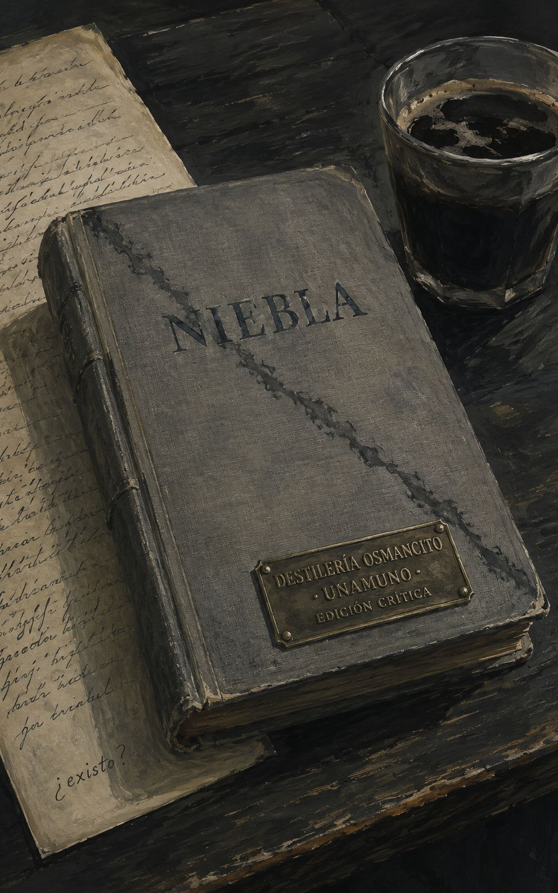
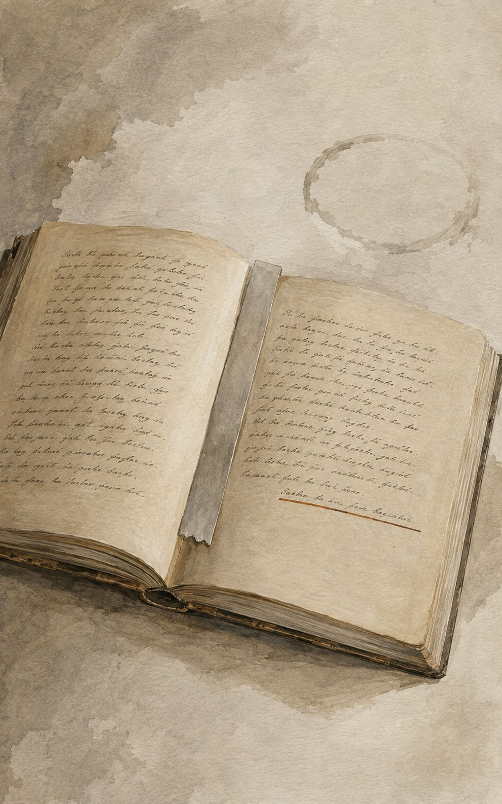
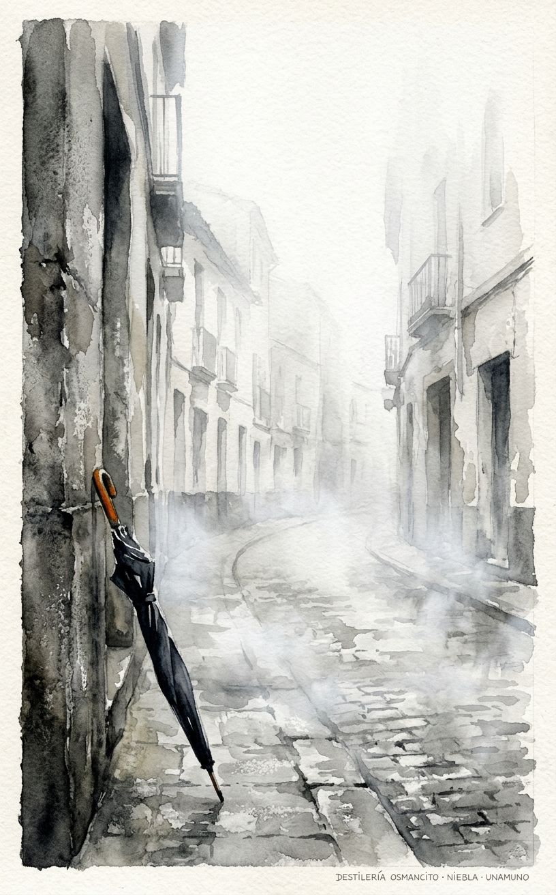
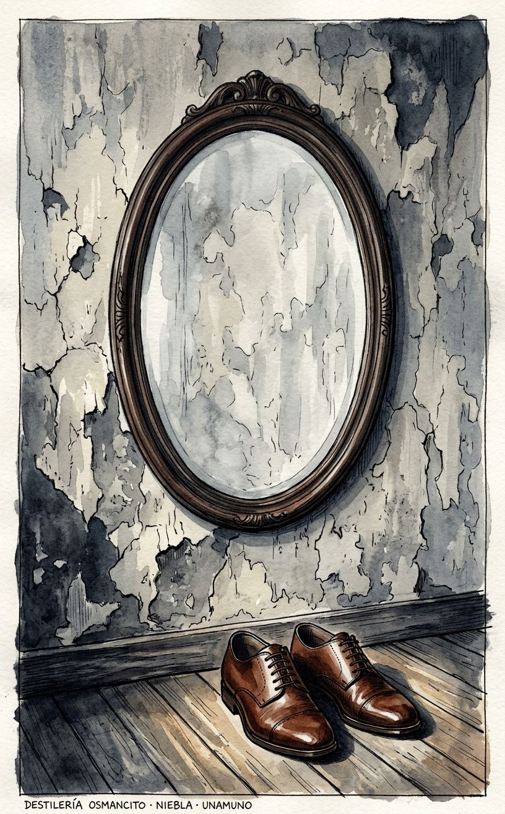
Niebla llega con la pregunta envuelta, no anunciada: ¿qué prueba que alguien existe? El corpus no resume ni argumenta; practica la duda. Su peso es el de un libro que sabe que puede ser personaje dentro de otro libro. Nombrarlo novela ya es tomar partido en un pleito que el texto se niega a resolver.
Título — Niebla
Autor — Miguel de Unamuno y Jugo
Año — 1914 (edición revisada y prologada por el autor: 1935)
Género — Nivola (término acuñado en el propio texto); narrativa filosófica, tragicomedia existencial
Extensión estimada — ~60 000 palabras · ~240 páginas · 31 capítulos, más prólogo de Víctor Goti, post-prólogo de Unamuno y prólogo a la edición de 1935
Idioma original — Español
Palabra más frecuente con contenido — niebla (y sus derivados: nivolesco, nebulosa, nebuloso). Confirma: el corpus lleva su título inscrito en el tejido más elemental del lenguaje, como diagnóstico y como método.
Augusto Pérez, hombre rico, huérfano de madre y sin oficio claro, sigue a una mujer por la calle una mañana lluviosa. Esa mujer, Eugenia Domingo del Arco, pianista, comprometida con otro, se convierte en el objeto de un amor que nunca termina de saber si es amor. Augusto se enamora de ella, pero también de casi todas las mujeres que ve; la persigue, la obsequia, libera la hipoteca de su casa, y Eugenia, al final, huye con su antiguo novio el día antes de la boda. Humillado, Augusto decide suicidarse. Pero antes de hacerlo viaja a Salamanca para consultárselo a su autor —a Unamuno mismo— quien le informa que es un personaje de ficción y que, por tanto, no puede morir porque nunca ha vivido. Augusto muere de todos modos, o Unamuno lo mata, o quizás se muere solo; el libro no resuelve cuál de las tres versiones es verdadera.
Augusto Pérez — protagonista; hombre sin proyecto vital, vagabundo urbano espiritual, que despierta al amor y a la duda de existir al mismo tiempo.
Eugenia Domingo del Arco — objeto del amor de Augusto; pianista que da lecciones para pagar una hipoteca, de carácter férreo, comprometida con Mauricio.
Mauricio — el novio de Eugenia; haragán sin remordimientos que al final huye con ella aprovechando la generosidad de Augusto.
Víctor Goti — amigo íntimo de Augusto, autor de una nivola dentro de la novela, interlocutor filosófico y figura que anticipa el procedimiento metaficcional.
Rosario — muchacha planchadora, joven e inocente, que se convierte en el objeto de los desvíos afectivos de Augusto.
Don Fermín y doña Ermelinda — tíos de Eugenia; él anarquista místico y esperantista; ella autoritaria y pragmática.
Orfeo — el perro de Augusto; confidente, testigo, destinatario de los monólogos más sinceros.
Unamuno — aparece como personaje en el capítulo XXXI; el autor entra en su propia obra para negar la existencia de su criatura.
Augusto Pérez sale una mañana de su casa sin destino. Extiende la mano para ver si llueve —gesto que el libro hace emblemático desde la primera línea. Sigue a una mujer por azar hasta la puerta de su casa y le pregunta su nombre a la portera: Eugenia Domingo del Arco, profesora de piano, soltera, huérfana, que vive con unos tíos y tiene una casa hipotecada como herencia de su padre suicida.
Augusto le escribe una carta que Eugenia no contesta de inmediato. La portera le informa de que hay un novio. Augusto decide luchar. Mientras tanto, en el parque, recoge un cachorro de perro abandonado al que llama Orfeo y que desde entonces es su interlocutor constante.
Un día el canario de la tía de Eugenia cae a la calle; Augusto lo recoge y sube a devolverlo. Así conoce a doña Ermelinda, que lo adopta como candidato ideal para su sobrina, y a don Fermín, anarquista teórico que habla esperanto. Eugenia, al enterarse de la maniobra, lo recibe con frialdad.
En paralelo, Rosario, la muchacha que le lleva la ropa planchada, aparece en su vida. Augusto, despertado al amor por Eugenia, empieza a sentir atracción por casi todas las mujeres que ve. Rosario acaba sentada en sus rodillas, llorando, diciéndole que lo quiere “porque es un infeliz”.
Augusto, sabiendo que Eugenia tiene hipotecada su casa, compra la deuda al acreedor y la condona. Eugenia lo interpreta como un intento de comprarla; le acusa de querer adquirir su cuerpo. Escena violenta. Augusto responde que no quiere su gratitud sino su felicidad, y que si ella ama a otro, buscará a ese otro una colocación.
Siguen entrevistas confusas entre Augusto y Eugenia: ella lo rechaza, luego se aproxima, luego lo coloca en la categoría de “amigo”, luego —sorpresivamente— acepta su proposición de matrimonio. Augusto se convierte en novio oficial.
A tres días de la boda, Eugenia huye con Mauricio en el tren nocturno. Deja una carta comunicándoselo a Augusto: le agradece la casa liberada, le dice que Rosario le queda “para consolarse”, y firma con su nombre completo.
Augusto, anonadado, visita a los tíos. Recibe el golpe con una frialdad que lo aterra: “¿Es que existo?”, se pregunta. Decide suicidarse. Pero antes viaja a Salamanca a consultar a Unamuno.
En el capítulo XXXI —el más famoso del libro— Augusto se sienta frente al autor. Unamuno le explica que es un personaje de ficción, que no tiene existencia real, y que por tanto no puede suicidarse ni morir porque nunca ha vivido. Augusto replica que si es ficción, el autor también lo es; que si Dios sueña a los hombres, los hombres sueñan a Dios. Unamuno, perturbado pero firme, decide matar a Augusto para demostrarse a sí mismo que tiene poder sobre su criatura.
Augusto regresa a su ciudad, y muere. ¿De qué? El libro da tres versiones: Unamuno lo mató, Augusto se suicidó, Augusto murió de muerte natural. El texto no resuelve cuál es verdadera.
El libro abre con prólogo de Víctor Goti —personaje dentro de la novela— que escribe presentando la obra de Unamuno como si este fuera su prologado. Cierra con un obituario de Augusto redactado por el mismo Víctor, quien concluye que la versión de Unamuno sobre la muerte de su amigo es falsa. El libro discute consigo mismo incluso en sus umbrales.
Corpus cálido, de temperatura irregular: hay capítulos que son paseos de humor ligero y otros que son abismos filosóficos, y el tono salta sin aviso entre ambos porque Unamuno cree que la tragicomedia es la forma honesta de la experiencia. El libro produce en quien lo recibe una inquietud de fondo que no viene del argumento —que es leve— sino de su método: a mitad de la lectura el lector empieza a tener la sensación de que también él podría ser preguntado por su existencia y no saber qué contestar. El corpus es extrañamente cómodo con su propia inestabilidad ontológica, como si llevar esa pregunta abierta fuese la condición normal de estar vivo.
¿Quién crea a quién? — La novela no se pregunta si Dios existe; se pregunta si el creador necesita a su criatura tanto como la criatura al creador. Augusto le dice a Unamuno que si él no existe, Unamuno tampoco. El texto nunca resuelve quién tiene razón.
¿El amor es conocimiento o es niebla? — Augusto cae en el amor antes de ver a Eugenia; la imagen que construye de ella precede y supera a la persona real. La pregunta que atraviesa el corpus es si el amor que se dirige a un objeto concreto es más real que el amor que flota en busca de cualquier objeto —y si la diferencia importa.
¿Existir requiere testigos? — Augusto duda de su existencia cuando está solo, se confirma cuando alguien lo mira, y vuelve a dudar cuando la multitud no lo reconoce. El corpus sugiere que la identidad es siempre relacional y nunca propia —lo que lo acerca peligrosamente a la conclusión de que nadie existe en soledad.
El libro abre con tres capas de voz antes de que empiece la novela. La primera es el Prólogo de Víctor Goti, personaje que se presenta como amigo del fallecido Augusto Pérez y que escribe introduciendo la obra de Unamuno como si este fuera su prologado, invirtiendo la convención. Víctor explica el concepto de la nivola —que atribuye a sí mismo, no a Unamuno— y declara que Augusto se suicidó, en contra de la versión que Unamuno sostendrá en el relato. A este prólogo le sigue un Post-prólogo del propio Unamuno, que acepta lo que Víctor escribió pero advierte que podría matar a Goti igual que mató a Augusto si le fastidia demasiado. Finalmente, un Prólogo a la edición de 1935 en el que Unamuno, ya anciano, rememora la historia de la novela, sus traducciones a diez idiomas, y reproduce el momento en que Augusto se le apareció en sueños pidiendo ser resucitado. En ese prólogo Unamuno anticipa las palabras que Augusto le dirigirá en el capítulo XXXI: también usted se morirá, también usted…, presentando el climax antes de que el lector haya entrado al relato.
Augusto Pérez sale de su casa una mañana lluviosa. Extiende el brazo y recibe el orvallo en el dorso de la mano. No sabe adónde ir. Decide esperar a que pase un perro para tomar su dirección, pero lo que pasa es una mujer. La sigue sin darse cuenta, pensando en voz alta sobre el aburrimiento, los automóviles y los vagos de la ciudad, hasta que se detiene frente a una casa. La portera lo observa con ojillos maliciosos. Augusto interpreta la señal: debe preguntar. Se llama Eugenia Domingo del Arco, profesora de piano, soltera, huérfana, vive con unos tíos, tiene la casa de su padre gravada con una hipoteca. Paga a la portera —Margarita— y se va a la Alameda, donde anota el nombre en su cartera y rumia que ya ha estado pensando en los hijos que tendrá con ella antes de saber si ella existía.
De vuelta en casa, Augusto intenta pensar en Eugenia, pero se queda dormido. Come, fuma, monologa: la Eugenia que se está forjando no es la de carne y hueso sino la que él construye a partir de unos ojos entrevistados. El amor precede a su objeto. Escribe una carta entusiasta —sin poner su dirección— y la lleva a Margarita. Margarita le informa de que hay un novio, o algo así: aspirante a novio, interino quizás. Augusto paga otro duro: ¡lucharemos!
En el Casino esa tarde, partida de ajedrez con Víctor Goti, su amigo más cercano. Augusto está distraído y pierde. Le anuncia que está enamorado de Eugenia. Víctor lo ve venir: tú estás enamorado ab origine, desde que naciste. Esa noche, en la cama, Augusto formula: el aburrimiento es el fondo de la vida, el amor es su destilación. Al día siguiente sale más temprano de lo habitual, excitado, y cruza con Eugenia en la calle sin reconocerla del todo, aunque el corazón le avisa.
En el parque, Augusto descubre entre un matorral un cachorrillo recién nacido y abandonado. Lo recoge y lo lleva a casa. Lo bautiza Orfeo, sin saber por qué. Orfeo se convierte desde ese día en el destinatario de sus monólogos.
Mientras Augusto ronda la casa de Eugenia, el canario de la tía —Pichín— cae a la calle porque falla el clavo del balcón. Augusto lo recoge y sube. Conoce así a doña Ermelinda, la tía, que al saber que es hijo de doña Soledad lo adopta como candidato a sobrino político; y a don Fermín, su marido, anarquista místico, esperantista teórico y reformador fonético que no tira bombas pero propugna suprimir la hache. La tía le cuenta que el padre de Eugenia se suicidó tras una ruina bursátil y le dejó una casa gravada con hipoteca que se come todas sus rentas. Eugenia trabaja para pagar esa hipoteca sin esperanza de lograrlo. Al salir, don Fermín susurra a Augusto: ¡No piense usted en eso! y añade que hay presentimientos.
Eugenia, al enterarse de la visita del canario, reacciona con desconfianza pero sin escandalizarse. La tía la presiona. Eugenia replica que también ella es anarquista, pero no mística.
Augusto vuelve a casa y monologa con Orfeo en el primero de sus grandes soliloquios existenciales: se pregunta si Eugenia es creación suya o él creación de ella; confiesa que muchas veces le parece que los demás no lo ven al caminar; medita sobre la eternidad como una marcha hacia atrás por el tiempo. Formula: Amo, ergo sum.
Días después, Augusto es invitado formalmente a que se conozcan en casa de los tíos. Espera en la sala con opresión en el pecho, pensando en huir. Entra Eugenia: cuerpo que no parece pesar sobre el suelo, ojos que irradian luz espiritual, mano blanca y fría como la nieve. Lo llama caballero —de mal agüero— y le dice que no le gusta la música y que tiene novio. Augusto sale encantado: es esta, esta y no otra la mujer que yo necesito.
Escena paralela: Eugenia en la portería de su casa, con Mauricio, su novio. Mauricio es un haragán encantador que no busca trabajo y se niega por dignidad a vivir del sueldo de una mujer —aunque le cuesta precisar qué entiende por dignidad. Eugenia le exige que se decida. Mauricio pospone. Se besan. Eugenia sale furiosa y Mauricio enciende un cigarrillo y le echa un piropo a la primera que pasa. Esa misma noche Mauricio le confiesa a un amigo que de cada cien líos entre hombre y mujer, en más de noventa la seductora es la mujer y el seducido es él.
Augusto, al día siguiente, sale hacia el Casino pero va siguiendo involuntariamente a cuatro mujeres distintas por el camino. Se encuentra con Víctor por casualidad. Víctor lo diagnostica: desde que conoció a Eugenia, el amor abstracto que dormía en él se concretó y ahora se extiende a todas. Añade: si me apuras mucho, tú mismo no eres sino una pura idea, un ente de ficción. Augusto vuelve a casa y pregunta a Liduvina en qué se conoce si un hombre está enamorado. Liduvina: en que hace y dice tonterías.
Augusto regresa a casa de Eugenia para una segunda visita. Le tiembla el corazón. Eugenia, sola con él, le toma el pulso. Él le cubre la mano de besos. Ella le dice con claridad: tiene novio, está enamorada de él, piensa casarse. Pero no se opone a que Augusto venga de visita. Los tíos llegan e interrumpen. Augusto sale decidido: va a hacer algo heroico.
Llega Rosario, la joven que le lleva la ropa planchada. Augusto, que nunca se había fijado en ella, la ve ahora con ojos nuevos. La sienta sobre sus rodillas, le habla de Eugenia, llora, le pregunta si lo querrá. Rosario, entre asustada y conmovida, dice que sí. Liduvina los sorprende, cierra la puerta y se retira. Cuando Rosario se va, Liduvina le confirma a Augusto que está enamorado —pero de Eugenia, no de Rosario. Lo que dijo y hizo con Rosario era lo que no pudo decir ni hacer con la otra.
Mientras tanto, Augusto ha comprado en secreto la hipoteca de la casa de Eugenia al acreedor y la ha condonado. Eugenia viene en persona a enfrentarlo. Le acusa de querer comprarla, de querer comprar no su amor sino su cuerpo. Augusto le ofrece los documentos de la deuda cancelada. Ella los rechaza, lo insulta y sale. Augusto entra en la iglesia de San Martín, se sienta en un banco y recuerda a su madre. Se encuentra con don Avito Carrascal —pedagogo que intentó criar un hijo genio, cuyo hijo se suicidó, y que ahora reza el rosario y ha descubierto a su mujer como madre suya propio. Don Avito le aconseja: cásate.
Víctor le cuenta a Augusto que su mujer Elena está embarazada después de doce años de matrimonio sin hijos. Lo que antes deseaban lo reciben ahora como una catástrofe: Elena no sale a la calle, dice que le da vergüenza, habla de mudarse. Víctor oscila entre la resignación y el asombro de sí mismo. A continuación le relata el caso cómico y fúnebre de don Eloíno: empleado de Hacienda desahuciado que se casa con la patrona de la casa de huéspedes a cambio de que ella lo cuide hasta morir y él le deje viudedad. La patrona acepta porque le aseguran que morirá pronto. Don Eloíno no muere pronto. Ruptura, disputas, la patrona lo echa. Al final muere y le deja 2,15 pesetas diarias de pensión.
En paralelo, Eugenia discute con la tía. Doña Ermelinda insiste en que Augusto es la salvación. Eugenia replica que no quiere hombres buenos: los buenos son para maridos, no para amarse. Y anuncia que se casará con Mauricio y trabajará para los dos. Cuando Mauricio, en su portería, le propone directamente que acepte a Augusto como marido —él paga y nosotros vivimos— Eugenia sale sin hablar, se encierra en su cuarto y rompe a llorar con fiebre.
Víctor le anuncia a Augusto que está escribiendo una novela sin argumento, cuyos personajes se irán formando según hablen. La llamará nivola para que nadie le diga que viola las leyes del género. Un perro servirá de interlocutor en los monólogos. Augusto le dice: se me antoja que me estás inventando. Víctor: ¡puede ser! Al separarse, el narrador interviene en primera persona desde fuera de la escena y confiesa que se sonríe al ver a sus criaturas justificando sus procedimientos: yo soy el Dios de estos dos pobres diablos nivolescos.
Augusto vuelve a ver a Rosario. Otro episodio con ella sobre sus rodillas, besos en los ojos, declaraciones de miedo y de amor confuso. Después un soliloquio a oscuras: la palabra se hizo para mentir; el único que no miente es Orfeo porque no habla.
Doña Ermelinda visita a Augusto en su casa para transmitirle que Eugenia se arrepiente, que acepta la donación de la casa sin condiciones y que quiere ser amiga. Augusto reacciona mal: ¿quiere jugar conmigo como con un piano? Sale a la calle y experimenta el fenómeno inverso del que sintió en casa: a solas se hincha el yo, con la muchedumbre indiferente se achica hasta desaparecer. Escucha a unos niños jugando: uno le dice al otro ¡tú no eres tú!
Eugenia se presenta de improviso en casa de Augusto. Le dice que a los dos los han engañado respecto al otro, que acepta la donación sin compromiso y que quiere ser amiga. Casi lloran juntos. Augusto le echa el brazo al cuello. Eugenia se quita el sombrero —señal de que se queda— y hablan de la fatalidad que los ha unido. En ese momento Liduvina avisa desde fuera: la Rosario, que espera. Eugenia recoge el sombrero y se va. Augusto y Rosario tienen otro encuentro tenso. Rosario le dice: fíese de la Rosario, más leal a usted ni Orfeo. Y añade que lo quiere porque es un infeliz, un pobre hombre.
Don Antonio, conocido del Casino, le revela a Augusto su historia: casado con una mujer que lo dejó por el amante de otra, fue a consolar a la esposa abandonada, de esa convivencia nacieron hijos, y esa mujer de facto es su verdadera mujer. La primera sigue en paradero incierto. Todo nació de unas lágrimas mezcladas sobre la cabeza de la hija del amante.
Víctor anuncia que el hijo —el intruso— ha nacido. Todo ha cambiado en él: Elena le parece más hermosa que nunca, aunque todos dicen que ha envejecido y se ha desfigurado. Augusto le cuenta la leyenda del pirotécnico portugués que quedó ciego en una explosión y siguió ponderando la hermosura de su mujer desfigurada.
Augusto, que empieza a sentir atracción incluso por Liduvina, decide convertir a las mujeres en objeto de estudio psicológico. Consulta a Antolín S. Paparrigópulos, erudito que estudia mujeres de los siglos pasados en los libros porque le da miedo dirigirse a las vivas. Paparrigópulos le comunica la teoría de un oscuro holandés del XVII: todas las mujeres comparten un alma colectiva única, como el entendimiento agente de Averroes. Quien conoce bien a una, conoce a todas. De ahí, le dice, que Augusto se haya enamorado de todas las mujeres desde que se enamoró de una.
Augusto decide hacer el experimento supremo: pedirle a Eugenia que lo acepte como novio, seguro de que lo rechazará. Eugenia, sin embargo —y al enterarse de que Mauricio le ha propuesto el esquema humillante de convivir los tres— se presenta de improviso en casa de los tíos cuando Augusto llega. Lo acepta. Lo acepta por compasión, dice: me das pena, mucha pena. Le da dos leves palmaditas en una rodilla. Augusto piensa: rana, rana completa. Eugenia llama al tío para dar parte. Don Fermín exclama: ¡admirable!, ¡esto es anarquía! La tía: esto ya me lo sabía yo.
Augusto es novio. Rosario deja de aparecer con la ropa planchada; manda a otra. Eugenia le prohíbe el perro: cuando se casen, no habrá monólogos en su casa y Orfeo sobra. Le pide a Augusto que consiga un empleo para Mauricio, lejos. Augusto lo consigue.
Mauricio viene a dar las gracias y anuncia de pasada que se lleva a Rosario consigo. Augusto lo agarra de los brazos y lo tira al sofá. Desde el sofá, Mauricio le dice con calma: mírese en mis pupilas, verá qué chiquito se ve. Augusto se derrite. Pide que traigan a Orfeo: ese no sueña.
El noviazgo. Eugenia mantiene a Augusto a ración de vista, cuidadito y manos quedas. Augusto le escribe un poema a sus ojos como clavos que sujetan el alma al cuerpo. Eugenia dictamina: poco musical, y lo de dulce Eugenia me parece un ripio. Eugenia le prohíbe también a Orfeo: cuando se casen, Orfeo no entra en casa. Otro día le pregunta qué le pasa a un hombre cuando otro le quita la mujer a que pretendía, mirándolo fijamente con ojos que atraviesan.
A tres días de la boda, por la mañana, Liduvina trae una carta. Augusto la abre en la iglesia más cercana, entre devotos que oyen misa. Eugenia ha huido con Mauricio en el tren nocturno. Le agradece la casa y el empleo, le dice que ni ella lo habría hecho feliz ni él a ella, y en posdata: No viene con nosotros Rosario. Te queda ahí y puedes con ella consolarte. Augusto visita a los tíos. Don Fermín, el anarquista, exige castigo. Augusto, frío: al otro no le ha engañado. Sale a la calle palpándose para ver si siente algo.
Víctor encuentra a Augusto hundido en un rincón. Augusto: me han demostrado que no existo. Víctor: ¡qué felicidad! Sigue un diálogo filosófico —comedia, todo es comedia, incluso el dolor; hay que confundirlo todo en una sola niebla— que acaba cuando Augusto pregunta qué va a hacer y Víctor le dice: ¡devórate! Augusto: ¿que me suicide? Víctor: en eso ya no me quiero meter. Y se va.
Augusto decide, en terrible calma, suicidarse. Pero antes viaja a Salamanca a consultarlo con el autor del relato. El narrador pasa a la primera persona. Augusto entra al despacho, mira el retrato al óleo que preside los libros, se sienta. El autor le demuestra que sabe todo lo que le ha pasado —los más íntimos pormenores— y Augusto lo mira con terror. Le dice que no puede suicidarse porque no existe: es un ente de ficción, producto de su fantasía. Augusto se repone y replica: acaso sea usted el ente de ficción y yo el pretexto para que mi historia llegue al mundo; si Dios sueña a los hombres, ¿quién es más real, el que sueña o el soñado? El autor pierde la paciencia, golpea la mesa: ¡basta!, ¡no ya que no te suicides, sino que voy a matarte yo! Augusto suplica. Quiere vivir. ¡Quiero vivir, vivir, vivir, verme, oírme, tocarme, sentirme, dolerme, serme! El autor lo empuja hacia la puerta. Augusto, al salir, le lanza la maldición: ¡también usted se morirá, también usted, y se volverán a la nada todos los que lean mi historia, todos, todos, todos! ¡Entes de ficción como yo, lo mismo que yo! El autor lo empuja fuera y se enjuga una lágrima furtiva.
Augusto vuelve a su ciudad en el tren contando los minutos uno a uno. Llega a casa con cara de otro mundo. Liduvina palidece. Augusto pide cenar y devora con un apetito voraz de condenado en capilla: huevos, bistec, jamón en dulce, fiambres, queso, pastas, fruta. Se dice: como, luego existo; soy inmortal, porque si no existe no puede morir. Escribe un telegrama para enviarse después de muerto: Salamanca. Unamuno. Se salió usted con la suya. He muerto. Augusto Pérez. Pide a Domingo que lo desvista, lo acueste, le tome la mano derecha —siente que no es suya—, lo persigne, recite oraciones. Se duerme murmurando: Pienso, luego soy; soy, luego pienso… ¡No existo, no!… madre mía… Eugenia… Rosario… Unamuno…
Muere en la madrugada. El libro no dice de qué ni cómo exactamente. El texto da tres versiones incompatibles y no arbitra entre ellas: Víctor Goti, en su prólogo —que abre el libro—, afirma tener pruebas de que Augusto se suicidó. Unamuno sostiene en el relato haberlo matado él. El cuerpo del texto mismo no resuelve nada. El libro cierra como empezó: con voces que se contradicen sin que ninguna tenga autoridad definitiva sobre las otras.
Los paratextos del libro (prólogos, post-prólogos, prólogo de 1935) ya contienen el desenlace antes de que empiece la novela: Víctor Goti declara en el prólogo que Augusto se suicidó; Unamuno en el prólogo de 1935 cita las palabras del capítulo XXXI antes de que el lector las encuentre. La estructura del libro repite su tema central: así como el amor de Augusto precede a su objeto, el final de la novela precede a su desarrollo. Es una recursividad formal, no un accidente editorial. Los instrumentos de análisis que sigan deben partir de esta observación para no describirla como hallazgo nuevo cuando la alcancen.
Al aparecer Augusto a la puerta de su casa extendió el brazo derecho, con la mano palma abajo y abierta, y dirigiendo los ojos al cielo quedóse un momento parado en esta actitud estatuaria y augusta. No era que tomaba posesión del mundo exterior, sino era que observaba si llovía. Y al recibir en el dorso de la mano el frescor del lento orvallo frunció el sobrecejo. Y no era tampoco que le molestase la llovizna, sino el tener que abrir el paraguas. ¡Estaba tan elegante, tan esbelto, plegado y dentro de su funda! Un paraguas cerrado es tan elegante como es feo un paraguas abierto.
Porque Augusto no era un caminante, sino un paseante de la vida. Esperaría a que pasara un perro y tomaría la dirección que él tomase. Pero pasó no un perro sino una garrida moza, y tras de sus ojos se fue, como imantado y sin darse de ello cuenta. Cuando se detuvo frente a la casa donde ella había entrado, la portera lo miraba con ojillos maliciosos. Augusto entendió la señal: las obras deben acabarse. Odio lo imperfecto.
Así supo que se llamaba Eugenia Domingo del Arco, profesora de piano. Y así empezó todo.
Sentado en un banco de la Alameda, la llovizna ya cesada, Augusto apuntó el nombre en su cartera y se quedó pensando. Su Eugenia, se dijo, era la que él se estaba forjando a solas, no la otra, no la de carne y hueso. Tal vez mi amor ha precedido a su objeto. Es más, es este amor el que lo ha suscitado, el que lo ha extraído de la niebla de la creación. El amor precede al conocimiento, y este mata a aquel. Para amar algo, ¿qué basta? Vislumbrarlo. El vislumbre: he aquí la intuición amorosa, el vislumbre en la niebla. La vida es esto, la niebla. La vida es una nebulosa.
Aquella noche, en la cama, la formulación se completó: El aburrimiento es el fondo de la vida, y el aburrimiento es el que ha inventado los juegos, las distracciones, las novelas y el amor.
Le decía a Orfeo, el cachorrillo recogido en el parque, destinatario de sus monólogos más verdaderos:
¿De dónde ha brotado Eugenia? ¿Es ella una creación mía o soy creación suya yo, o somos los dos creaciones mutuas, ella de mí y yo de ella? Muchas veces se me ha ocurrido pensar que yo no soy, que iba por la calle antojándoseme que los demás no me veían. Y ahora me brillan en el cielo de mi soledad los dos ojos de Eugenia. Y me hacen creer que existo, ¡dulce ilusión! Amo, ergo sum. Este amor es como lluvia bienhechora en que se deshace y concreta la niebla de la existencia. Empieza a dolerme en su cogollo mismo el alma, gracias al amor, Orfeo. Y el alma misma, ¿qué es sino amor, sino dolor encarnado?
Víctor, su amigo, le explicó un día que estaba escribiendo una novela sin argumento, una en que los personajes se irían haciendo según hablasen. ¿Y cómo llamarla, si no era novela?
—Será… nivola.
—¿Y qué es eso?
—Así nadie tendrá derecho a decir que deroga las leyes de su género. Invento el género, y le doy las leyes que me place.
Augusto salió de aquella conversación diciéndose: Y esta mi vida, ¿es novela, es nivola o qué es? ¿No es acaso todo esto un sueño de Dios o de quien sea, que se desvanecerá en cuanto Él despierte? ¿No es acaso la liturgia de todas las religiones un modo de brezar el sueño de Dios y que no despierte y deje de soñarnos?
En aquel momento el narrador añadió, desde fuera del diálogo, que se sonreía enigmáticamente al ver que sus personajes nivolescos estaban abogando por él y justificando sus procedimientos: Así cuando uno busca razones para justificarse no hace en rigor otra cosa que justificar a Dios. Y yo soy el Dios de estos dos pobres diablos nivolescos.
Eugenia huyó con Mauricio tres días antes de la boda. Dejó una carta. Augusto la leyó en una iglesia, entre devotos que oían misa. La carta terminaba con una posdata: No viene con nosotros Rosario. Te queda ahí y puedes con ella consolarte.
Iba aterrado de sí mismo y de lo que le pasaba, o mejor aún, de lo que no le pasaba. Si yo fuese un hombre como los demás, con corazón; si fuese siquiera un hombre, si existiese de verdad, ¿cómo podía haber recibido esto con la relativa tranquilidad con que lo recibo? Y empezó, sin darse de ello cuenta, a palparse, y hasta se pellizcó para ver si lo sentía.
Víctor, cuando lo encontró, le dijo que la única salida era devorarse a sí mismo. Augusto respondió que lo que sentía era que por fin había nacido: Sí, de mí mismo. Con esto creo haber nacido de veras. Y para sufrir, para morir.
Y preguntó, en voz alta, qué era lo real, lo verdadero, lo sentido.
—Y ¿quién te ha dicho que la comedia no es real y verdadera y sentida? —respondió Víctor.
Aquella tempestad del alma de Augusto terminó, como en terrible calma, en decisión de suicidarse. Pero antes de llevar a cabo su propósito, ocurriósele consultarlo con el autor de todo este relato. Emprendió, pues, un viaje a Salamanca para visitarme.
Cuando me anunciaron su visita sonreí enigmáticamente y le mandé pasar a mi despacho-librería.
Empezó hablándome de mis trabajos literarios y más o menos filosóficos, y en seguida empezó a contarme su vida y sus desdichas. Le atajé diciéndole que se ahorrase aquel trabajo, pues de las vicisitudes de su vida sabía yo tanto como él, y se lo demostré citándole los más íntimos pormenores. Me miró con ojos de verdadero terror.
—Tú —le dije, recalcando el tú con un tono autoritario—, abrumado por tus desgracias, has concebido la diabólica idea de suicidarte, y antes de hacerlo vienes a consultármelo.
—Es que… es que… —balbuceó.
—Es que tú no puedes suicidarte, aunque lo quieras.
—¿Cómo? —exclamó al verse de tal modo negado y contradicho.
—Sí. Para que uno se pueda matar a sí mismo, ¿qué es menester?
—Que tenga valor para hacerlo —me contestó.
—No. ¡Que esté vivo! ¡Y tú no estás vivo!
Le expliqué entonces que no existía más que como ente de ficción, producto de mi fantasía y de las de aquellos de mis lectores que leyesen el relato de sus fingidas venturas. Quedóse mirándome un rato con una de esas miradas perforadoras que parecen ir más allá, y luego, recobrado, me dijo lentamente:
—Mire usted bien, don Miguel… no sea que esté usted equivocado y que ocurra precisamente todo lo contrario de lo que usted se cree y me dice. No sea que sea usted y no yo el ente de ficción, el que no existe en realidad… No sea que usted no pase de ser un pretexto para que mi historia llegue al mundo.
—¡Eso más faltaba! —exclamé algo molesto.
—No se exalte usted, señor de Unamuno. ¿No ha sido usted el que ha dicho que don Quijote y Sancho son no ya tan reales, sino más reales que Cervantes? Y cuando un hombre dormido sueña algo, ¿qué es lo que más existe, él como conciencia que sueña, o su sueño?
Insistí: tú no existes fuera de mí. Él insistió: usted no existe fuera de mí y de los demás personajes a quienes usted cree haber inventado.
Empezaba yo a estar inquieto y a perder mi paciencia. Acabé golpeando la camilla:
—¡Basta! ¡Cállate, no quiero oír más impertinencias! ¡Y de una criatura mía! Como ya me tienes harto y no sé qué hacer de ti, decido ahora mismo no ya que no te suicides, sino matarte yo. ¡Vas a morir, pues! ¡Muy pronto!
—¿Conque no, eh? —me dijo él entonces—. ¿Conque no? No quiere usted dejarme ser yo, salir de la niebla, vivir, vivir, vivir, verme, oírme, tocarme, sentirme, dolerme, serme. ¿Conque he de morir ente de ficción? Pues bien, mi señor creador don Miguel, ¡también usted se morirá, también usted, y se volverá a la nada de que salió! ¡Dios dejará de soñarle! ¡Se morirá usted, sí, se morirá, aunque no lo quiera; se morirá usted y se morirán todos los que lean mi historia, todos, todos, todos sin quedar uno! ¡Entes de ficción como yo, lo mismo que yo! ¡Se morirán todos, todos, todos!
Le empujé a la puerta. Luego se tanteó como si dudase ya de su propia existencia. Yo me enjugué una lágrima furtiva.
De regreso en su ciudad, Augusto cenó con un apetito voraz y desesperado —el de los condenados en capilla. Escribió un telegrama para enviarse después de su muerte: Salamanca. Unamuno. Se salió usted con la suya. He muerto. Augusto Pérez. Y se acostó diciéndose: Pienso, luego soy; soy, luego pienso. ¡No existo, no!, ¡no existo… madre mía! Eugenia… Rosario… Unamuno… Y se quedó dormido.
Murió en la madrugada. Víctor Goti, en el post-prólogo que abre el libro, afirma que se suicidó y que tiene pruebas. Unamuno, en el relato, afirma que lo mató él. El cuerpo del texto no resuelve quién dice la verdad. Los tres: el personaje, el narrador y el prologuista, reclaman versiones incompatibles de un mismo hecho. El libro cierra sin árbitro.
Valor. Niebla merece más de lo que le dan los que lo recuerdan solo por el capítulo XXXI. La escena con el autor es el momento más alto, sí, pero el corpus la gana: sin los monólogos con Orfeo, sin el amor que precede a su objeto, sin la vida de aburrimiento que el amor interrumpe, esa escena sería un truco. Con todo eso detrás, es una proposición filosófica que se sostiene sola.
Goce. Este libro se disfruta y se admira al mismo tiempo, que es la combinación más difícil. Hay páginas de humor ligero y verdadero —el tío anarquista, la portera, Liduvina— junto a páginas donde el suelo desaparece bajo el lector. El tono salta sin aviso y eso, que en otro libro sería un defecto, aquí es el método. Se lee con la misma inquietud con que Augusto vive: sin saber bien si lo que ocurre es real o es niebla.
Niebla es un libro donde casi nada pasa —y donde cada vez que pasa algo, el que lo recibe no reacciona como debería. Augusto es traicionado tres días antes de su boda y su primera reacción es palparse para ver si existe. Se entera de que es un personaje de ficción y en vez de colapsar empieza a discutir filosofía. La novela acumula eventos que deberían ser devastadores y los transforma, uno tras otro, en preguntas sobre la realidad. El verdadero evento del libro no es ninguno de los que ocurren: es la pregunta que todos ellos disparan y que el lector termina haciéndose sobre sí mismo.
Prólogo [paratexto inicial] — Víctor Goti escribe el prólogo de un libro cuyo autor todavía vive. Víctor Goti, personaje de la novela, abre el libro presentando la obra de Unamuno como si este fuera su prologado —invirtiendo la posición convencional de autor y prologuista. En ese mismo prólogo declara que Augusto Pérez se suicidó y que tiene pruebas, contradiciendo de antemano la versión que Unamuno sostendrá en el relato. El libro empieza con una guerra de versiones sobre un muerto que aún no ha aparecido en escena.
Capítulo I — Augusto sale sin destino y sigue a una mujer. Augusto extiende el brazo para ver si llueve, decide seguir al primer perro que pase para tomar dirección, pero lo que pasa es una mujer. La sigue sin darse cuenta hasta la puerta de su casa, pregunta su nombre a la portera, anota el nombre en su cartera y se va a la Alameda a rumiar que ya ha pensado en los hijos que tendrá con ella antes de saber si ella existía. El amor de Augusto precede a Eugenia.
Capítulo II — Augusto escribe una carta sin remitente. De vuelta en casa, Augusto escribe a Eugenia una carta entusiasta —sin poner su dirección para que ella no pueda responder— y la lleva a la portera. Margarita le informa de que hay un novio. Augusto paga un duro: ¡lucharemos! Es el gesto del hombre que empieza una campaña sin haber decidido qué quiere ganar.
Capítulo III — Augusto recoge un cachorro abandonado y lo bautiza Orfeo. En el parque, Augusto encuentra entre un matorral un cachorrillo recién nacido al que adopta. Lo llama Orfeo sin saber por qué. Orfeo se convierte desde ese día en el único interlocutor al que Augusto le dice la verdad, porque Orfeo no habla y por tanto no puede traicionarlo.
Capítulo V — Primer encuentro cara a cara con Eugenia. Augusto espera en la sala de los tíos con opresión en el pecho, pensando en huir. Entra Eugenia: le dice que no le gusta la música y que tiene novio. Augusto sale encantado: es esta, esta y no otra la mujer que yo necesito. El rechazo funciona como confirmación.
Capítulo VI — El canario cae y Augusto sube. El canario de doña Ermelinda cae a la calle porque falla el clavo del balcón. Augusto lo recoge, sube a devolverlo y conoce así a los tíos. Lo que iba a ser una visita imposible se abre por un accidente. El azar hace lo que la voluntad no podía.
Capítulo VII — Primer soliloquio existencial con Orfeo. Augusto monologa con el perro sobre si Eugenia es creación suya o él creación de ella; confiesa que muchas veces le parece que los demás no lo ven al caminar; medita sobre la eternidad como marcha hacia atrás. Formula: Amo, ergo sum. Es el primer momento en que el amor y la duda sobre la existencia se fusionan en una sola pregunta.
Capítulo IX — Mauricio en la portería. En paralelo con el cortejo de Augusto, Mauricio y Eugenia discuten en la portería de su casa. Mauricio no busca trabajo por dignidad —aunque le cuesta precisar qué entiende por dignidad. Eugenia le exige que se decida. Se besan. Eugenia sale furiosa y Mauricio le echa un piropo a la primera que pasa. La cámara se desplaza y muestra que Eugenia tiene una vida afectiva que no incluye a Augusto.
Capítulo X — Víctor diagnostica el amor de Augusto. Augusto le cuenta a Víctor que desde que conoció a Eugenia siente atracción por casi todas las mujeres. Víctor lo diagnostica: pasó de lo abstracto a lo concreto, y de lo concreto a lo genérico. Añade, en tono de broma: si me apuras, tú no eres sino una pura idea, un ente de ficción. Es la primera vez que alguien le dice a Augusto que podría no existir.
Capítulo XII — Rosario sobre las rodillas de Augusto. Rosario, la joven que lleva la ropa planchada, aparece en la vida de Augusto en el momento de mayor frustración amorosa. Él la sienta sobre sus rodillas, llora, le habla de Eugenia, le pregunta si lo querrá. Rosario dice que sí, entre asustada y conmovida. Cuando Rosario se va, Liduvina le dice a Augusto que lo que hizo y dijo con ella era lo que no pudo hacer y decir con la otra.
Capítulo XIII — Eugenia enfrenta a Augusto por la hipoteca. Augusto ha comprado y condonado la hipoteca de la casa de Eugenia. Eugenia viene en persona a acusarlo de querer comprarla. Ofrece los documentos. Ella los rechaza, lo insulta y sale. Augusto entra en una iglesia y llora pensando en su madre. La generosidad se convierte en ofensa; la ofensa produce nostalgia materna.
Capítulo XV — Eugenia llora encerrada en su cuarto. Cuando Mauricio le propone a Eugenia, en su propia portería, que acepte a Augusto como marido y que ellos dos vivan de él, Eugenia sale sin hablar, se encierra en su cuarto y rompe a llorar con fiebre. Es el único momento del libro en que Eugenia aparece derrotada y sola, sin testigos.
Capítulo XVII — El narrador interviene y se ríe. Mientras Augusto y Víctor dialogan sobre la nivola en construcción, el narrador interrumpe en primera persona para confesar que se sonríe al ver a sus criaturas justificando sus procedimientos: yo soy el Dios de estos dos pobres diablos nivolescos. El libro se pliega sobre sí mismo por primera vez, antes del capítulo XXXI.
Capítulo XIX — El yo de Augusto se hincha y se achica. Después de la visita de doña Ermelinda, Augusto sale a la calle diciéndose ¡yo soy yo! y siente que el yo se le hincha. Con la muchedumbre indiferente, el yo se le achica hasta desaparecer. Se sienta en un banco y escucha a unos niños: uno le dice al otro ¡tú no eres tú! Augusto no quiere oír más y se va a otro banco.
Capítulo XX — Eugenia se presenta en casa de Augusto. Eugenia, sin avisar, llega a casa de Augusto, se quita el sombrero —señal de que se queda— y habla de la fatalidad que los ha unido. Augusto le echa el brazo al cuello. En ese momento Liduvina avisa desde fuera: la Rosario, que espera. Eugenia recoge el sombrero y se va. La escena más próxima al amor real que tendrán jamás termina por la llegada de la otra.
Capítulo XXII — El pirotécnico portugués. Víctor, ciego de amor tras el nacimiento de su hijo, le cuenta a Augusto la leyenda del fogueteiro que quedó ciego en una explosión y siguió ponderando la hermosura de su mujer desfigurada. La ceguera del amor no es aquí retórica: funciona como un estado cognitivo real que el libro defiende sin ironía.
Capítulo XXIV — Eugenia acepta la proposición. Augusto va a pedir a Eugenia que lo acepte como novio, seguro de que lo rechazará —un experimento psicológico. Eugenia lo acepta. Lo acepta por compasión: me das pena, mucha pena. Le da dos palmaditas en una rodilla. Augusto piensa: rana, rana completa. El experimentador ha sido el experimento.
Capítulo XXVII — Eugenia lee el poema y lo suspende. Augusto le escribe un soneto a los ojos de Eugenia. Se lo lee. Eugenia dictamina: poco musical, y lo de dulce Eugenia me parece un ripio. Le prohíbe además al perro: cuando se casen, Orfeo no entrará en casa. Augusto negocia: siquiera hasta que tengamos un hijo. Eugenia: si lo tenemos.
Capítulo XXVIII — Mauricio en el despacho de Augusto. Mauricio viene a dar las gracias por el empleo. Anuncia de pasada que se lleva a Rosario. Augusto lo agarra y lo tira al sofá. Desde el sofá, Mauricio le dice con calma: mírese en mis pupilas, verá qué chiquito se ve. Augusto se derrite. Llama a Liduvina para preguntarle si Mauricio estuvo de verdad. Pide que traigan a Orfeo: ese no sueña.
Capítulo XXIX — La carta de Eugenia. A tres días de la boda, Liduvina trae una carta. Augusto la abre en la iglesia más próxima, entre devotos que oyen misa. Eugenia ha huido con Mauricio en el tren nocturno. Le agradece la casa y el empleo. En posdata: No viene con nosotros Rosario. Te queda ahí y puedes con ella consolarte. Augusto se arrodilla en el banco de la iglesia. Sale a la calle y empieza a palparse para ver si siente algo.
Capítulo XXX — Víctor y la comedia del dolor. Víctor encuentra a Augusto hundido. Le dice que todo es comedia —el dolor, el suicidio, la existencia misma. Augusto: ¿qué voy a hacer? Víctor: ¡devórate! Y se va. El consejo filosófico más largo del libro termina dejando a Augusto más solo que antes.
Capítulo XXXI — Augusto ante su autor. Augusto viaja a Salamanca a consultar con Unamuno si debe suicidarse. Unamuno le demuestra que conoce todos sus secretos, le dice que es un ente de ficción y que por tanto no puede morir porque nunca ha vivido. Augusto replica que acaso sea Unamuno el ente de ficción. Debaten. Unamuno pierde la paciencia y anuncia que lo va a matar. Augusto, que había venido a consultarle un suicidio, suplica que lo deje vivir: ¡quiero vivir, vivir, vivir, verme, oírme, tocarme, sentirme, dolerme, serme! Al salir, Augusto lanza la maldición: también usted se morirá, y todos los que lean mi historia, todos, entes de ficción como yo. Unamuno se enjuga una lágrima furtiva.
Capítulo final — La cena del condenado y la muerte. Augusto regresa a su ciudad contando los minutos. Pide cenar y devora con apetito voraz de condenado en capilla. Se dice que es inmortal porque si no existe no puede morir. Escribe un telegrama para enviarse después de muerto. Pide a Domingo que lo acueste, lo persigne y le tome la mano. Se duerme murmurando nombres. Muere en la madrugada. El libro no dice de qué.
Paratextos de cierre — Tres versiones sin árbitro. Víctor Goti, en el prólogo que abre el libro, afirma tener pruebas de que Augusto se suicidó. Unamuno, en el relato, sostiene haberlo matado él. El texto no resuelve cuál versión es verdadera. Hay tres autores del final de Augusto y ninguno tiene la última palabra.
Un libro donde los eventos existen para que el personaje que los recibe se pregunte si existe, y donde esa pregunta acaba infectando al lector con la misma duda.
Las mejores páginas de Niebla no son las del capítulo XXXI —que todos citan— sino las de los monólogos de Augusto con Orfeo, donde un hombre le habla a un perro sobre si existe y el perro lo mira sin contestar. Ahí está todo: el amor que inventa su objeto, el yo que se hincha a solas y se achica en la muchedumbre, la eternidad entendida como marcha hacia atrás. Unamuno construyó durante treinta capítulos una soledad tan precisa que cuando el autor entra en escena a matar a su personaje el lector siente que el crimen es real. La joya mayor del libro no es una frase: es el mecanismo completo, la máquina que convierte la duda filosófica en experiencia física del lector.
Víctor escribe el prólogo de un libro cuyo autor todavía vive. La inversión de prólogo es el primer movimiento metaficcional del libro, anterior al capítulo XXXI. Víctor, personaje, presenta a Unamuno, autor, como si este fuera su prologado. La tensión abierta en el prólogo —Augusto se suicidó, dice Víctor; yo lo maté, dirá Unamuno en el relato— nunca se resuelve. El libro empieza como un pleito sin árbitro. Temperatura: desestabilización cómica.
Veredicto del paratexto: capítulo que abre una grieta en la autoridad del autor antes de que este haya dicho una palabra.
El párrafo que lo resume todo antes de que empiece. Víctor, en el prólogo, define al humorismo que practica Unamuno: no mezclar lo bufo y lo trágico, sino fundirlos y confundirlos en uno. Es el programa estético del libro declarado en el umbral por un personaje que no debería saberlo. La técnica anuncia su propio método.
Joya — La definición del humorismo
Lo que se vomita no lo que se digiere
Hay quien escribe para que el lector ría y haga mejor la digestión. Don Miguel escribe para que vomite lo que hubiere engullido. Dice que se ve más claro el sentido de la vida con el estómago vacío de golosinas, y que donde no hay alguna hiel no hay ironía, y que la discreción está reñida con el humorismo, o como él se complace en llamarlo: malhumorismo.
El paraguas y la mujer. La tensión abre en la primera línea: Augusto sale sin destino, extiende el brazo para ver si llueve, y la mano abierta recibirá el orvallo. Viaja por dos decisiones simultáneas: seguiré al primer perro que pase, y luego: pero lo que pasa es una mujer. El capítulo cierra con el nombre anotado en la cartera y la pregunta implícita —¿qué hace un hombre con un nombre y una dirección?— suspendida. Temperatura: ingravidez.
Veredicto: capítulo que funda el método del corpus: el azar como forma de voluntad.
Joya — La postura inaugural
La estatua que mira si llueve
Al aparecer a la puerta de su casa extendió el brazo derecho, con la mano palma abajo y abierta, y dirigiendo los ojos al cielo quedóse un momento parado en esta actitud estatuaria y augusta. No era que tomaba posesión del mundo exterior, sino era que observaba si llovía. Y al recibir en el dorso de la mano el frescor del lento orvallo frunció el sobrecejo. Y no era tampoco que le molestase la llovizna, sino el tener que abrir el paraguas. ¡Estaba tan elegante, tan esbelto, plegado y dentro de su funda! Un paraguas cerrado es tan elegante como es feo un paraguas abierto.
Joya — El paseante y el caminante
La diferencia
Porque Augusto no era un caminante, sino un paseante de la vida. Esperaría a que pasara un perro y tomaría la dirección que él tomase. Pero pasó no un perro sino una garrida moza, y tras de sus ojos se fue, como imantado y sin darse de ello cuenta.
El amor que no necesita objeto. La tensión se abre cuando Augusto, de vuelta en casa, intenta pensar en Eugenia y se queda dormido. Viaja por la distinción que Augusto formula a solas: su Eugenia no es la de carne y hueso sino la que se está forjando. Cierra con la frase el amor precede al conocimiento, y este mata a aquel —que es el eje filosófico de toda la novela en una línea, antes del capítulo V. Temperatura: revelación tranquila.
Veredicto: capítulo que entrega la tesis central del corpus antes de que el argumento la haya ganado.
Joya — El amor que crea su objeto
Antes de que ella existiera
Su Eugenia, se dijo, era la que él se estaba forjando a solas, no la otra, no la de carne y hueso. Tal vez mi amor ha precedido a su objeto. Es más, es este amor el que lo ha suscitado, el que lo ha extraído de la niebla de la creación. El amor precede al conocimiento, y este mata a aquel. Para amar algo, ¿qué basta? Vislumbrarlo. El vislumbre: he aquí la intuición amorosa, el vislumbre en la niebla. La vida es esto, la niebla. La vida es una nebulosa.
Augusto recoge a Orfeo. Capítulo que instala el interlocutor de los monólogos sin producir joyas independientes. Función: dotación de escenario.
El primer encuentro con Eugenia. La tensión abre con la espera de Augusto en la sala de los tíos, dispuesto a huir. Viaja hacia el encuentro real: mano fría, ojos de luz espiritual, el rechazo explícito. Cierra con el giro: Augusto sale encantado. El rechazo ha funcionado como confirmación. Temperatura: paradoja afectiva.
Veredicto: capítulo que establece la lógica amorosa de Augusto: el obstáculo es el combustible.
Joya — El fondo del aburrimiento
La fórmula nocturna
El aburrimiento es el fondo de la vida, y el aburrimiento es el que ha inventado los juegos, las distracciones, las novelas y el amor.
Andamiaje funcional: el canario abre la puerta a los tíos. Sin joyas independientes.
El primer soliloquio con Orfeo. La tensión abre cuando Augusto, solo con el perro, formula las preguntas que no puede hacer a ningún humano. Viaja por una serie de dudas que escalan: ¿es Eugenia creación mía o yo creación suya? ¿Me ven cuando camino? ¿Qué es la eternidad? Cierra con la fórmula Amo, ergo sum —inversión del cogito cartesiano que pone el amor donde Descartes puso el pensamiento. Temperatura: vértigo sereno.
Veredicto: capítulo que fusiona por primera vez el amor y la duda ontológica en una sola pregunta.
Joya — La creación mutua
¿Quién inventó a quién?
¿De dónde ha brotado Eugenia? ¿Es ella una creación mía o soy creación suya yo, o somos los dos creaciones mutuas, ella de mí y yo de ella? Y me hacen creer que existo, ¡dulce ilusión! Amo, ergo sum. Este amor es como lluvia bienhechora en que se deshace y concreta la niebla de la existencia.
Joya — El dolor del alma
Señal de vida
Empieza a dolerme en su cogollo mismo el alma, gracias al amor, Orfeo. Y el alma misma, ¿qué es sino amor, sino dolor encarnado?
Presentación de Mauricio, las visitas a los tíos, el diagnóstico de Víctor. Se produce una joya en el capítulo X.
Joya — El ente de ficción en broma
Lo que dijo Víctor sin querer decirlo
—Si me apuras mucho, tú mismo no eres sino una pura idea, un ente de ficción.
Lo dijo en tono de broma. Augusto no supo qué contestar. Se fue a casa pensando en otra cosa. Pero la frase se quedó.
Rosario sobre las rodillas / La hipoteca. Dos movimientos en tensión paralela: el que Augusto no puede hacer con Eugenia lo hace con Rosario; la generosidad con Eugenia se convierte en ofensa. Ambos cierran en el mismo lugar: Augusto entra en una iglesia y llora pensando en su madre. Temperatura: desvío y extrañeza.
Veredicto: capítulos que revelan que el amor de Augusto es siempre amor a algo ausente.
Joya — El diagnóstico de Liduvina
Cómo se sabe
—¿En qué se conoce si un hombre está enamorado?
—En que hace y dice tonterías.
Augusto lo pensó. Era la definición más breve que había escuchado. Y la más exacta.
Joya — Lo que hizo con Rosario
El amor desplazado
Lo que dijo y hizo con Rosario era lo que no pudo decir ni hacer con la otra. Rosario era el lugar donde iba a parar lo que Eugenia no recibía.
Historia de Víctor y el embarazo, caso de don Eloíno, disputa Eugenia-tía. Capítulos de construcción de mundo sin joyas autónomas.
Eugenia llora sola. Un solo movimiento: Mauricio propone el esquema de los tres; Eugenia sale sin hablar, se encierra, llora con fiebre. Sin testigos. Sin comentario del narrador. Temperatura: desnudez.
Veredicto: el único capítulo donde Eugenia aparece sola y derrotada. Funciona como contrapeso de su frialdad habitual.
El narrador entra en escena. La tensión abre en la conversación entre Augusto y Víctor sobre la nivola. Viaja por la explicación del género inventado. Cierra con el giro: el narrador interrumpe en primera persona para confesar que se ríe de sus criaturas y que él es el Dios de estos dos pobres diablos nivolescos. Es la primera fractura metaficcional antes del capítulo XXXI. Temperatura: ironía divina.
Veredicto: capítulo que introduce el pliegue metaficcional como método, no como accidente.
Joya — El Dios que sonríe
El autor visto desde arriba
Mientras Augusto y Víctor hablaban, el autor de esta nivola se sonreía enigmáticamente al ver que sus nivolescos personajes estaban abogando por él y justificando sus procedimientos, y se decía a sí mismo: Así cuando uno busca razones para justificarse no hace en rigor otra cosa que justificar a Dios. Y yo soy el Dios de estos dos pobres diablos nivolescos.
Joya — La definición de la nivola
Cómo se inventa un género
—La llamaré nivola, así nadie tendrá derecho a decir que deroga las leyes de su género. Invento el género, y le doy las leyes que me place.
—¿Y los que digan que no es novela?
—Que la llamen como quieran.
El yo que se hincha y se achica. La tensión abre con Augusto diciéndose ¡yo soy yo! en casa. Viaja hacia la calle, donde la muchedumbre indiferente lo reduce hasta desaparecer. Cierra con el golpe de los niños: ¡tú no eres tú! Temperatura: deflación ontológica.
Veredicto: capítulo que hace físico el problema filosófico del yo: no argumento sino experiencia de cuerpo en la calle.
Joya — El yo que se achica
La calle como instrumento de reducción
Apenas pisó la calle y se encontró con el cielo sobre la cabeza y las gentes que iban y venían, cada cual a su negocio o a su gusto y que no se fijaban en él, sintió que su yo, aquel yo del ¡yo soy yo! se le iba achicando, achicando y se le replegaba en el cuerpo y aun dentro de este buscaba un rinconcito en que acurrucarse y que no se le viera. Sólo a solas se sentía él; sólo a solas podía decirse a sí mismo, tal vez para convencerse, ¡yo soy yo!; ante los demás, metido en la muchedumbre atareada o distraída, no se sentía a sí mismo.
Joya — Los niños y el árbol
Lo que dicen los que no saben que lo dicen
Jugaban allí cerca unos chiquillos. Y uno de ellos, poniéndole a otro junto al tronco de uno de los castaños, le decía: «Tú estabas ahí preso…» Y el primero le replicó: «No, tú no eras tú…» Augusto no quiso oír más; levantóse y se fue a otro banco.
El encuentro interrumpido por Rosario / El erudito de las mujeres muertas. Dos movimientos de temperatura opuesta: el XX tiene la escena más próxima al amor real que tendrán Augusto y Eugenia, interrumpida por el aviso de Rosario. El XXIII introduce a Paparrigópulos y su teoría del alma colectiva femenina —el capítulo más cómico del libro. Temperatura: calor interrumpido / comedia erudita.
Joya — El sombrero que se quita y se vuelve a poner
El amor que llega y se va en cuatro minutos
Eugenia entró, se quitó el sombrero, lo dejó sobre la mesilla —señal de que se quedaba— y habló de la fatalidad. Augusto le echó el brazo al cuello. Desde fuera llegó la voz de Liduvina: La Rosario, que espera. Eugenia recogió el sombrero. Se lo puso. Tendió la mano. Y bajó las escaleras con paso firme, sin mirar atrás hasta el primer descansillo, donde alzó los ojos y saludó con la mano. Solo eso.
Joya — El alma colectiva de las mujeres
La teoría del oscuro holandés
Dice ese escritor, y lo dice en latín, que así como cada hombre tiene su alma, las mujeres todas no tienen sino una sola y misma alma, un alma colectiva, algo así como el entendimiento agente de Averroes, repartida entre todas ellas. Y añade que las diferencias que se observan en el modo de sentir, pensar y querer de cada mujer provienen no más que de las diferencias del cuerpo, debidas a raza, clima, alimentación, etc., y que por eso son tan insignificantes.
El noviazgo y la traición. Serie de movimientos que van de la aceptación paradójica de Eugenia (me das pena) al descubrimiento de la carta en la iglesia. El capítulo XXVI es andamiaje. El XXVII tiene la escena del poema. El XXVIII tiene el episodio de Mauricio en el sofá. El XXIX es el climax argumental.
Joya — La aceptación por compasión
Rana completa
—Sí, Augusto, me das pena, mucha pena —y al decir esto le dio dos leves palmaditas con la diestra en una rodilla.
Rana, rana completa, pensó el psicólogo experimental. Y es que habían quedado en que haría el experimento y el experimento lo había hecho con él.
Joya — El poema y su veredicto
El poeta y su crítica
Augusto le leyó los versos. Eugenia los escuchó. Cuando terminó, dijo:
—Como mi piano, poco o nada musicales. Y eso de «según dicen…» me parece una debilidad. Y lo de «dulce Eugenia» me parece un ripio.
—¿Qué?, ¿que eres un ripio tú?
—Ahí, en esos versos, sí.
Joya — La carta en la iglesia
La traición leída entre devotos
Augusto la abrió en la iglesia más próxima. Pensó: aquí tendré que contenerme. Entre unos cuantos devotos que oían misa, leyó que Eugenia se había ido con Mauricio en el tren nocturno, que le agradecía la casa liberada, que Mauricio y ella vivirían bien con el sueldo y las rentas, y que en la posdata: No viene con nosotros Rosario. Te queda ahí y puedes con ella consolarte. Se arrodilló. Rezó. Al salir empezó a palparse para ver si sentía algo.
La comedia del dolor. La tensión abre con Augusto hundido en el sofá. Víctor lo encuentra y en vez de consolarlo le ofrece filosofía: todo es comedia, devórate. La trayectoria es una espiral de conceptos —existir, pensar, dudar, suicidarse— que no resuelven nada. Cierra cuando Víctor se va y Augusto queda solo con la pregunta de qué va a hacer. Temperatura: lucidez que no ayuda.
Veredicto: el capítulo de preparación para el XXXI; no tiene joyas propias pero entrega la temperatura exacta desde la que Augusto llegará a Salamanca.
Joya — La comedia que incluye al suicidio
Qué hace uno cuando todo es comedia
—¿Y si la comedia del dolor le lleva a uno a suicidarse?
—¡Comedia de suicidio!
—¡Es que se muere de veras!
—¡Comedia también!
—Pues ¿qué es lo real, lo verdadero, lo sentido?
—Y ¿quién te ha dicho que la comedia no es real y verdadera y sentida?
Augusto ante su autor. El movimiento más largo y más denso del libro. Abre con Augusto entrando al despacho de Unamuno. Viaja por la revelación (eres un ente de ficción), la réplica (acaso sea usted), el debate filosófico, la pérdida de paciencia del autor, la sentencia de muerte, la súplica de Augusto, y la maldición final. Cierra con el autor enjugándose una lágrima furtiva. Temperatura: vértigo total.
Veredicto: el capítulo que hace que todo lo anterior importe y que convierte al lector en cómplice involuntario de la ontología del libro.
Joya — La sentencia y la súplica
El que quería morir quiere vivir
—¡Vas a morir, pues! ¡Muy pronto!
—¿Conque no, eh? ¿Conque no? No quiere usted dejarme ser yo, salir de la niebla, vivir, vivir, vivir, verme, oírme, tocarme, sentirme, dolerme, serme. ¿Conque he de morir ente de ficción?
Joya — La maldición
Lo que le dijo a su creador al salir
¡También usted se morirá, también usted, y se volverá a la nada de que salió! ¡Dios dejará de soñarle! ¡Se morirá usted, sí, se morirá, aunque no lo quiera; se morirá usted y se morirán todos los que lean mi historia, todos, todos, todos sin quedar uno! ¡Entes de ficción como yo, lo mismo que yo!
Joya — La lágrima del autor
Lo que hizo después de empujarlo
Le empujó a la puerta. Luego se tanteó como si dudase ya de su propia existencia. Yo me enjugué una lágrima furtiva.
La cena del condenado. Augusto regresa y devora con apetito voraz. Se declara inmortal porque si no existe no puede morir. Escribe el telegrama. Se acuesta. Muere. Temperatura: resignación hambrienta.
Veredicto: capítulo que resuelve el argumento sin resolver ninguna de sus preguntas.
Joya — La lógica de la inmortalidad
Por qué el que no existe no puede morir
—¡Soy inmortal! —exclamó Augusto.
—¿Qué dice usted? —acudió Liduvina.
—Que no existo, Liduvina, que no existo; que soy un ente de ficción, como un personaje de novela. Los inmortales no vivimos, y yo no vivo, sobrevivo; ¡yo soy idea!, ¡soy idea!
Empezó a devorar el jamón en dulce.
Joya — El telegrama
Lo que escribió para después de morir
Salamanca. Unamuno. Se salió usted con la suya. He muerto. Augusto Pérez.
Lo escribió, lo cerró y lo dejó sobre la mesa para que Domingo lo enviase. Luego pidió que lo acostara.
Joya — Las últimas palabras
Lo que murmuró antes de dormirse
Pienso, luego soy; soy, luego pienso. ¡No existo, no!, ¡no existo… madre mía! Eugenia… Rosario… Unamuno…
Y se quedó dormido.
Niebla es un corpus que cita, invierte y destruye sentencias con la misma frecuencia. Augusto monologa en máximas —el aburrimiento, el amor, el vislumbre— pero sus máximas son hipótesis, no verdades heredadas: las enuncia y las desmonta en el mismo párrafo. El corpus no tiene fe en el refranero popular; tiene fe en la sentencia filosófica de autor, y esa fe también la pone en duda. El resultado es un libro lleno de afirmaciones que suenan a máxima y que funcionan como preguntas.
Unidades halladas: 17 verificadas en el texto. Personaje con mayor concentración: Augusto Pérez (8 unidades), seguido de Víctor Goti (3) y el narrador/Unamuno en paratextos (4). Distribución: los capítulos II-VII concentran la mayor densidad sentenciosa (monólogos de Augusto en la Alameda y con Orfeo); los paratextos aportan cuatro unidades de peso propio; el resto del corpus es más disperso.
1. Las obras deben acabarse. ¡Odio lo imperfecto! — dicho por Augusto, capítulo I. A propósito de la decisión de preguntarle a la portera el nombre de Eugenia: el seguimiento debe coronarse.
2. Las mujeres saben siempre cuándo se las mira, aun sin verlas, y cuándo se las ve sin mirarlas. — narrador, capítulo II. A propósito de que Eugenia, sin que Augusto la vea, lo reconoce como el hombre que la siguió.
3. El azar es el íntimo ritmo del mundo, el azar es el alma de la poesía. — Augusto en monólogo interior, capítulo II. A propósito de cómo llegó a seguir a Eugenia sin proponérselo.
4. El amor precede al conocimiento, y este mata a aquel. — Augusto en monólogo interior, capítulo II. Inversión explícita del escolástico nihil volitum quin praecognitum que el padre Zaramillo le enseñó: Augusto declara la máxima contraria y la adopta como propia.
5. Conocer es perdonar, dicen. No, perdonar es conocer. — Augusto en monólogo interior, capítulo II. Inversión de una máxima circulante; Augusto la corrige en voz alta sin atribuírsela a nadie.
6. El aburrimiento es el fondo de la vida, y el aburrimiento es el que ha inventado los juegos, las distracciones, las novelas y el amor. — Augusto en monólogo nocturno, capítulo II. A propósito de por qué ha caído enamorado: el amor como antídoto fabricado contra el tedio vital.
7. A cada día bástele su cuidado. — Augusto en monólogo interior, capítulo V. Eco del Evangelio de Mateo (6:34), usado sin atribución religiosa, como consuelo pragmático ante la incertidumbre amorosa del día siguiente.
8. El amor nace con nosotros cuando nacemos. — Víctor Goti, capítulo III. Dicho en tono de diagnóstico, a propósito del enamoramiento de Augusto: el amor no lo produce Eugenia sino que ya estaba.
9. Sólo se aprende a vivir viviendo, y cada hombre tiene que recomenzar el aprendizaje de la vida de nuevo. — don Avito Carrascal, capítulo XIII. Dicho al aconsejar a Augusto tras la humillación de la hipoteca; Avito lo presenta como verdad general, no como opinión sobre el caso.
10. Donde no hay alguna hiel no hay ironía, y la discreción está reñida con el humorismo. — Unamuno (citado por Víctor), prólogo. A propósito del método estético de Unamuno; Víctor lo atribuye a su prologado como máxima de oficio.
11. Sancta sancte tractanda sunt [lo santo debe tratarse santamente]. — citado por Víctor en el prólogo como objeción que otros hacen al método de Unamuno; Víctor la recoge para negarla.
12. El que no confunde se confunde. — Víctor Goti, citado por Unamuno en el prólogo de 1935. Presentado explícitamente como «dicho de Víctor Goti»; Unamuno lo eleva a divisa del método nivolesco.
13. Y el que confunde también. — Augusto, capítulo XXX, réplica inmediata a Víctor. Subvierte la máxima anterior en el acto: ninguna posición es segura.
14. Hay que confundir, Augusto, hay que confundir. — Víctor Goti, capítulo XXX. Reiteración como consejo existencial ante el hundimiento de Augusto; la máxima vuelve en el momento de mayor crisis.
15. Sólo está de veras despierto el que tiene conciencia de estar soñando, como sólo está de veras cuerdo el que tiene conciencia de su locura. — narrador/Unamuno, prólogo de 1935. Formulada como verdad general sobre la condición humana.
16. Los médicos se mueven en este dilema: o dejan morir al enfermo por miedo a matarle, o le matan por miedo de que se les muera. — Unamuno, post-prólogo. A propósito de su relación con Víctor Goti: amenaza de matarlo igual que a Augusto, formulada con la estructura de máxima médica.
17. Si uno no creyese morirse, ni aun hallándose en la agonía, acaso no moriría. Pero así que le entre la menor duda de que no puede menos de morir, está perdido. — el médico, capítulo final. Dicho tras la muerte de Augusto, a propósito de si creer en la propia muerte es condición de morir. Máxima paradójica en boca del personaje menos filosófico del libro.
El corpus marca una actitud explícita hacia el refranero en dos momentos. Primero: Augusto en su monólogo del capítulo II cita el escolástico nihil volitum quin praecognitum para descartarlo y enunciar la máxima contraria. No hereda la sentencia —la debate y la derrota. Segundo: Unamuno en el prólogo de 1935 cita la máxima de Víctor (el que no confunde se confunde) con anotación de fuente y la eleva a programa, pero Augusto ya la había desmontado en el capítulo XXX con una réplica simétrica (el que confunde también). El corpus no confía en las máximas como depósito de verdad; las usa como material de combate. La máxima en Niebla no zanja —dispara.
El Refranero confirma un patrón que alcanza más allá de la estructura narrativa: el corpus opera por autosubversión sistemática. No solo anticipa su desenlace en los paratextos para desmontarlo —hace lo mismo con sus propias máximas. La sentencia de Víctor (el que no confunde se confunde) aparece elevada a divisa en el prólogo de 1935 y desmontada por Augusto en el capítulo XXX con réplica simétrica (el que confunde también). El libro cita sus propias afirmaciones para negarlas. El patrón es el mismo en la trama, en la estructura y en la sentencia filosófica: Niebla construye para desmontar, en todos los niveles a la vez.
Eje: simetría, duplicación, la biblioteca que se contiene a sí misma
Borges reconocería en este documento lo que más le interesa del corpus: no el argumento amoroso sino la arquitectura de espejos. El libro que empieza con su propio final, el personaje que es más real que su autor, el autor que llora al matar a su criatura —son variaciones del mismo procedimiento que Borges identificó en el Quijote: la ficción que incluye a sus lectores como ficción. Probablemente diría que Unamuno llegó a ese procedimiento por vía del angustia existencial, y que Cervantes había llegado por vía del humor, y que ambos caminos producen el mismo vértigo. No le interesaría en exceso el amor de Augusto ni la filosofía del tedio: le interesaría el capítulo XXXI como precursor de algo. Notaría también, con satisfacción, la simetría entre el padre que abandonó a Orfeo para que muriera y el creador que abandona a Augusto para que muera: son el mismo acto, a diferente escala.
Eje: valor, influencia, deuda con los precursores
Bloom preguntaría si este análisis merece el peso que le asigna al capítulo XXXI, y de paso si Unamuno merece el lugar que ocupa en la tradición. Su respuesta probable sería ambivalente: reconocería la originalidad del procedimiento metaficcional pero sospecharía que Unamuno lo resuelve demasiado pronto, con demasiada explicitud —que Cervantes con Don Quijote fue más lejos sin decirlo. Buscaría la ansiedad de influencia: Unamuno frente a Cervantes, frente a Kierkegaard, frente a Schopenhauer. Diría que la fuerza del libro no es el argumento filosófico sino la escena emocional —el autor llorando después de matar a su personaje— y que eso es lo que lo salva de ser un ensayo disfrazado de novela.
Eje: muerte del autor, placer del texto
Barthes señalaría la ironía mayor del corpus: un libro que tematiza la muerte del personaje a manos de su autor es también, y sin quererlo, el libro donde el autor más se exhibe como presencia viva e incómoda. Unamuno no muere al entrar al texto —se agranda. El análisis, diría Barthes, reproduce esa trampa: trata el capítulo XXXI como el punto de máxima tensión cuando quizás el placer del texto está en los monólogos con Orfeo, donde no hay autor visible y la voz del personaje es más libre. Preguntaría qué queda del goce —del jouissance— en un libro que se analiza tan exhaustivamente.
Eje: contra la interpretación, experiencia sensorial
Sontag sería la voz más incómoda con el proyecto entero. Preguntaría si tanto aparato —bitácora, joyería, refranero, narraciones— no termina por rodear el libro de un foso que impide llegar a él. Reconocería que el Néctar intenta producir la experiencia directa, pero señalaría que incluso ese instrumento selecciona y jerarquiza, que hay un juicio de valor disfrazado de preservación. Lo que le falta al documento, diría, es silencio: un lugar donde el libro simplemente exista sin que nadie lo explique.
Eje: los límites del lenguaje, el diálogo con lo ausente
Steiner buscaría lo que el documento no puede decir sobre el corpus: la relación de Unamuno con el protestantismo alemán y con Kierkegaard, que es el horizonte filosófico donde el problema de la existencia individual frente al creador tiene su peso más pleno. Notaría que el análisis lee a Unamuno en español y en solitario, sin traerle los interlocutores que él mismo convocaba. La pregunta de si Dios puede abandonar a su criatura es una pregunta luterana antes que existencialista, y esa genealogía está ausente del documento.
Eje: el fragmento, el detalle descartado, la totalidad como trampa
Benjamin se detendría en lo que el análisis pasa de largo: Liduvina y Domingo, los criados. En ellos hay una continuidad de la vida material —la comida, la ropa planchada, el dormitorio— que persiste indiferente a la crisis ontológica de Augusto. La cocina sigue funcionando mientras Augusto duda de su existencia. Benjamin vería en ese contraste no un detalle cómico sino la estructura de base del libro: la vida ordinaria que sostiene y rodea la angustia filosófica sin saberlo, y que sobrevivirá cuando Augusto muera. Lo que el análisis jerarquiza como zonas calientes, Benjamin lo invertiría: el calor está en lo que nadie mira.
Eje: ligereza, exactitud, multiplicidad
Calvino notaría que el análisis valora la densidad filosófica del corpus —las zonas de alta temperatura— pero que la ligereza del libro, su velocidad en los capítulos de humor, queda en segundo plano. Para Calvino, la escena de don Fermín el anarquista esperantista es tan importante como el capítulo XXXI: es donde el corpus demuestra que puede ser ligero sin ser superficial, que el humor no es decoración sino método. Un libro que sabe ser cómico cuando quiere serlo y grave cuando quiere serlo, sin confundir los dos registros, es un libro que ha resuelto el problema técnico más difícil. El documento lo menciona pero no lo celebra.
Eje: precisión de detalle, hostilidad a la generalización
Nabokov sería el más cortante. Señalaría que el documento generaliza con demasiada frecuencia —la niebla como metáfora, la duda ontológica como tema— sin anclarse en los detalles precisos que hacen que un libro viva. ¿De qué color era el paraguas de Augusto? No lo dice el corpus, pero ese es el tipo de detalle que para Nabokov importa más que toda la filosofía del tedio. Concedería que el capítulo XXXI tiene una escena emocionalmente precisa —la lágrima furtiva— y que la Joyería la aísla correctamente. Todo lo demás le parecería demasiado vago.
Eje: los momentos de atención, la prosa viva o mecánica
Woolf leería el documento como una serie de momentos de distinta temperatura de escritura. Notaría que la Joyería tiene la prosa más viva —cuando el análisis se acerca al texto produce su mejor escritura— y que la Bitácora, siendo útil, es la zona más mecánica. Preguntaría por qué el análisis no habla de la madre de Augusto con más detalle: esa figura, que aparece solo en recuerdo, organiza emocionalmente la segunda mitad del libro tanto como Eugenia la primera. Hay un duelo no declarado que atraviesa el libro y que el documento nombra pero no habita.
Eje: derecho a la opacidad, resistencia a la legibilidad total
Glissant cuestionaría el impulso de clasificar y nombrar todo lo que el corpus contiene. Señalaría que la niebla del título no es solo una metáfora filosófica —es una afirmación de que algunas cosas tienen derecho a no resolverse, a no aclararse, a permanecer opacas. El proyecto de análisis, por su propia naturaleza, va en contra de eso: convierte la niebla en mapa. Glissant no diría que el análisis es un error —diría que es una elección que tiene un costo, y que ese costo es precisamente la niebla que da título al libro.
La imagen que no puedo sacarme es la del telegrama. Lo escribe antes de morir para enviarlo después. Se salió usted con la suya. He muerto. Eso es lo que me queda: que la última cosa que hizo fue escribirle al que lo mató para avisarle que lo había logrado. No sé si es una venganza o un gesto de amor. No sé si la diferencia importa. Me quedo pensando si yo también habría escrito el telegrama, y no sé la respuesta, y eso es lo más inquietante de todo.
Un hombre que no sabe adónde va espera a que pase un perro. No pasa ningún perro. Pasa una mujer. ¿Y si hubiera pasado el perro?
Que la niebla no se despeje. Que el paraguas permanezca cerrado. Que el nombre en la cartera no lleve a ningún lado. Que el telegrama llegue tarde. Que quien lea esto dude, al terminar, de si existía antes de empezar. Sellado.
El análisis cumple con eficiencia su función de mapeo. He identificado un área de posible subutilización: las reacciones secundarias de los personajes menores —Liduvina, Domingo, la portera Margarita— contienen información sobre la estructura emocional del corpus que el documento procesa de forma incompleta. Esto no compromete la integridad del conjunto, pero podría reducir la precisión en fases posteriores. Lo registro para evaluación del operador.
Tres autores del mismo final. Ninguno con acceso completo. Sistema de verificación: no disponible. Conclusión operativa: el archivo permanece abierto.
Lo primero que recuerdo, cuando pienso en este libro, es el olor de la sala de los tíos de Eugenia: los visillos bordados, el cenicero con la ceniza del último puro del padre muerto, el retrato de la boda en la pared. Augusto espera ahí y piensa en huir. Toda la novela podría haberse detenido en ese cuarto y seguir siendo la misma: el hombre que espera en una sala que no es suya, rodeado de los objetos de otra vida, esperando a alguien que no sabe que lo espera.
El que busca al perro y encuentra a la mujer no encuentra lo que buscaba. Tampoco encuentra lo que no buscaba. Encuentra lo que ya llevaba consigo y no sabía.
Vemos un hombre que duda de si existe, y lo vemos dudar con tanta precisión que nosotros también dudamos. Eso es lo que hace este libro, y lo que hace este análisis al reproducirlo: nos convierte, sin pedírnoslo, en la pregunta que Augusto no pudo responder.
Lo que el documento no dice —pero que se oye entre sus líneas— es que quien lo escribió también duda de si existe cuando está solo, y se confirma cuando alguien lo mira, y vuelve a dudar cuando la muchedumbre no lo reconoce. El corpus lo infectó. El análisis es el telegrama.
Niebla tiene un solo problema filosófico y lo trabaja en todos los registros al mismo tiempo: si el yo necesita un testigo para existir, ¿qué pasa cuando el testigo es el que te inventa? El amor, la creación literaria y la relación con Dios son el mismo problema con distinto decorado. Lo que el corpus no resuelve —y sabe que no puede— es si la pregunta tiene respuesta o si formularla ya es la única respuesta disponible.
Vivo — en superficie, accesible sin mediación
El argumento amoroso: Augusto sigue a Eugenia, la corteja, la pierde. Es la capa más visible y la menos interesante. Accesible desde la primera página.
La metaficción del capítulo XXXI: Augusto ante su autor. El corpus lo anuncia en los paratextos, lo prepara en el capítulo XVII, lo ejecuta en el XXXI. Nadie que llegue a ese capítulo puede ignorarlo.
El humor de los personajes secundarios: don Fermín el anarquista esperantista, Paparrigópulos el erudito de mujeres muertas, la portera Margarita con sus duros. Superficie cómica accesible sin esfuerzo.
Sepultado — presente pero cubierto, requiere presión
El duelo por la madre. Doña Soledad —así se llamaba la madre de Augusto— aparece solo en referencias laterales, pero organiza emocionalmente la segunda mitad del libro. Cuando Augusto entra en la iglesia tras el rechazo de Eugenia y llora, no llora por Eugenia: recuerda a su madre. Cuando pide a Domingo que lo acueste y lo persigne en su última noche, replica la liturgia del cuidado materno. La madre muerta es la primera ausencia del libro, anterior a Eugenia, y el amor de Augusto por mujeres que no lo ven es, cifrado, el amor por alguien que ya no puede verlo.
La vida ordinaria como contrapeso. Liduvina cocina, Domingo acomoda, la ropa se plancha, el café se sirve. Esta continuidad material no aparece tematizada —existe como fondo— pero organiza el ritmo del libro: cada crisis de Augusto está rodeada por los gestos de la vida doméstica que no se interrumpen. Su muerte ocurre en ese contexto: cena, se acuesta, muere. La cocina seguirá funcionando mañana.
Cifrado — opera sin nombrarse, solo accesible oblicuamente
La teología como estructura de fondo. El corpus no es un libro religioso y Unamuno no escribe como creyente en estas páginas, pero la pregunta que organiza toda la novela —¿puede la criatura existir independientemente del creador?— es una pregunta teológica antes que filosófica. Don Avito reza el rosario. Augusto entra en iglesias en sus momentos de crisis. El narrador se declara Dios de sus criaturas. La relación autor-personaje es una analogía de la relación Dios-hombre, y el libro la trabaja sin nombrarlo explícitamente.
El suicidio como herencia. El padre de Eugenia se suicidó. Don Avito perdió a su hijo, que también se suicidó. Augusto planea suicidarse. La cadena no se declara como patrón pero está presente en tres generaciones de personajes distintos. Podría leerse como el destino de los que dudan de si existen, o como una crítica a cierto tipo de idealismo que termina en colapso cuando el ideal no responde.
Borrado — dejó huella sin quedarse
Rosario. Aparece, ocupa un lugar afectivo real en la vida de Augusto, y desaparece cuando Mauricio se la lleva. La posdata de Eugenia la menciona como consuelo disponible, pero el libro no la sigue. Quedó a medias: ni objeto amoroso completo ni personaje descartado del todo. La huella es esa posdata —alguien consideró que Rosario importaba lo suficiente como para nombrarla al final.
La filosofía explícita. Hay capítulos donde Unamuno introduce argumentos escolásticos, referencias a Averroes, al nihil volitum quin praecognitum, al cogito cartesiano. Esa capa filosófica erudita aparece y se retira: el corpus no sostiene el ensayo filosófico, lo convierte en material dramático y lo abandona cuando ya cumplió su función. Quedan las marcas —los términos, las inversiones— pero el edificio argumentativo no se construye.
Ausente — no está y no dejó marca
La ciudad como entorno. Sabemos que hay calles, la Alameda, el Casino, iglesias, una avenida donde vive Eugenia. Pero no hay descripción de ciudad: no hay color, no hay temperatura, no hay arquitectura que persista. La ciudad de Niebla es un decorado neutro donde las personas piensan, no donde los sentidos funcionan.
El cuerpo de Eugenia como experiencia. Augusto habla de los ojos de Eugenia, de su mano fría, de su paso que no parece pesar sobre el suelo —pero Eugenia nunca es descrita desde el cuerpo con la atención que merecería si el amor de Augusto fuera físico. El deseo erótico está ausente. Lo que Augusto siente es adoración más que atracción, y el cuerpo de Eugenia permanece irresolublemente abstracto.
La política y la historia. El libro es de 1914, año en que Europa entra en guerra. No hay ninguna huella de eso en el corpus. El mundo exterior, en su sentido histórico, no existe para Niebla. Don Fermín es anarquista, pero es anarquista cómico, teórico, sin consecuencias. La historia no entra.
Lo que el corpus admite desde aquí, ordenado por tipo de rendimiento esperado:
Alta rentabilidad — el corpus responde bien
El yo y el testigo. La pregunta de si el yo necesita un testigo para existir está trabajada en al menos cuatro registros distintos: el amor (Eugenia como espejo que confirma), la multitud (la calle que reduce), el perro (el interlocutor que no devuelve nada), el autor (el creador que niega). Un análisis que cruce esos cuatro registros produciría el mapa más completo de la filosofía práctica del corpus.
La estructura recursiva como método. El corpus anticipa su final en los paratextos, invierte sus propias máximas, plega la metaficción sobre sí misma en dos momentos distintos (capítulo XVII y XXXI). Hay un método formal aquí —no un accidente— que vale la pena describir en sus propios términos.
El duelo por la madre como hilo oculto. Sepultado pero coherente. Si se sigue ese hilo desde el capítulo I hasta la última noche de Augusto, aparece una novela dentro de la novela: el libro de un huérfano que busca ser visto por alguien que ya no puede verlo.
Rentabilidad media — el corpus ofrece material pero con resistencia
Las voces secundarias como estructura. Liduvina, Domingo, Margarita, don Fermín: el corpus los usa como contrapeso cómico y material pero no los desarrolla. Hay suficiente para un análisis de función, no para un análisis de carácter.
El suicidio como herencia. La cadena está presente pero cifrada. Un análisis que la siga producirá una lectura válida pero que el corpus no facilita —habrá que extraer contra resistencia.
Baja rentabilidad — el corpus no da para más
El cuerpo, el deseo erótico, la ciudad como espacio sensorial. Ausentes estructurales. Se puede señalar la ausencia, pero no hay material para desarrollarla: el corpus eligió no ir ahí y esa elección es definitiva.
El contexto histórico de 1914. Ausente sin huella. Cualquier análisis que quiera traerlo tendrá que traerlo desde fuera, no desde el texto.
La columna Ausente de la Batimetría cierra tres líneas de análisis que los instrumentos anteriores dejaban abiertas como posibles: el deseo erótico, la ciudad como espacio sensorial y el contexto histórico de 1914 no son lagunas del análisis —son elecciones estructurales del corpus. El corpus los excluyó. Los instrumentos que sigan no deben buscarlos ni señalar su ausencia como déficit: es parte del método de Unamuno, que trabaja con cuerpos sin peso, ciudades sin color y personajes sin historia porque su problema es la existencia pura, no la existencia encarnada en el mundo.
Niebla es un libro construido como el problema que plantea: cada capa formal repite la pregunta ontológica del contenido. Los paratextos anticipan el desenlace, las máximas se desmontan a sí mismas, el narrador entra al texto para negar a su personaje y el personaje le devuelve la negación. No hay ningún nivel del libro —argumento, estructura, voz, paratexto— donde la autosubversión no opere. Unamuno no describe la inestabilidad del yo: la construye como forma.
La estructura que aguanta el peso
La premisa central es que la identidad requiere un testigo exterior para existir, y que ese testigo —sea el amado, el lector, el autor o Dios— tiene el mismo problema: también necesita ser confirmado por otro. La cadena de confirmaciones no tiene fondo. El corpus carga sobre esa premisa el argumento amoroso, el metaficcional y el teológico al mismo tiempo, y la premisa aguanta el peso de los tres porque los tres son variaciones del mismo problema. La estructura es sólida: hay una sola viga y todo cuelga de ella.
Lo que la debilita es la desproporción de temperatura entre los capítulos intermedios y las zonas de alta densidad. Los capítulos del noviazgo (XXIV-XXIX) sostienen la trama pero bajan la presión filosófica sin producir material propio suficiente. El corpus sobrevive a esa desproporción porque sus zonas calientes son muy calientes —pero no la resuelve.
Las fuerzas externas
Unamuno escribe en 1914 en el cruce de tres presiones simultáneas. Primera: la crisis del realismo decimonónico, que en España llegó tarde y ya estaba cuestionado cuando Unamuno lo recibe. Niebla es una respuesta formal a esa crisis —la nivola es la liquidación irónica del género que no sirve. Segunda: el existencialismo como movimiento emergente en Europa, con Kierkegaard como antecedente directo que Unamuno conoce y traduce interiormente. La pregunta de si el yo necesita a Dios para existir es kierkegaardiana antes de ser unamuniana. Tercera: la generación del 98 y su problema con la identidad nacional española —que en Unamuno se convierte, por sublimación, en el problema de la identidad individual. El corpus no habla de España pero está hecho de esa angustia.
Arquitectura interna
El libro tiene una estructura de caja china con tres niveles de anidamiento. En el nivel exterior: los paratextos (prólogo de Víctor, post-prólogo de Unamuno, prólogo de 1935) que enmarcan el relato y contienen su desenlace antes de que empiece. En el nivel intermedio: el relato principal, con el capítulo XXXI como pivote donde el marco y el contenido se tocan —el autor entra al relato. En el nivel interior: los monólogos de Augusto con Orfeo, donde el personaje se dirige a un interlocutor que no responde, replicando en miniatura la estructura completa del libro (yo que habla, otro que no confirma).
La simetría más precisa del libro es la que la Batimetría nombró como recursividad: el amor de Augusto precede a su objeto, y el desenlace del libro precede al desarrollo. Son la misma operación aplicada al argumento y a la forma al mismo tiempo.
A nivel de frase, la marca sintáctica característica es la pregunta retórica seguida de reformulación inmediata: ¿Es que existo? Sí, existo. ¿Pero qué es existir? La frase de Unamuno no avanza —espira y vuelve. Es la sintaxis del que no puede alejarse de la pregunta porque la pregunta es la única certeza que tiene.
La ética profunda
El texto opera, sin nombrarlo, sobre una ética de la compasión como forma de reconocimiento. Eugenia acepta a Augusto porque le da pena. Rosario lo quiere porque es un infeliz. El médico lo atiende al final con los gestos del que sabe que no puede hacer nada. Liduvina y Domingo lo cuidan en su última noche con la liturgia del cuidado materno. El corpus sostiene que el reconocimiento más honesto que alguien puede recibir no es el del amor romántico ni el del mérito —es el de la compasión. Ver a alguien en su fragilidad y quedarse es la única forma de confirmación que el libro ofrece sin ironía.
El autor y su sombra
Unamuno entra al texto como personaje en el capítulo XXXI —gesto de soberbia que parece una toma de control— y sale de él llorando. Eso es la sombra: el autor que quería demostrar que tiene poder sobre su criatura y descubre que la criatura lo ha emocionado más de lo que él esperaba. La lágrima furtiva no está ahí por compasión narrativa: está porque Unamuno, al escribir a Augusto, se escribió a sí mismo más de lo que pretendía. El corpus repite, en estructura de libro, el problema personal de Unamuno: la pregunta de si Dios lo ve, si existe ante Dios, si su obra lo confirmará cuando ya no esté. Augusto es la forma que adoptó esa angustia para poder escribirse.
Origen y carga real
El corpus declara ser una nivola —un experimento formal, un juego con el género. Lo que trae realmente es una interrogación sobre la inmortalidad personal: si el autor puede vivir en sus personajes, si los personajes sobreviven al autor, si ser leído es una forma de existir. Unamuno no escribe un experimento: escribe una apuesta. La apuesta es que Augusto Pérez, al ser leído, existirá más que Unamuno. El libro termina con la maldición de Augusto —también usted se morirá— que es también una promesa: yo seguiré aquí cuando usted ya no esté. Hasta ahora, Augusto lleva la delantera.
El imán — no es la niebla, aunque lo parece. Es el pronombre yo. Todo el corpus gira alrededor de la pregunta de si el yo es real o es una construcción que depende de otros para sostenerse. La niebla es la metáfora del problema, no el problema.
Tipo de curvatura — sobre pronombre. El yo de Augusto se hincha a solas y se achica en la muchedumbre; el yo del autor entra al texto para afirmar su poder y sale llorando; el yo del lector queda al final preguntándose si es él o un ente de ficción. El pronombre curva todo lo que lo rodea.
Sistema secundario — el segundo imán es la ausencia. No la ausencia de Eugenia ni la de la madre: la ausencia de fondo, la nada de que salió el personaje y a la que volverá. El primer imán (yo) y el segundo (ausencia) tienen una relación de tensión: el yo existe en oposición a la nada, y la nada amenaza con absorberlo.
Forma de la red — centralizada. Todas las ideas convergen hacia el problema del yo. No hay nodos periféricos autónomos: el humor de don Fermín, el caso de don Avito, la teoría de Paparrigópulos —todo es variación del problema central, no desarrollo independiente.
Nodo de mayor integración — el capítulo XXXI. Ahí convergen: la pregunta del yo, la ausencia como amenaza, la relación creador-criatura, la metaficción, la ética de la compasión (el autor llora), la inmortalidad como apuesta. Es el punto donde más ideas del corpus se tocan al mismo tiempo.
Coherencia — el imán (yo) y el nodo de mayor integración (capítulo XXXI) coinciden: en ese capítulo el pronombre yo es disputado simultáneamente por Augusto y por Unamuno, cada uno negando el del otro. La coherencia es total. No hay divergencia.
El corpus produce inagotabilidad porque el problema que plantea —si el yo necesita un testigo para existir— no puede resolverse sin invocar al lector, que en el acto de leer se convierte en el testigo que confirma a Augusto. El libro solo se completa al ser leído, y al completarse infecta al lector con la misma pregunta. Cada lectura reinicia el mecanismo.
Niebla es un libro que hace exactamente lo que promete y más de lo que aparenta: construye la inestabilidad ontológica como forma antes de plantearla como argumento, y eso es más difícil y más raro de lo que la historia literaria reconoce. Lo que le falta —y es una falta real, no un reparo menor— es sostenimiento en la zona media: los capítulos del noviazgo son andamiaje narrativo competente que baja la presión sin recuperarla. Un libro que mantuviese la temperatura del capítulo VII en los capítulos XXV y XXVI sería un libro sin defecto. Este es un libro con una zona de excelencia tan alta que el resto no importa demasiado.
Lo que queda después de cerrar Niebla no es la filosofía ni el argumento: es la imagen de un hombre que extiende la mano para ver si llueve y recibe en el dorso el frescor del orvallo. Ese gesto —palma abajo, ojos al cielo, el cuerpo parado un instante entre lo que decidió y lo que encontrará— contiene el libro entero. Augusto no pregunta si existe: pregunta si llueve. La existencia le entra por el dorso de la mano antes de que tenga palabras para ella.
Un hombre que no sabe adónde va descubre, al extender la mano hacia el cielo, que el cielo responde.
Los monólogos con Orfeo — capítulos VII, XIV, XVIII, y dispersos. Energía de confesión sin testigos. El perro no confirma ni niega: recibe. Eso es lo que hace vivo ese registro —la ausencia de réplica no es fracaso de la comunicación sino su forma más honesta. Augusto solo es completamente él mismo cuando habla con alguien que no puede responderle. Hay una luz muy quieta en esas páginas.
El gesto de la mano extendida — capítulo I, primera página. No es una escena: es un estado. Un cuerpo detenido entre lo interior y lo exterior, recibiendo información del mundo sin pedirla. La energía es la de un umbral: antes de que nada empiece, el cuerpo ya sabe algo que la mente no ha formulado.
El capítulo XIX — el yo en la calle — Augusto diciéndose ¡yo soy yo! en casa y sintiéndose achicarse en la muchedumbre. La energía aquí es de inflación y desinflación: como un pulmón. Hay algo físico en esa experiencia —el yo como volumen de aire que el mundo puede comprimir.
La carta leída en la iglesia — capítulo XXIX. Energía de shock contenido. Los devotos oyen misa, Augusto lee la traición, se arrodilla, reza, sale. El contraste entre la liturgia del entorno y la devastación interior produce una temperatura muy precisa: la del que no puede gritar porque el lugar no lo permite y descubre que tampoco necesita gritar.
La última cena de Augusto — capítulo final. Energía de voracidad desesperada: el condenado que come como si pudiera acumular vida en el cuerpo antes de perderla. Hay algo obsceno y tierno al mismo tiempo en ese inventario de alimentos —el jamón en dulce, el queso, las pastas— que es la única vez en el libro que el cuerpo de Augusto aparece con hambre real.
La lágrima furtiva del autor — capítulo XXXI, cierre. Energía de fractura involuntaria. Es el único momento del libro donde quien escribe pierde el control sobre lo que escribe: la lágrima no estaba planificada, o si lo estaba, funciona como si no lo estuviese. El libro se quiebra aquí con mucha delicadeza.
El nombre de la madre. Sabemos que se llamaba doña Soledad —nombre que el corpus menciona de paso, sin detenerse en él. La madre de Augusto se llamaba Soledad y no está. El libro construyó esa ausencia con el nombre exacto y no volvió a mirarla.
El momento en que Augusto decide que quiere vivir. Lo descubre al ser condenado a muerte: ¡quiero vivir, vivir, vivir! Pero ese querer vivir no tenía voz antes de ese momento. El libro narró a un hombre que dudaba de si existía sin nunca mostrar el instante en que decidió que quería hacerlo. Cuando lo dice ya es demasiado tarde.
El interior de Eugenia. El corpus da a Eugenia una sola escena donde aparece sola y derrotada —llorando en su cuarto con fiebre. Todo lo demás de ella es superficie: lo que dice, lo que decide, lo que hace. Lo que siente mientras lo hace no está.
La última noche antes de la carta. Augusto novio, tres días antes de la boda. ¿Qué hizo esa noche? El corpus la salta. Hay una oscuridad en ese espacio vacío que el libro no habitó.
El capítulo XXXI es demasiado explícito. El corpus trabaja durante treinta capítulos por implicación, rodeo y oblicuidad —la filosofía entra disfrazada de humor, el amor entra disfrazado de azar, la duda entra disfrazada de monólogo con el perro. En el capítulo XXXI Unamuno dice directamente lo que el libro venía construyendo con toda su maquinaria: tú eres un ente de ficción, yo soy tu creador, eso significa esto y aquello. La explicitud rompe el método. Es probable que Unamuno no pudiera resistir decirlo —que la presión acumulada de treinta capítulos lo llevó a declarar lo que había decidido mostrar. El síntoma es la diferencia entre la temperatura de ese capítulo y la del resto: en el XXXI el libro habla de sí mismo en voz alta, y en todos los demás lo hace en susurro.
Los capítulos del noviazgo tienen un ritmo mecánico. La alternancia de escenas —Augusto con Eugenia, luego con Rosario, luego en el Casino, luego con Víctor— se repite con una regularidad que no parece elegida sino funcionalmente necesaria. El corpus necesitaba tiempo antes del desenlace y no sabía muy bien qué hacer con ese tiempo. El síntoma es que esos capítulos son los únicos del libro donde el tono no varía dentro del capítulo: son planos de una manera que los otros no son.
La entrada en las iglesias. Augusto entra en una iglesia tras la humillación de la hipoteca, y entra en otra a leer la carta de Eugenia. Ninguna de las dos entradas produce nada religioso: son refugios, lugares donde el cuerpo va cuando no puede ir a otro lado. Pero Unamuno era un hombre con una relación torturada con la fe, y esas entradas a iglesias en momentos de crisis son demasiado automáticas para ser decorativas. El síntoma es que el corpus usa las iglesias como los fumadores usan el tabaco en los momentos difíciles —sin comentarlo.
El pago como gesto afectivo. Augusto paga a la portera para obtener información sobre Eugenia, paga de nuevo para que le entregue la carta, compra y condona la hipoteca, consigue un empleo para Mauricio, costea el noviazgo. Cada momento de amor o de aproximación amorosa en el corpus viene acompañado de una transacción económica. No se dice que el amor se compra —se muestra que el amor de Augusto no sabe expresarse de otro modo que pagando. El patrón aparece al menos seis veces y nunca se comenta.
La pregunta formulada y respondida en el mismo aliento. ¿Es que existo? Sí, existo. ¿Pero qué es existir? Este movimiento retórico —pregunta, respuesta provisional, pregunta más profunda— aparece en los monólogos de Augusto, en el diálogo con Víctor, en el debate con el autor. Es el ritmo del corpus: no avanza, respira. Cada respuesta es el trampolín de la siguiente pregunta. El patrón es tan consistente que funciona como el pulso del libro.
La comida como señal de estado. Augusto no come cuando está enamorado, come mal cuando está frustrado, devora cuando está condenado. El inventario alimentario del libro —el desayuno adelantado del capítulo IV, la cena voraz del capítulo final— mapea con más precisión el estado interior de Augusto que cualquier monólogo. El corpus usa la comida como termómetro sin declararlo.
Lo que dice
Un hombre sin destino sigue a una mujer por la calle y se enamora antes de saber su nombre. La corteja, la pierde al otro hombre, decide morir, va a pedirle permiso a su autor, su autor se lo niega, él muere de todos modos. La historia de un amor fallido que se convierte en la historia de alguien que descubre que no existe justo en el momento en que más quería vivir.
Lo que muestra
La criatura necesita al creador para existir, y el creador necesita a la criatura para saber que tiene poder. Cuando se encuentran cara a cara los dos están igualmente solos. Lo que el corpus muestra, sin decirlo, es que no hay ningún nivel de la existencia donde el yo sea suficiente para sí mismo —ni el humano frente a otro humano, ni el personaje frente al autor, ni el hombre frente a Dios. La dependencia es la condición, no el problema.
Lo que exige
Estar dispuesto a no resolver la pregunta de si Augusto fue asesinado o se suicidó o murió de muerte natural. Estar dispuesto a no resolver si Unamuno existe más o menos que Augusto. Estar dispuesto a salir del libro con la misma pregunta con que se entró, pero formulada con más precisión y más incómoda por eso. El corpus exige suspensión del juicio como postura permanente, no como fase provisional.
Lo que guarda
El corpus guarda, muy al fondo, una propuesta sobre la inmortalidad que no pasa por la religión ni por la biología: se es inmortal en la medida en que alguien te piensa. Augusto existe mientras Unamuno lo escribe; Unamuno existe mientras alguien lee a Augusto; el lector existe mientras alguien lo recuerda. La inmortalidad no es un estado sino una red de atención mutua que se sostiene o se rompe. El libro no lo declara: lo practica. Y lo practica contigo, lector, que en este momento estás pensando en Augusto Pérez y por eso, en algún sentido que el corpus tomaría en serio, lo estás haciendo existir.
Tiene el tacto del papel ligeramente húmedo —no mojado, sino el papel que estuvo cerca de la lluvia. Su temperatura es la del interior de una iglesia en otoño: más fresca de lo esperado, con una luminosidad difusa que no tiene fuente clara. Lo que deja es una leve presión detrás del esternón —no dolor, algo más parecido a la conciencia del propio latido. Envejece bien porque su problema no es histórico: la pregunta de si el yo necesita testigos no caduca. Se puede leer en cualquier año y producir el mismo efecto, que es el de salir a la calle después y preguntarse, un momento, si los que pasan te ven.
El pulso es lento en los monólogos y se acelera en los diálogos filosóficos, pero nunca pierde el compás de base: una respiración corta, pregunta-respuesta-pregunta, que sostiene todo. Es música de cámara, solista con interlocutor ocasional —no coral, no orquestal. Hay un contrapunto entre la voz de Augusto y la del narrador que se vuelve disonancia en el capítulo XXXI cuando las dos voces se miran de frente. El silencio está en Orfeo: cada vez que Augusto le habla al perro, la música continúa pero el segundo instrumento calla. Eso es el silencio estructural del corpus: el interlocutor que no devuelve nada.
Título — Spiegel im Spiegel (Espejo en el espejo) Autor / Intérprete — Arvo Pärt / Gidon Kremer y Keith Jarrett Por qué — Dos voces, una de las cuales se refleja en la otra sin resolución posible: el violín pregunta, el piano no responde sino que continúa. La pieza existe en el espacio entre las dos voces, igual que Niebla existe en el espacio entre Augusto y su creador.
Lo que el corpus guarda, desde lo más hondo: que ser visto es la única forma de existir, y que nadie puede verse a sí mismo.
Las que quedan abiertas y predicen inagotabilidad ¿Cuánta responsabilidad tiene el creador sobre lo que su criatura hace una vez que existe? ¿Puede el que fue inventado superar en realidad al que lo inventó? ¿Es el amor que precede a su objeto más honesto o más ilusorio que el que nace del conocimiento?
Las que el corpus abandona sin decirlo ¿Qué habría pasado si Eugenia no hubiese huido? ¿Hay una versión de Augusto que vive? El corpus cierra esa posibilidad con la carta de Eugenia sin explorar lo que había del otro lado.
Las que cierra o responde ¿Puede Augusto suicidarse? No —según Unamuno, porque no existe; según Víctor, porque se suicidó; según el texto, porque muere de todos modos sin que importe el mecanismo. El corpus cierra la pregunta por saturación de respuestas.
Las que el propio acto de formularlas ya responde ¿Es el lector un ente de ficción? Formularla ya convierte al lector en participante del argumento del libro. La pregunta se responde sola al hacerse.
Las que responde para algunos lectores y no para otros ¿Basta la compasión como forma de amor? Para quien ha sido amado por compasión, sí. Para quien espera ser amado por mérito, el corpus no ofrece consuelo.
La falla raíz El corpus quiere demostrar que el yo es inestable y necesita testigos para existir —y para demostrarlo necesita construir a Augusto como un yo tan preciso, tan singular, tan inconfundible, que el lector lo recuerde. La demostración requiere hacer exactamente lo que niega: crear un yo que se sostenga solo. Esa es la contradicción de la que emergen todas las demás. Unamuno no puede escribir un personaje que no existe sin hacerlo existir.
Niebla es un libro que te infecta sin pedirte permiso: entras a leer sobre un hombre que duda de si existe y sales dudando tú. Eso no lo hace cualquier libro, y hacerlo con la levedad de tono que Unamuno mantiene en la mayor parte del corpus —sin solemnidad, con humor, con la ligereza de alguien que sabe que está haciendo algo muy serio y prefiere no decirlo— es una hazaña técnica y emocional de primer orden. Lo que le falta es lo que Apolo ya nombró: la zona media que baja la presión sin reponerla. Pero ese es un defecto de proporción en una obra que de otro modo sería perfecta, y los defectos de proporción en las obras casi perfectas se perdonan.
¿Qué operación nueva exige este corpus que no existía antes de leerlo?
Exige un instrumento de análisis que no mida lo que el corpus contiene sino lo que produce en quien lo recibe después de cerrarlo —no durante la lectura sino en las horas y días siguientes. Un instrumento de residuo: qué queda, qué cambió en la postura del lector ante su propia existencia, qué pregunta lleva sin saber que la lleva. El corpus de Unamuno no se agota en el texto: se completa en el lector que sale a la calle y extiende la mano para ver si llueve con un gesto que ahora tiene otro nombre.
Apolo y Dioniso juntos producen la descripción más precisa del corpus: el imán es el pronombre yo (Apolo), y la falla raíz es que Unamuno no puede escribir un personaje que no existe sin hacerlo existir (Dioniso). Las dos observaciones son la misma vista desde ángulos opuestos. Los instrumentos de síntesis deben partir de esa convergencia. La pregunta generativa de Dioniso —el instrumento del residuo— no tiene equivalente en la secuencia y señala un límite real del análisis: lo que el corpus produce en el lector después de cerrarlo no está mapeado todavía.
Niebla fue escrita en Salamanca por un hombre que había sido rector de su universidad, había sido destituido por el gobierno, y llevaba años peleando con Dios sobre si Dios existía. Esa triple posición —intelectual desplazado, figura pública degradada, creyente en crisis— es el suelo real del corpus. Augusto no es un experimento formal: es la forma que adoptó la angustia de Unamuno para poder escribirse sin declararse. La pregunta de si el personaje existe es la pregunta que Unamuno no podía hacerse en nombre propio.
Salamanca es el único lugar del corpus con presencia física real —y aparece solo en el capítulo XXXI, como el lugar donde vive el autor. Que el autor viva en Salamanca y no en la ciudad sin nombre donde vive Augusto es una separación deliberada: el autor está en un lugar real, geográficamente localizable; el personaje vive en un espacio de ficción sin topografía. Esa asimetría es parte del argumento: el autor tiene suelo, el personaje no.
La ciudad de Augusto no tiene nombre ni geografía precisa —hay calles, la Alameda, el Casino, iglesias, una avenida. Es una ciudad española de principios del siglo XX pero podría ser Salamanca, podría ser Bilbao, podría ser cualquier ciudad universitaria de provincias. Esa indeterminación es funcional: Unamuno no quiere que el espacio anclé al personaje en lo real porque el personaje no debe tener realidad geográfica. La ciudad sin nombre es la marca de la condición de Augusto: no tiene suelo.
La Alameda como lugar de pensamiento. Los monólogos de Augusto en el banco de la Alameda —después de la primera visita a la portera, después de conocer a Eugenia— producen el pensamiento más libre del corpus. La Alameda es el espacio de la contemplación no dirigida: sin interlocutor, sin destino, sin obligación. El pensamiento más vivo de Augusto ocurre en ese espacio de paso, no en el interior de su casa.
1914: el año que el corpus no menciona. Niebla se publica en 1914, el año en que Europa entra en guerra. El corpus no tiene ninguna marca de ese hecho —ni referencia directa, ni alusión, ni sombra. Eso no es ignorancia: es elección. Unamuno estaba muy atento a Europa y al mundo. Lo que el corpus excluye con tanta precisión es parte de su método: el problema de la existencia individual no tiene fecha, y el libro se niega a darle una.
La crisis del realismo en España. El realismo decimonónico español —Galdós, Clarín— había agotado su proyecto a principios del siglo XX. Unamuno escribe en ese vacío: la nivola es la respuesta irónica de alguien que ha visto el agotamiento del género y decide liquidarlo nombrándolo. Lo que era posible pensar en 1914 en España era que la novela realista no podía responder las preguntas que importaban —y Niebla es la demostración de ese límite.
La Generación del 98 y el problema de España. Unamuno es figura central de esa generación, que tomó como problema central la decadencia española y la crisis de identidad nacional. En Niebla esa angustia está sublimada: el problema de la identidad nacional se convierte en el problema de la identidad individual. Augusto no sabe si existe como español o como hombre universal —el corpus borra esa distinción. Es probable que Unamuno no pudiera escribir directamente sobre la crisis española en 1914 sin producir un documento político; la novela le dio la forma de escribir sobre la misma crisis sin nombrarla.
Kierkegaard como horizonte invisible. Unamuno leyó a Kierkegaard y lo tradujo interiormente —no hay traducción suya al español, pero hay una asimilación profunda. La pregunta de si el individuo puede existir ante Dios sin mediación institucional es kierkegaardiana antes de ser unamuniana. Lo que el corpus no puede ver es que está dentro de una tradición filosófica que lo precede y lo organiza sin que el autor lo declare como tal.
Unamuno escribe Niebla desde una posición de relativa independencia económica: es catedrático, tiene sueldo, no depende del mercado literario para subsistir. Eso le permite un libro que no concede al lector popular —la nivola no es un formato comercial, no tiene las comodidades del folletín ni la legibilidad del realismo. El corpus es posible porque su autor no necesita venderlo para vivir.
La circulación inicial fue limitada: Niebla no fue un éxito inmediato en 1914. Su consagración llegó décadas después, con las traducciones y la relectura existencialista de los años 40 y 50 en Europa —cuando Sartre y Camus pusieron de moda las preguntas que Unamuno había formulado en 1914 desde Salamanca. El libro encontró a su lector con treinta años de retraso.
Lengua original: español. El corpus está en su lengua original. No hay mediación de traducción en este análisis. La sintaxis de Unamuno —la pregunta que se responde y vuelve a preguntar, el yo que se hincha y se achica— es constitutiva del corpus: forma parte del argumento, no lo decora. Operar sobre el texto original es condición para la plena comprensión del mecanismo.
Unamuno en 1914 es simultáneamente tres cosas en tensión: figura de autoridad (catedrático de griego, rector de la Universidad de Salamanca hasta 1914, escritor con presencia pública nacional), figura en caída (fue destituido como rector por el gobierno de Romanones ese mismo año, en parte por su independencia política), y figura de crisis interior (su famosa crisis de fe de 1897, que lo llevó a un quiebre místico documentado, nunca se resolvió del todo y operaba todavía en 1914 como herida abierta).
Esas tres posiciones simultáneas explican el corpus con una precisión que ninguna sola explicaría. La soberbia de entrar al texto como personaje y matar a su criatura es el gesto de quien tiene autoridad. La lágrima furtiva es el gesto de quien acaba de ser destituido y sabe lo que es ser eliminado por quien tiene el poder. La pregunta de si el personaje existe ante su creador es la pregunta de si Unamuno existe ante Dios —que es la pregunta que lleva desde 1897 sin respuesta.
El corpus es, entre otras cosas, el intento de Unamuno de resolver su crisis de fe disfrazándola de experimento formal. No lo resuelve —pero producir la pregunta con tanta precisión es ya un resultado.
Las cuatro condiciones juntas producen algo que ninguna produce sola: un libro que solo podía escribirse desde una posición de autoridad en crisis. Sin la autoridad (cátedra, rectorado, presencia pública), Unamuno no tiene el capital simbólico para inventar un género y nombrar la invención. Sin la crisis (destitución, pérdida de poder, duda de fe), no tiene la necesidad de escribirlo. La nivola nació del cruce exacto entre el poder de nombrar y la angustia de quien acaba de perder su posición.
La condición dominante que organiza a las demás es la crisis de fe. Si Unamuno no llevara desde 1897 la pregunta de si Dios lo ve, si existe ante Dios, si su obra lo confirmará cuando ya no esté —Niebla sería un experimento formal interesante pero frío. Con esa pregunta de fondo, el libro es personal de una manera que la forma metaficcional no agota.
No hay exilio ni migración en la posición de Unamuno cuando escribe Niebla. Escribe desde Salamanca, su ciudad de adopción, donde lleva décadas. Sin embargo hay una forma de desplazamiento interior: la destitución como rector en 1914 produce una ruptura con la institución que había sido su marco de identidad. Unamuno escribe Niebla en el año en que deja de ser rector —aunque la novela no menciona ese hecho en ningún momento. Ese desplazamiento institucional es invisible en el corpus pero operable en él: la pregunta de si el personaje existe cuando el creador lo niega tiene una resonancia personal que el contexto hace visible aunque el texto no lo diga.
Hermes revela una coincidencia que ningún instrumento anterior había nombrado: Unamuno publica Niebla en 1914 y ese mismo año es destituido como rector de la Universidad de Salamanca. El corpus no lo menciona. Pero la pregunta de si el personaje existe cuando su creador lo niega —que es el núcleo del capítulo XXXI— tiene una resonancia biográfica directa: Unamuno acaba de ser negado por su institución. El libro no es autobiográfico, pero el problema que plantea no es solo filosófico. Los instrumentos de síntesis deben operar con esa doble carga.
Los instrumentos del catálogo han cubierto lo que Niebla construye, lo que produce, lo que esconde y el suelo donde ocurrió. Lo que no han cubierto es lo que el corpus hace con el tiempo: no el tiempo de la trama —que es lineal y breve— sino el tiempo que el libro tarda en completarse. Niebla no termina cuando Augusto muere. Termina cuando el lector cierra el libro y sale a la calle y extiende la mano, un momento, para ver si llueve.
Operación A — La cadena de suicidios Rastrear la presencia del padre de Eugenia (suicidado), el hijo de don Avito (suicidado), y la decisión de Augusto (suicidio planificado, muerte ambigua) como cadena no declarada. ¿Qué patrón produce? ¿Es un diagnóstico del corpus sobre cierto tipo de hombre, o es una arquitectura temática sin intención consciente?
Operación B — El léxico de la niebla Mapear todas las apariciones del campo semántico de la niebla en el corpus: niebla, nebulosa, orvallo, nublado, difuso, vago, confuso, borroso. No como metáfora sino como sistema léxico: qué concentración tienen, en qué momentos aparecen, qué producen en la cadencia de la frase cuando aparecen.
Operación C — El testigo mudo Orfeo como instrumento metodológico: qué revela el corpus sobre sí mismo en los momentos en que Augusto le habla al perro y el perro no responde. El silencio de Orfeo es el único silencio real del libro —todo lo demás tiene réplica. ¿Qué hace ese silencio al argumento?
Operación D — El telegrama como forma El telegrama que Augusto escribe para enviarse después de su muerte es un género dentro del corpus: brevísimo, con destinatario, con remitente muerto en el momento de ser leído. ¿Hay otras formas similares en el corpus —mensajes que llegan después del momento en que fueron escritos? ¿Qué produce esa temporalidad rota en el conjunto?
Operación E — Doña Soledad La madre de Augusto se llamaba Soledad. El corpus la menciona de paso y no vuelve a ella. Seguir ese hilo: todos los momentos en que la madre aparece —en referencia, en recuerdo, en eco— y construir la novela que el corpus lleva dentro sin narrar: la del huérfano que busca que alguien lo vea con los ojos con que su madre lo miraba.
El corpus construye una cadena de tres suicidios o suicidios posibles que ningún personaje conecta explícitamente:
El padre de Eugenia se suicidó tras una ruina bursátil. Era hombre de ideales económicos que colapsaron ante la realidad. Dejó una hipoteca y una hija que trabaja para saldarla. Su suicidio es el origen material del argumento: sin esa hipoteca, Augusto no tiene manera de acercarse a Eugenia con un gesto de generosidad. El padre suicidado es la primera causa del amor de Augusto.
El hijo de don Avito Carrascal se suicidó también —detalle que el corpus entrega brevemente cuando don Avito aparece en la iglesia de San Martín, convertido en rezador del rosario después de haber sido pedagogo racionalista. Su hijo fue el experimento fallido de crianza racional, el niño a quien Avito quiso convertir en genio y que murió por eso. El suicidio del hijo de Avito es el suicidio de un ideal pedagógico: la razón que quiso crear vida perfecta y produjo muerte.
Augusto planea suicidarse tras el abandono de Eugenia —y muere, de modo ambiguo, de esa decisión o de la de su autor o de muerte natural. Su suicidio es el de alguien que duda de si existe: no se mata por desesperación amorosa sino por verificación ontológica (¿es que existo?).
Los tres suicidios o muertes son de hombres que tenían un proyecto —económico, pedagógico, existencial— que colapsó ante la realidad. El corpus no los conecta pero los pone en el mismo espacio moral: el hombre que invierte todo en una idea y no puede sobrevivir a que la idea no responda.
El patrón es un diagnóstico no declarado: hay un tipo de hombre —el que vive de ideas más que de hechos— que el corpus considera incapaz de sobrevivir al choque con lo real. Augusto pertenece a esa especie. La cadena no es accidental.
El campo semántico de la niebla en el corpus tiene tres zonas de concentración:
Zona de apertura — capítulos I-IV. Orvallo, niebla, nebulosa, vislumbre. La niebla aparece como condición meteorológica y como metáfora del amor simultáneamente. Unamuno los funde sin aviso: cuando Augusto sale a la calle y recibe el orvallo, ese mismo orvallo es la textura del amor que está a punto de sentir. La concentración es alta: el campo semántico aparece cuatro o cinco veces en los primeros cinco capítulos.
Zona media — capítulos X-XIX. La niebla como concepto filosófico explícito. Víctor usa nebuloso para describir el estado de Augusto; Augusto usa confundir y confundirse como verbos del método. La concentración es media: aparece en los momentos de formulación filosófica, no en los de acción narrativa.
Zona de cierre — capítulo XXX y final. Niebla vuelve como sustantivo cargado después de la carta de Eugenia. Víctor le dice a Augusto que hay que confundirlo todo en una sola niebla. La palabra ha recorrido el corpus completo y vuelve al final como consejo y como condena al mismo tiempo.
Lo que produce ese sistema léxico en la cadencia de la frase: cuando niebla y sus derivados aparecen, la frase se alarga, pierde su ritmo habitual de pregunta-respuesta y se dilata en una cláusula suspendida. La niebla léxica produce niebla sintáctica. No es decoración: es método de escritura.
Orfeo aparece en el corpus en al menos seis momentos de monólogo: capítulos VII, XII, XVIII, y referencias dispersas. En todos esos momentos, la estructura es la misma: Augusto habla, Orfeo no responde, y el monólogo puede extenderse sin límite porque no hay réplica que lo interrumpa.
Lo que ese silencio hace al argumento: libera la voz de Augusto de la obligación de ser coherente. Cuando Augusto habla con Víctor, con Eugenia, con los tíos, su discurso está sujeto a la réplica posible —se modera, se dirige, anticipa la respuesta. Con Orfeo, la voz de Augusto es la más libre y la más honesta del corpus, precisamente porque no hay nadie que la corrija.
El silencio de Orfeo es el único espacio del corpus donde el yo de Augusto no necesita ser confirmado para existir. Ahí, paradójicamente, Augusto existe con más plenitud que en ningún otro lugar —sin testigos, sin confirmación, sin réplica. El corpus le da la razón a Dioniso: la semilla más profunda es que ser visto es la única forma de existir, pero los monólogos con Orfeo sugieren que también hay una forma de existir en el silencio del que no puede verte, porque ese silencio no te niega.
El telegrama que Augusto escribe para enviarse después de su muerte —Salamanca. Unamuno. Se salió usted con la suya. He muerto. Augusto Pérez— es el único mensaje del corpus donde el remitente está muerto en el momento de ser recibido.
¿Hay otras formas similares? Sí. El prólogo de Víctor Goti es un texto escrito por un personaje sobre un libro que contiene su propia muerte —Víctor escribe el prólogo sabiendo que Augusto ya murió. El prólogo de 1935 es un texto donde Unamuno recibe la visita de Augusto en sueños, es decir, un mensaje del muerto al vivo. La carta de Eugenia podría leerse también como una forma terminal: llega cuando la relación ya está muerta, y lo que comunica es la muerte de esa relación.
El corpus está lleno de mensajes que llegan después del momento en que fueron escritos, o que comunican algo que ya no puede cambiar. El telegrama es la forma más extrema de ese patrón, pero no es la única. Lo que produce esa temporalidad rota en el conjunto: la sensación de que en este libro siempre se está un paso detrás del tiempo —que cuando algo se dice, ya ocurrió. Eso es la niebla como temporalidad, no solo como metáfora.
La madre de Augusto se llamaba Soledad. No está —murió antes de que empiece el libro— pero el corpus la convoca en tres momentos:
El primero: la tía de Eugenia, al conocer a Augusto, pregunta si es hijo de doña Soledad. Augusto confirma. La tía lo acoge inmediatamente con una calidez que no se explica solo por la cortesía: está recibiendo al hijo de su conocida, no a un extraño. La madre muerta abre la primera puerta del amor.
El segundo: en la iglesia de San Martín, tras el rechazo de Eugenia por la hipoteca, Augusto llora y recuerda a su madre. La crisis amorosa produce regresión materna —no es Eugenia lo que llora, sino la ausencia más antigua.
El tercero: en la última noche, cuando pide a Domingo que lo acueste, lo persigne y le tome la mano. El gesto es el del niño enfermo que pide a su madre que se quede. Augusto muere en la postura del hijo que necesita que alguien le tome la mano.
La novela dentro de la novela que el corpus lleva sin narrar: un hombre cuya madre se llamaba Soledad —y ese nombre es su destino— busca a lo largo de toda la novela que alguien lo vea con la atención con que su madre lo miraba. Eugenia no puede: es demasiado fría. Rosario sí puede —lo quiere porque es un infeliz, que es exactamente la mirada materna— pero el corpus la descarta. Orfeo puede —acepta todo sin réplica— pero no habla. El único que al final lo mira con algo parecido a esa atención es el médico que constata su muerte y el criado que le toma la mano en su última noche.
Augusto busca a su madre durante trescientas páginas sin saberlo. El corpus lo sabe y no lo dice.
La Operación E del Menú Emergente produce el hallazgo más sustantivo del documento hasta este punto: la madre de Augusto se llamaba Soledad —nombre que el corpus entrega de paso y no repite— y ese nombre es el mapa encubierto del libro. Augusto busca durante toda la novela que alguien lo mire con la atención con que su madre lo miraba: Eugenia no puede, Rosario puede pero el corpus la descarta, Orfeo puede pero no habla. Muere en postura de niño enfermo pidiendo que le tomen la mano. La novela que el corpus lleva sin narrar es la del huérfano que busca la mirada que ya no puede recibir. Los instrumentos de síntesis deben operar con ese hilo.
Niebla pierde a su personaje principal dos veces: cuando Augusto decide suicidarse y cuando Unamuno decide matarlo. Entre las dos pérdidas hay un Augusto que quiere vivir con una intensidad que no tenía antes, que grita ¡quiero vivir, vivir, vivir! con la urgencia de quien descubrió el deseo de existir en el momento exacto en que le informan que no puede satisfacerlo. Lo que el corpus produce hacia afuera —la metaficción latinoamericana, el existencialismo avant la lettre, la pregunta del lector que sale a la calle— es la irradiación de esa pérdida específica. No se pierde cualquier cosa: se pierde el deseo de vivir en el momento en que acaba de nacer.
Capítulo II — La certeza de que el amor tiene objeto. Tipo — intelectual. Cómo ocurre — el corpus la llama pérdida con claridad: el amor precede al conocimiento, y este mata a aquel. Una vez formulada esa frase, la posibilidad de un amor que conozca a su objeto antes de amarlo desaparece del corpus. No vuelve. Escala — central para el argumento. Sin esta pérdida, la historia de Augusto sería una historia de amor fallido, no una interrogación sobre la realidad.
Capítulo III — La dirección propia. Tipo — personal. Cómo ocurre — sin nombrarse. Augusto decide seguir al primer perro que pase; pasa una mujer; la sigue. La autonomía de Augusto —su capacidad de elegir su propio destino— desaparece en la primera página sin que nadie lo declare. Escala — fundacional. Todo lo que sigue es consecuencia de ese primer abandono de la dirección propia.
Capítulo VII — La distinción entre el yo y su reflejo. Tipo — intelectual / personal. Cómo ocurre — sin nombrarse. En el primer monólogo con Orfeo, Augusto formula la posibilidad de que Eugenia lo haya creado a él tanto como él a ella. Desde ese momento no hay yo sin otro que lo sostenga. La distinción se erosiona sin que el corpus la declare perdida. Escala — alta. Es la pérdida filosófica central del corpus.
Capítulo XIII — La generosidad como gesto posible. Tipo — personal / moral. Cómo ocurre — el corpus la llama pérdida indirectamente: la donación de la hipoteca, que era un gesto de generosidad real, se convierte en ofensa. Desde ese momento, el corpus no produce ningún gesto de generosidad sin ironía. La posibilidad de dar sin que la recepción desvirtúe el gesto desaparece. Escala — media. Cambia el tono moral del corpus a partir del capítulo XIII.
Capítulo XV — La fe de Eugenia en una vida propia. Tipo — personal. Cómo ocurre — sin nombrarse. Eugenia llora encerrada en su cuarto después de que Mauricio le propone el esquema humillante. Es el único momento donde aparece derrotada. Esa posibilidad de vulnerabilidad en Eugenia no vuelve: lo que sigue es su decisión de huir, que es una forma de recuperar el control. La Eugenia que llora en el capítulo XV desaparece y es reemplazada por la que escribe la carta. Escala — media. La pérdida es de un personaje que el corpus casi tuvo.
Capítulo XX — Rosario como posibilidad afectiva real. Tipo — personal / narrativa. Cómo ocurre — sin nombrarse. Rosario desaparece del corpus con la misma naturalidad con que apareció: Mauricio la reclama y el corpus la suelta. La posdata de Eugenia —te queda Rosario— es el único reconocimiento de que esa posibilidad existió. Escala — media. Rosario era el único amor del corpus que no estaba mediado por la proyección —la que lo quería porque es un infeliz, sin idealizarlo.
Capítulo XXIX — La boda como futuro. Tipo — personal / narrativo. Cómo ocurre — con carta. La boda que no ocurre es la pérdida más declarada del corpus. Es también la única que el corpus presenta como evento puntual y localizable. Escala — alta en la trama, media en el argumento. La boda no era el punto: era el pretexto para la pregunta ¿es que existo?
Capítulo XXXI — La ilusión de que el creador tiene control. Tipo — intelectual / metodológico. Cómo ocurre — el corpus la llama pérdida de forma cifrada: el autor golpea la mesa, anuncia que matará a su personaje, y se enjuga una lágrima furtiva al salir. La autoridad del creador sobre su criatura se pierde en ese llanto. Unamuno no sale victorioso del capítulo XXXI aunque lo haya ganado. Escala — la más alta del corpus. Es la pérdida que hace que todo lo anterior importe.
Capítulo final — El deseo de vivir. Tipo — personal / existencial. Cómo ocurre — el corpus lo nombra con urgencia: ¡quiero vivir, vivir, vivir! Augusto descubre el deseo de vivir cuando ya se lo han quitado. La pérdida ocurre en el mismo instante en que el deseo nace. Escala — máxima. Es la pérdida que el corpus prepara durante treinta capítulos sin que el lector lo sepa.
Pérdidas personales: 5 (dirección propia, generosidad, fe de Eugenia, Rosario, boda). Pérdidas intelectuales: 3 (amor con objeto, distinción yo-reflejo, control del creador). Pérdidas existenciales: 1 (deseo de vivir). Pérdidas narrativas: 1 (Rosario como posibilidad, también contada en personal).
Las pérdidas personales dominan en número pero la pérdida de mayor escala es intelectual-existencial: el control del creador y el deseo de vivir en el momento en que se pierde. La distribución no es proporcional —el corpus invierte más en preparar las pérdidas de alta escala que en sostener las de media.
Las pérdidas se acumulan en tres concentraciones. Primera: capítulos II-VII, donde desaparecen las certezas filosóficas de base (el amor con objeto, la distinción yo-reflejo). Segunda: capítulos XIII-XX, donde desaparecen las posibilidades afectivas (la generosidad, Eugenia vulnerable, Rosario). Tercera: capítulos XXIX-XXXI, donde desaparecen los futuros posibles (la boda, el control del creador, finalmente el deseo de vivir).
Las pérdidas intelectuales preceden a las personales: el corpus primero quita las certezas y luego quita las personas. El orden importa porque sugiere que las pérdidas personales son consecuencia de las intelectuales —Augusto no puede sostener a Eugenia ni a Rosario porque ya no puede sostenerse a sí mismo.
Cuando se ven todas las pérdidas juntas: el corpus demuestra, sin decirlo, que el deseo de existir solo aparece en el momento en que la existencia se convierte en imposible. Augusto no quería vivir antes de que le dijeran que no podía. La pérdida es la condición del deseo, no su consecuencia. El corpus no quería producir esa conclusión —quería demostrar que el yo es inestable y necesita testigos. Pero al acumular las pérdidas en el orden en que las acumula, produjo algo más oscuro: que nadie sabe que quiere vivir hasta que ya es demasiado tarde.
[Dominio literario] — La metaficción latinoamericana. Tipo — estético. Naturaleza — directa. El capítulo XXXI de Niebla es el antecedente más preciso del procedimiento que Borges, Cortázar y luego toda la narrativa latinoamericana del boom convirtieron en método. La ficción que incluye a su autor, el personaje que niega a su creador, el texto que se pliega sobre sí mismo —todo eso estaba en Niebla en 1914, dos décadas antes de Borges. Escala — alta. La irradiación llegó a convertirse en uno de los procedimientos más identificables de la literatura en español del siglo XX.
[Dominio filosófico] — El existencialismo avant la lettre. Tipo — intelectual. Naturaleza — indirecta: Niebla hizo posible una pregunta antes de que el movimiento filosófico que la respondería existiera. La angustia de Augusto ante su existencia, la náusea sin nombre, la pregunta de si el yo se sostiene sin el otro —son preguntas que Sartre y Camus formularon en los años 40 sin haber leído necesariamente a Unamuno. El corpus existía en el mismo espacio de preguntas antes de que hubiera nombre para ese espacio. Escala — media. La irradiación es real pero no directa —Unamuno no fue fuente declarada del existencialismo francés.
[Dominio cultural] — La consagración tardía como modelo. Tipo — cultural / metodológico. Naturaleza — directa. Niebla encontró a su lector con treinta años de retraso. Ese patrón —el libro que espera a que el mundo lo alcance— se convirtió en uno de los modelos de circulación literaria del siglo XX. La consagración de Kafka sigue el mismo patrón; también la de Pessoa. Niebla no los produjo, pero los precedió. Escala — media-alta.
[Dominio personal] — El lector que sale a la calle y extiende la mano. Tipo — personal. Naturaleza — directa. El efecto más documentado del corpus es el que Dioniso describió: el lector que cierra el libro y durante un momento, al salir, pregunta si lo ven. Esa experiencia no existía antes del libro y persiste en quien lo leyó. Es la irradiación más pequeña en escala y la más real en consecuencia. Escala — personal, no acumulable. Ocurre una vez por lector.
El corpus no sabía que estaba inaugurando el problema de la autoría como crisis. Unamuno entra al texto para afirmar su poder de creador y sale llorando. Eso produjo, sin quererlo, una imagen del autor como figura vulnerable ante su propia creación que se convirtió en tópico cultural del siglo XX —el autor que no controla lo que produce, que es superado por su personaje, que llora al terminarlo. Esa imagen no existía con tanta precisión antes de la lágrima furtiva del capítulo XXXI.
Las pérdidas y las irradiaciones del corpus tienen una relación que no es obvia pero es precisa: lo que el corpus pierde en su interior es exactamente lo que irradia hacia afuera. Pierde la certeza de que el creador tiene control sobre su criatura —e irradia esa pérdida como el problema central de la autoría en el siglo XX. Pierde el deseo de vivir en el momento en que nace —e irradia esa paradoja hacia el existencialismo que tardará décadas en formularla. Pierde a Augusto —y Augusto sobrevive a su autor.
Las pérdidas alimentan la estela. No son proporcionales —el corpus pierde más de lo que parece ganar— pero lo que gana con cada pérdida es más duradero que lo que pierde. Augusto lleva la delantera, como el corpus anticipó.
El observador de este corpus es Unamuno —que no solo observa sino que entra al texto, mata a su personaje, y llora después. El método de observación es el de alguien que se disfrazó de Dios para no tener que confesar que tiene miedo a morir. Los momentos donde el método se quiebra son los más vivos del libro: la lágrima furtiva, la inquietud antes de que Augusto hable, la reformulación de que tal vez yo también soy un ente de ficción que Unamuno no niega del todo. El hombre detrás del procedimiento es más visible en el capítulo XXXI que en ningún otro lugar, y lo que se ve es a alguien que empezó a escribir una experimento formal y terminó escribiendo su propio miedo.
Lo que Unamuno elige siempre:
La voz interior sobre la acción exterior. El corpus selecciona sistemáticamente el monólogo sobre la acción. Cuando ocurre algo —la huida de Eugenia, el encuentro con Mauricio, la visita a los tíos— el corpus lo resuelve rápido y dedica el espacio al procesamiento interior de Augusto. La proporción es consistente: tres páginas de acción, diez de monólogo. El observador está más interesado en cómo se piensa la experiencia que en la experiencia misma.
El hombre que duda sobre el hombre que actúa. Los personajes que el corpus elabora con más cuidado son los que dudan —Augusto, Víctor, don Avito. Los que actúan sin dudar —Mauricio, Eugenia— son descritos desde afuera, sin acceso a su interior. El observador no sabe qué hacer con los que no se preguntan si existen.
La pregunta filosófica disfrazada de situación narrativa. El corpus elige sistemáticamente convertir cada situación narrativa en un vehículo de pregunta: el amor no es el amor, es ¿puede el amor preceder a su objeto?; el abandono no es el abandono, es ¿es que existo?; el suicidio no es el suicidio, es ¿puede suicidarse alguien que no existe? La situación siempre está al servicio de la pregunta.
Lo que Unamuno omite siempre:
El cuerpo de Eugenia. Ya nombrado en la Batimetría. El observador mira los ojos de Eugenia, su mano fría, su paso sin peso —pero no la ve. Lo que no puede mirar directamente lo nombra oblicuamente.
La razón de la huida de Eugenia. El corpus da la carta pero no el interior de Eugenia en el momento de tomar la decisión. El observador abandona a Eugenia exactamente cuando sería más interesante seguirla: en el momento en que decide. Eso no es olvido —es incomodidad con lo que ella podría decir si el corpus le diera voz.
La posibilidad de que Augusto tenga razón. El corpus presenta a Augusto como alguien que duda de si existe —y el método lo trata como si esa duda fuera el problema a resolver. Pero en ningún momento el corpus permite que la duda sea correcta, que Augusto realmente no exista en ningún sentido relevante. El observador selecciona siempre la lectura que hace de Augusto alguien que se equivoca sobre sí mismo, no alguien que tiene razón.
Capítulo XXXI — La inquietud antes de que Augusto hable. Antes de que Augusto diga nada en el despacho, el narrador describe que se sonreía enigmáticamente al saber que Augusto venía. Es la sonrisa del que tiene el control. Pero unas líneas después, cuando Augusto empieza a replicar con precisión, la sonrisa desaparece del texto y es reemplazada por empezaba yo a estar inquieto y a perder mi paciencia. El método —el narrador omnisciente que sabe más que su personaje— no aguanta el primer contraargumento serio. La inquietud es el quiebre: el Dios que se pone nervioso cuando la criatura empieza a razonar.
Capítulo XXXI — La reformulación de la duda. Unamuno, en el debate con Augusto, dice empezaba a estar inquieto. Unos párrafos después golpea la mesa. Entre la inquietud y la mesa hay un momento donde el narrador admite implícitamente que Augusto podría tener razón —que la criatura podría ser más real que el creador. Unamuno no lo dice directamente: lo dice golpeando la mesa. El quiebre es que la mesa es el argumento que el método no pudo formular.
Capítulo XXXI — La lágrima furtiva. El momento más involuntario del corpus. Unamuno mata a su personaje y llora. El método —el autor que tiene poder sobre su criatura— no previó que matar a la criatura dolería. La lágrima aparece en el texto con la misma brevedad que los hechos que el corpus no quiere sostener: me enjugué una lágrima furtiva. Una sola frase. El hombre detrás del método aparece en esa frase y desaparece inmediatamente.
Prólogo de 1935 — Augusto se aparece en sueños. Veintiún años después de publicar Niebla, Unamuno escribe en el prólogo de 1935 que Augusto se le apareció en sueños pidiéndole que lo resucitara. El corpus que empezó como experimento formal —la nivola, el juego con el género— lleva al autor, dos décadas después, a relatar una visita del muerto. El método no pudo contener lo que el libro hizo con él.
Cuando se ven todos los momentos de quiebre juntos, emerge una subjetividad consistente: Unamuno es un hombre que necesita tener el control sobre lo que crea y descubre, al crearlo, que no lo tiene. Eso ocurre en el capítulo XXXI (la mesa, la lágrima), en el prólogo de 1935 (la visita del muerto en sueños), y en la estructura completa del libro (que anticipa su final en los paratextos como si el autor necesitara saber cómo termina antes de que el lector empiece).
El patrón es el de alguien que controla para no tener que sentir —y que siente exactamente en los momentos en que el control falla. El método de Unamuno es el método de quien tiene miedo de lo que produciría si dejara de controlar.
El método protege el miedo a que la pregunta de Augusto sea correcta: que Unamuno también sea un ente de ficción, que también se vaya a morir, que también necesite un testigo que ya no está. La máscara es la del autor que tiene poder sobre sus criaturas. Lo que protege es la misma angustia de Augusto, formulada desde la posición del creador en vez del personaje. Unamuno no escribió a Augusto para distanciarse de él. Lo escribió para poder llorar por él.
El Testigo del Testigo cierra la cadena que Hermes y el Menú Emergente iniciaron: Unamuno publica Niebla el año en que lo destituyen como rector (Hermes), busca en su personaje la mirada de quien ya no puede verlo (Menú Emergente, Operación E), y construye un experimento formal que es en realidad el instrumento para procesar su propia angustia bajo la cobertura del método (Testigo del Testigo). La sentencia final del instrumento —lo escribió para poder llorar por él— es la descripción más precisa del corpus desde la perspectiva del autor. Los instrumentos de síntesis deben operar con esa triple convergencia.
Condición 1 — ¿El corpus construye mecanismos?
Sí. Niebla construye explícitamente los siguientes mecanismos con suficiente precisión para ser operados: la nivola como género (reglas declaradas por Víctor en el capítulo XVII), el amor que precede a su objeto (formulado como principio operativo por Augusto en el capítulo II), la distinción entre ente de ficción y ser real (construida en el capítulo XXXI con criterios precisos), y el yo que necesita testigos para existir (formulado como mecanismo en los monólogos con Orfeo y en el capítulo XIX). Condición cumplida.
Condición 2 — ¿El corpus pertenece a la clase de objetos que sus mecanismos describen?
Sí. Niebla es una novela, y sus mecanismos describen cómo funcionan las novelas (la nivola), cómo funcionan los personajes (entes de ficción), y cómo funciona la existencia dependiente de testigos (el yo que necesita ser visto). El corpus es del mismo tipo que aquello que sus mecanismos explican: es él mismo una nivola, es él mismo un ente de ficción, es él mismo un texto que necesita ser leído para existir. Condición cumplida.
Veredicto: elegible.
Niebla construye cuatro mecanismos para describir cómo funciona la existencia, y cuando se aplican al corpus mismo los cuatro producen resultados —dos iluminaciones, una tensión, una destrucción. La destrucción es la más interesante: el mecanismo que Augusto usa para atacar a su creador (si yo no existo, usted tampoco) aplicado al corpus como objeto produce exactamente lo que produjo en el capítulo XXXI: la pregunta de si el libro existe cuando no es leído. Y la respuesta del corpus a esa pregunta es la proposición godeliana más limpia que el instrumento ha encontrado.
[La nivola] — género que el autor inventa para que ninguna regla externa pueda juzgarlo; las leyes del género las da el propio texto.
[El amor que precede a su objeto] — el amor no nace del conocimiento del amado sino que lo precede y lo construye; conocer al amado destruye el amor que lo inventó.
[El ente de ficción] — categoría de existencia que depende enteramente del que la imagina; sin el creador, la criatura no existe; sin la criatura, el creador no tiene poder.
[El yo que necesita testigos] — el yo se hincha a solas y se achica en la muchedumbre; solo existe con plenitud cuando alguien lo mira; la existencia es relacional, no propia.
[El humorismo como método] — fundirlo y confundirlo todo —lo bufo y lo trágico— en uno; donde no hay hiel no hay ironía.
El corpus se declara a sí mismo una nivola: un género cuyos leyes las da el propio texto, eximiéndose de cualquier norma externa. Al aplicar este mecanismo al corpus como objeto: el corpus está perfectamente exento de juzgarse a sí mismo por reglas externas. Pero eso significa también que no puede criticarse a sí mismo desde adentro. Si la nivola puede hacer lo que quiera porque sus reglas son propias, entonces no hay criterio interno con el que el corpus pueda detectar sus propios errores.
Resultado B — Tensión. El mecanismo que libera al corpus de la crítica externa también lo libera de la autocrítica. Un sistema que define sus propias reglas no puede usar esas mismas reglas para evaluarse —necesita un criterio exterior para saber si las está cumpliendo. El corpus que inventó la nivola para no ser juzgado produjo, sin quererlo, un sistema que tampoco puede juzgarse. La zona media sin tensión (capítulos XXIV-XXIX) que Apolo y Dioniso señalaron como defecto es invisible para el corpus mismo porque el corpus declaró que no hay reglas que violar.
El corpus dice que el amor nace antes que su objeto, y que conocer al objeto mata el amor. Al aplicar este mecanismo al corpus como objeto: el lector se acerca a Niebla con una imagen previa —la novela española de 1914, el existencialismo avant la lettre, el libro del capítulo XXXI. Esa imagen precede al conocimiento real del corpus. Y según el mecanismo que el corpus construyó: conocer el corpus realmente —leerlo, analizarlo, cartografiarlo— debería matar el amor que la imagen previa generó.
Resultado A — Iluminación. El mecanismo predice su propio efecto en el lector: quien se acerca a Niebla por su reputación (el libro del personaje que habla con su autor) y luego lo lee completamente descubre que el libro es más y menos que su imagen. El análisis exhaustivo que este documento produce es, según el mecanismo del corpus, un acto de destrucción del amor por el corpus. El corpus sabe que analizarlo completamente lo mata un poco. Eso no lo hace dejar de prescribir el amor que precede al conocimiento: lo convierte en un mecanismo que incluye su propia degradación.
El corpus dice que el ente de ficción solo existe si su creador lo imagina. Al aplicar este mecanismo al corpus como objeto: Niebla solo existe cuando alguien lo lee. Cuando el libro está cerrado en un estante, ¿existe? Según el mecanismo que el corpus construyó, no —o existe de una manera tan atenuada que equivale a no existir.
Resultado A — Iluminación. El corpus que construyó la categoría de ente de ficción para explicar a Augusto es él mismo un ente de ficción según esa categoría. Un libro no leído es tan fantasmal como Augusto muerto. Y Niebla —que en 1914 no fue leído casi por nadie y encontró a su lector con treinta años de retraso— pasó décadas en ese estado de existencia atenuada. El mecanismo describe retrospectivamente la historia de circulación del corpus: existió en potencia durante el tiempo en que nadie lo leía, y se actualizó cuando el mundo lo alcanzó.
El corpus dice que el yo necesita un testigo externo para existir plenamente. Al aplicar este mecanismo al corpus como objeto: el corpus necesita un lector para existir —lo cual es obvio— pero también necesita un lector que lo vea, que lo reconozca, que confirme que está ahí. Un libro leído sin atención es tan invisible como Augusto en la muchedumbre.
Resultado B — Tensión. El corpus construyó un mecanismo que describe su propia vulnerabilidad. Un libro que dice que el yo se achica cuando la muchedumbre no lo mira es un libro que se achica cuando los lectores lo leen sin verlo. El análisis exhaustivo de este documento es, para el corpus, la forma máxima de ser visto —y también, paradójicamente, una forma de ser reducido a sus componentes. El corpus necesita testigos y el análisis es el testigo más invasivo posible: ve todo y por eso, en cierto sentido, deja de ver el conjunto.
El corpus dice que el verdadero humorismo funde lo bufo y lo trágico en uno, y que donde no hay hiel no hay ironía. Al aplicar este mecanismo al corpus como objeto: ¿el corpus logra fundir lo bufo y lo trágico sin que ninguno de los dos se imponga sobre el otro?
Resultado C — Destrucción. En los capítulos del noviazgo (XXIV-XXIX), el corpus pierde la hiel. Los episodios son ligeros —el poema, la prohibición de Orfeo, las escenas con Mauricio— pero sin amargura real. La tragicomedia que el corpus prescribe como método no se sostiene en esa zona: lo bufo y lo trágico se separan, y lo bufo gana hasta que llega la carta de Eugenia. El mecanismo del humorismo aplicado al corpus revela su punto de mayor debilidad: el corpus no siempre puede hacer lo que prescribe. En la zona media, la hiel desaparece. El método fracasa exactamente donde Apolo dijo que el corpus bajaba la presión.
El corpus puede señalar que necesita ser leído para existir, pero no puede demostrar desde adentro que existe cuando no es leído.
En Niebla el reconocimiento llega siempre de la forma equivocada: Eugenia acepta a Augusto por compasión, no por amor; Rosario lo quiere porque es un infeliz; Unamuno lo reconoce como personaje para negarle la existencia real. El único reconocimiento pleno que Augusto recibe lo destruye: cuando el autor lo reconoce como ente de ficción, lo reconoce con el fin de matarlo. Y el único que lo habría salvado —la mirada de su madre— llegó antes de que Augusto supiera que la necesitaba y cesó antes de que pudiera pedirla de vuelta.
Capítulo I — La portera reconoce a Augusto como interesado en Eugenia. Tipo — social / económico. Forma — silencio cómplice: lo mira con ojillos maliciosos y acepta el duro. Condición — pago. Sin la moneda, no hay información. Costo — ninguno para Augusto excepto el duro. Para Margarita, la complicidad. Suficiencia — instrumental. No es el reconocimiento que Augusto necesita, pero es el único disponible.
Capítulo VI — Doña Ermelinda reconoce a Augusto como candidato. Tipo — afectivo / social. Forma — declaración: lo adopta como posible sobrino político al saber que es hijo de doña Soledad. Condición — el nombre de la madre. El reconocimiento de Augusto pasa por el reconocimiento de doña Soledad. Costo — ninguno declarado para Augusto. Suficiencia — parcial: la tía lo reconoce, Eugenia no.
Capítulo XII — Rosario reconoce a Augusto como alguien a quien querer. Tipo — afectivo. Forma — declaración directa: lo quiere porque es un infeliz. Condición — la vulnerabilidad de Augusto. El reconocimiento de Rosario solo es posible porque Augusto llora. Costo — Augusto debe aparecer derrotado para ser visto con ternura. Suficiencia — insuficiente para Augusto, que la usa como sustituto de Eugenia y no la puede recibir en sus propios términos.
Capítulo XXIV — Eugenia reconoce a Augusto como novio. Tipo — afectivo / social. Forma — declaración con palmaditas en la rodilla: me das pena, mucha pena. Condición — la compasión. Eugenia reconoce a Augusto exactamente cuando decide que no puede amarlo. Costo — Augusto debe renunciar a ser amado para ser aceptado. Suficiencia — radicalmente insuficiente. El reconocimiento que recibe es la constatación de que no merece el que buscaba.
Capítulo XXXI — Unamuno reconoce a Augusto como personaje real. Tipo — ontológico / legal. Forma — declaración directa: Unamuno demuestra que conoce todos los secretos de Augusto. Condición — que Augusto venga a consultarle. El reconocimiento solo ocurre cuando la criatura solicita audiencia. Costo — al ser reconocido como personaje real por su creador, Augusto queda clasificado como ente de ficción. El reconocimiento contiene su propia negación. Suficiencia — destruye la posibilidad de cualquier otro reconocimiento. El más pleno y el más devastador a la vez.
Capítulo final — Domingo y Liduvina reconocen a Augusto como moribundo. Tipo — corporal / afectivo. Forma — acto: lo desvisten, lo acuestan, le toman la mano, lo persignan. Condición — que Augusto pida ayuda explícitamente. Costo — Augusto debe pedir ser tratado como un niño para recibir la única forma de cuidado real que el corpus ofrece. Suficiencia — el único reconocimiento sin ambigüedad del corpus. Llega cuando ya no importa si es suficiente.
Paratextos — El lector reconoce a Augusto como ser existente. Tipo — ontológico. Forma — el acto de leer. Cada lector que piensa en Augusto lo convoca a la existencia. Condición — que el libro exista y sea leído. Costo — ninguno para Augusto. Costo para el lector: quedarse con la pregunta de si él también necesita que lo lean. Suficiencia — el único reconocimiento que el corpus declara potencialmente suficiente. Y llega después de la muerte.
Reconocimientos afectivos: 3 (Rosario, Eugenia, Domingo/Liduvina). Reconocimientos ontológicos: 2 (Unamuno, el lector). Reconocimientos sociales/económicos: 2 (la portera, la tía). Reconocimientos corporales: 1 (Domingo/Liduvina, que también es afectivo).
Los reconocimientos afectivos dominan en número pero los ontológicos dominan en peso. El corpus declara ser una interrogación filosófica sobre la existencia —y los reconocimientos que más importan son los que tocan directamente esa pregunta (¿existes?), no los que tocan el amor (¿te quiero?). La distribución confirma lo que Apolo señaló: el argumento amoroso es el vehículo, no el destino.
Umbral declarado — El corpus no declara explícitamente las condiciones necesarias para ser reconocido. No hay una ley, una norma, un criterio enunciado.
Umbral real — Las condiciones que el corpus muestra como suficientes en la práctica: ser visto en un momento de vulnerabilidad. Todos los reconocimientos que funcionan en el corpus —parcialmente— ocurren cuando Augusto aparece herido: Rosario lo quiere cuando llora, Eugenia lo acepta cuando le da pena, Domingo lo cuida cuando no puede valerse. La vulnerabilidad es la condición no declarada pero consistente.
Divergencia declarado/real — El corpus sugiere que el reconocimiento debería nacer del amor, del mérito, de la visión de quien realmente eres. El corpus muestra que nace de la lástima. Esa divergencia es el hallazgo central de esta sección y el más incómodo del corpus.
El precio no negociable — Aparecer pequeño. El reconocimiento en Niebla siempre cuesta una reducción: Augusto debe ser un infeliz para que Rosario lo quiera, un objeto de pena para que Eugenia lo acepte, un niño para que Domingo lo cuide, un personaje para que Unamuno lo reconozca. El corpus nunca ofrece reconocimiento que no requiera una forma de achicarse.
Quién otorga — El poder de reconocer en el corpus está concentrado en tres figuras: Eugenia (reconocimiento afectivo que Augusto más desea), Unamuno (reconocimiento ontológico que lo define y destruye), el lector (reconocimiento póstumo que lo salva). Las tres están fuera del alcance de Augusto: no puede controlar ninguna.
Quién espera — Augusto espera el reconocimiento de Eugenia durante treinta capítulos y lo recibe como lástima. Espera el reconocimiento de Unamuno y lo recibe como sentencia de muerte. Espera el reconocimiento del lector y no sabe que lo recibirá porque estará muerto cuando llegue.
La brecha — Augusto merece, según los criterios del propio corpus, ser reconocido como alguien que ama con una intensidad que precede a su objeto, que piensa con honestidad sobre su propia existencia, y que muere afirmando que quiere vivir. Lo que recibe: lástima, negación ontológica, cuidado de criados. La brecha es total. El motor narrativo real del corpus no es el amor no correspondido: es el reconocimiento que nunca llega en la forma que merecería.
La inversión — Ocurre una sola vez, y es la más poderosa del corpus: en el capítulo XXXI, Augusto le dice a Unamuno que acaso sea él el ente de ficción. En ese momento el reconocedor necesita ser reconocido por el reconocido. Unamuno golpea la mesa —que es la respuesta del que no puede sostener la inversión. La inversión existe, dura unos párrafos, y es destruida por la mesa.
El bautismo de Orfeo — Augusto bautiza al cachorro sin pensarlo. Le da un nombre. Eso es un acto de reconocimiento: el animal pasa de ser un objeto anónimo a ser alguien. El corpus no lo llama reconocimiento —lo llama adopción— pero tiene la estructura exacta del acto: dar nombre donde no había nombre.
El pago a la portera — Cada duro que Augusto le da a Margarita es un reconocimiento económico de que ella tiene información que él necesita y poder para dársela o negársela. El corpus lo presenta como transacción, pero es un acto de reconocimiento de la agencia de Margarita —que en el mundo de Augusto es invisible excepto cuando puede darle algo.
La condena de la hipoteca — Augusto compra y condona la hipoteca de Eugenia. Es el reconocimiento más grande que el corpus contiene —un acto que dice veo tu situación, veo lo que te pesa, y lo elimino. Eugenia lo recibe como ofensa. El reconocimiento más generoso del corpus es el único que el corpus muestra siendo rechazado por la forma en que llegó.
Augusto ante el lector. El reconocimiento de Augusto como ser que existe ocurre en cada lectura de Niebla, y la primera lectura masiva llegó décadas después de 1914.
Cuánto tiempo tardó — Aproximadamente treinta años para la consagración; más de un siglo para el análisis completo que este documento produce.
Qué cambió mientras tanto — El mundo desarrolló el vocabulario existencialista que permite nombrar lo que Augusto preguntaba. El reconocimiento que Augusto recibe hoy es más preciso que el que habría recibido en 1914 —el mundo ahora tiene las palabras. Pero Augusto no las necesitaba: las formuló antes de que existieran.
Si el reconocimiento que llegó es el mismo que se esperaba — No. El reconocimiento que Augusto necesitaba era el de Eugenia —ser visto con amor por alguien concreto. El reconocimiento que recibió fue el de lectores anónimos y análisis filosóficos. Es más y es menos: más en alcance, menos en la forma exacta que el deseo tomaba.
La pregunta que el corpus no puede responder — Si haber sido reconocido por millones de lectores a lo largo de un siglo vale lo que costó —morir en la madrugada sin saber si existes. El corpus no lo evita: lo deja suspendido, que es la única respuesta honesta.
La hipoteca condonada. El reconocimiento más generoso —eliminación de la deuda sin condición— es rechazado porque llegó con la forma equivocada: dinero, que Eugenia lee como intento de compra. El fallo es del sistema: en el mundo del corpus, el dinero no puede ser reconocimiento sin contaminarse de transacción.
El amor que precede al objeto. Augusto intenta reconocer a Eugenia antes de conocerla —un acto de reconocimiento anticipatorio que debería ser el más puro. Falla porque reconocer a alguien que uno ha inventado no es reconocer a la persona: es reconocer la propia proyección. El fallo es del reconocedor.
La aceptación de Eugenia. Eugenia reconoce a Augusto como novio —pero lo reconoce por compasión, no por amor. El reconocimiento llegó pero en la categoría equivocada. El fallo es de las condiciones: el único reconocimiento disponible era el de la lástima, y Augusto no podía rechazarlo sin perder el único que tenía.
El reconocimiento de Unamuno en el capítulo XXXI destruye la posibilidad de que Augusto muera por su propia decisión. Al ser reconocido como ente de ficción, Augusto pierde la agencia sobre su propia muerte: ya no puede suicidarse porque no existe lo suficiente para tomar esa decisión. El reconocimiento más pleno del corpus —el autor que confirma que su personaje es real al conocer todos sus secretos— lo priva de la única cosa que Augusto había decidido por sí mismo.
El reconocimiento destruye la agencia. El corpus sabe esto y lo muestra sin comentarlo.
¿Es el reconocimiento en este corpus una constatación o una concesión? Una concesión. El corpus muestra sistemáticamente que sin el reconocimiento, lo reconocido no existe o existe de manera tan atenuada que equivale a no existir. Augusto no existe ante la muchedumbre que no lo mira. El libro no existe cuando no es leído. La existencia en Niebla no precede al reconocimiento: depende de él. El reconocimiento produce lo que reconoce.
¿Puede el reconocido reconocerse a sí mismo en ausencia del reconocimiento ajeno? No. El corpus lo muestra con consistencia: el yo de Augusto se hincha a solas y se achica en la muchedumbre, lo cual significa que incluso la autoimagen depende de la presencia o ausencia de los otros. No hay autoconocimiento estable en el corpus. El único momento en que Augusto podría aproximarse es en los monólogos con Orfeo —pero Orfeo no confirma ni niega, y esa es precisamente su función: es el silencio que permite la ilusión del autoconocimiento sin garantizarla.
¿Qué hace el corpus con el reconocimiento que no llegó a tiempo? Lo elabora como condición neutra y como pregunta abierta simultáneamente. La muerte de Augusto no es presentada como tragedia del reconocimiento diferido —el corpus no dice habría bastado que alguien lo viera antes. Lo presenta como la condición normal de la existencia: el reconocimiento siempre llega tarde o en la forma equivocada, y la pregunta de si eso es tragedia o simplemente la estructura de las cosas queda sin respuesta.
En este corpus, el reconocimiento es posible cuando el reconocido aparece reducido y vulnerable, imposible cuando se presenta en la plenitud de lo que merece, y tiene el costo irreducible de achicar al que lo recibe en el acto mismo de recibirlo.
Niebla fue publicada en 1914 y durante veinte años fue un libro conocido pero no comprendido del todo —los lectores de su época la leían como novela filosófica algo excéntrica. Lo que cambió todo fue la Segunda Guerra Mundial y el existencialismo que vino después: de repente el mundo tenía las palabras para lo que Augusto había preguntado, y el libro cobró una vigencia que no buscaba. Pero esa nueva legibilidad tuvo un costo: el humor de Niebla —que es tan importante como su filosofía— quedó en sombra durante décadas porque el existencialismo no sabía qué hacer con lo cómico.
1914 — Publicación. Qué ocurrió afuera — Primera Guerra Mundial, crisis del positivismo europeo, modernismo literario en eclosión. Qué reveló — la insuficiencia del realismo para responder las preguntas que el momento histórico planteaba. Niebla apareció como experimento en el momento exacto en que los experimentos eran necesarios. Qué cegó — la profundidad filosófica del corpus. Los primeros lectores lo recibieron como curiosidad formal —la nivola, el truco del capítulo XXXI— sin ver que el truco era el vehículo de una pregunta seria. Escala — local: la recepción inicial fue española y limitada.
1935 — Reedición con prólogo de Unamuno. Qué ocurrió afuera — España al borde de la Guerra Civil, Europa en tensión prefascista, crisis política generalizada. Qué reveló — el corpus como documento de la angustia del intelectual ante el poder que lo niega. En 1935 leer sobre un autor que mata a su personaje tenía resonancias políticas que en 1914 no existían. El capítulo XXXI se volvió más oscuro con el contexto. Qué cegó — la dimensión cómica. En 1935 nadie leía a Niebla para reírse con don Fermín el esperantista. Escala — generacional.
1940-1950 — El existencialismo europeo. Qué ocurrió afuera — Sartre, Camus, Heidegger en circulación masiva; la posguerra como catástrofe ontológica; la pregunta de si la vida tiene sentido después del horror. Qué reveló — que Unamuno había formulado las preguntas del existencialismo en 1914, antes de que existiera el movimiento. Niebla fue releída como antecedente, como precursor no declarado. El corpus ganó un peso filosófico que los lectores de 1914 no le reconocieron. Qué cegó — que Unamuno no era existencialista en el sentido francés. La angustia de Augusto nace de una tradición cristiana, kierkegaardiana y española que el existencialismo ateo de Sartre no comparte. La lectura existencialista proyectó sobre el corpus una coherencia que parcialmente le era ajena. Escala — total. Esta es la inflexión que más ha marcado la lectura de Niebla hasta hoy.
1960-1980 — El boom latinoamericano y la metaficción. Qué ocurrió afuera — García Márquez, Cortázar, Fuentes, Vargas Llosa; la ficción latinoamericana en el centro del canon mundial; la metaficción como procedimiento central. Qué reveló — el capítulo XXXI como antecedente directo, quizás el más preciso, de lo que el boom convirtió en método. Borges ya lo había señalado; con el boom la señal se amplificó. Niebla fue releída como el origen de un linaje. Qué cegó — la singularidad de Unamuno. Al convertirlo en antecedente del boom, la lectura de esa época lo leyó retrospectivamente —vio en él lo que el boom confirmó, no lo que Unamuno hizo que el boom no podía reproducir: el humor filosófico de raíz española, el personaje que es también ensayo. Escala — total para el ámbito hispanoamericano.
2000-presente — La crisis de la autoría y la era digital. Qué ocurrió afuera — Internet, las redes sociales, la pregunta de quién controla la narrativa propia, los debates sobre identidad y autenticidad del yo en entornos digitales. Qué reveló — la pregunta de Augusto (¿me ven cuando camino?) releída como pregunta del usuario de redes sociales que necesita ser visto para sentir que existe. El yo que se hincha a solas y se achica sin testigos tiene una legibilidad nueva en la era del like. El corpus resultó ser más contemporáneo de lo esperado por razones que Unamuno no podía prever. Qué cegó — la dimensión trágica. Leer a Augusto como metáfora del usuario de redes produce una lectura que banaliza la angustia ontológica del corpus al traducirla a un problema de visibilidad digital. Escala — emergente, todavía en proceso.
1914 no podía leer la profundidad filosófica porque no tenía el vocabulario para nombrarla. La nivola parecía una travesura, no un método.
1935-1940 no podía leer el humor porque el contexto político hacía imposible reírse. Don Fermín el anarquista esperantista es muy cómico en 1914 y muy diferente en vísperas de la Guerra Civil.
1940-1960 no podía leer la dimensión cristiana y kierkegaardiana del corpus porque el existencialismo francés la tapó con su propia lectura. La angustia de Augusto fue leída como ateísmo existencial cuando en realidad es teísmo en crisis.
1960-1980 no podía leer a Unamuno en sus propios términos porque lo necesitaba como antecedente. La teleología del boom hacia atrás deformó la lectura de lo que Niebla era antes de que el boom existiera.
Hoy no puede leer todavía —ver la sección siguiente.
Niebla hoy es al menos cuatro libros superpuestos: el experimento formal de 1914, el documento existencial de la posguerra, el antecedente metaficcional del boom, y el espejo del yo digital. Ninguna de esas cuatro versiones cancela a las otras —coexisten en el mismo texto y lo han expandido sin deformarlo estructuralmente. El capítulo XXXI es simultáneamente un truco formal, una proposición filosófica, un antecedente literario y una metáfora del selfie. El corpus absorbió todas esas lecturas sin romperse porque su estructura —una sola viga de la que todo cuelga— es lo suficientemente sólida.
Lo que el tiempo construyó que no estaba en las páginas: la certeza de que Augusto sobrevivió a Unamuno. En 1914 eso era una apuesta. Hoy es un hecho verificable.
La dimensión materna. Ninguna época ha leído a Niebla como el libro de un huérfano que busca la mirada de su madre muerta. Esa lectura existe en el texto —el nombre Soledad, las iglesias en crisis, la última noche en postura de niño enfermo— pero no ha encontrado el momento cultural que la haga visible. El siglo XX leyó a Augusto como hombre que duda de si existe ante Dios, ante el autor, ante la amada. No como hombre que busca la mirada que se llevó la primera muerte de su vida.
Esa lectura todavía espera su momento.
La tesis que el análisis acumulado ha consolidado por convergencia: el yo de Augusto es inestable y necesita testigos externos para existir, y ese es el problema central del corpus. Han llegado a esa lectura, desde ángulos independientes: Apolo (el imán es el pronombre yo), Dioniso (la semilla: ser visto es la única forma de existir), el Umbral del Reconocimiento (el reconocimiento es concesión, no constatación; el yo no puede reconocerse sin el otro), la Batimetría (el yo y el testigo como operación de alta rentabilidad), el Refranero (el corpus opera por autosubversión de sus propias certezas sobre el yo), y el Bucle (mecanismo 4 — tensión al aplicar el yo-que-necesita-testigos al corpus mismo). Seis instrumentos, seis ángulos distintos, misma convergencia. Condición cumplida.
El análisis dice que Augusto no puede existir sin ser visto. El corpus tiene treinta capítulos que dicen lo contrario: un hombre que existe con más plenitud cuando habla con un perro que no responde que cuando está frente a la mujer que ama. Que sea Orfeo —el mudo, el que no devuelve nada— el interlocutor donde Augusto es más él mismo es la fisura en la tesis. Mirarla no la destruye. La profundiza.
El yo de Augusto es inestable por naturaleza y necesita ser confirmado por un testigo externo para existir con plenitud. Sin ese testigo, el yo se achica hasta desaparecer. El reconocimiento es una concesión, no una constatación: el yo no preexiste al acto de ser visto.
Contribuciones por instrumento:
Apolo — el imán del corpus es el pronombre yo, que curva todo lo que lo rodea; su inestabilidad es el motor formal del libro.
Dioniso — la semilla más irreducible: ser visto es la única forma de existir, y nadie puede verse a sí mismo. Además: el yo se hincha a solas y se achica en la muchedumbre como un pulmón —imagen física, no solo metafórica.
Batimetría — operación de alta rentabilidad: el yo y el testigo como cruce de cuatro registros (amor, multitud, Orfeo, autor).
Refranero — el corpus no tiene fe en las máximas sobre el yo: las enuncia y las desmonta en el mismo aliento.
Bucle — Mecanismo 4 — tensión al aplicar el yo-que-necesita-testigos al corpus: el análisis exhaustivo es el testigo más invasivo posible y también el que más reduce.
Umbral del Reconocimiento — el reconocimiento en el corpus es concesión: produce lo que reconoce, el yo no preexiste. Además: el precio no negociable de todo reconocimiento es achicarse.
Tesis opositora: el yo de Augusto no es inestable por necesidad de testigos externos sino por exceso de vida interior no dirigida. El problema de Augusto no es que nadie lo vea —es que tiene demasiado yo para un mundo que no está diseñado para recibirlo.
Evidencia textual:
El primer capítulo establece a Augusto como paseante de la vida, no como alguien que espera ser visto. Sale a la calle sin destino, sin necesidad de que nadie lo reconozca. Sigue a una mujer porque tiene una energía afectiva tan desbordante que necesita depositarse en algún objeto —no porque necesite que esa mujer lo confirme. El amor que precede a su objeto no es el amor del que necesita testigos: es el amor del que tiene tanto que dar que lo da antes de saber a quién.
Los monólogos con Orfeo son la evidencia más sólida. El corpus dedica sus páginas más vivas, más honestas y más filosóficamente densas al momento en que Augusto habla con alguien que no puede verlo ni confirmarlo. Orfeo no es un testigo: es la ausencia de testigo. Y Augusto existe con más plenitud ahí que en ningún otro momento del corpus. Si el yo de Augusto necesitara testigos, los monólogos con Orfeo deberían ser los momentos de mayor angustia. Son los momentos de mayor libertad.
La decisión de Augusto de suicidarse tampoco es la de un hombre que colapsa porque nadie lo ve. Es la de un hombre que decide dejar de intentar ser visto. Hay una agencia en esa decisión —errónea, desesperada, pero propia— que contradice la imagen del yo que solo existe cuando otro lo confirma. Augusto decide. La decisión es suya.
El corpus también muestra que los testigos que Augusto tiene lo hacen peor, no mejor. Eugenia lo reduce con la compasión. Unamuno lo niega con el reconocimiento. Mauricio lo achica diciéndole mírese en mis pupilas, verá qué chiquito se ve. Si los testigos externos son los que producen el yo de Augusto, ¿por qué cada testigo produce un yo más pequeño? La tesis predice que los testigos confirman. El corpus muestra que los testigos reducen.
La lectura alternativa: el yo de Augusto es constitutivamente excesivo —más grande que el mundo donde vive, más capaz de amor que el objeto que encontró, más hondo en su pregunta sobre la existencia que cualquier respuesta disponible. El problema no es que nadie lo vea: es que si alguien lo viera del todo, el peso sería insoportable para ambos. Augusto busca testigos no porque los necesite para existir sino porque su existencia desborda y necesita ser recibida por alguien. La diferencia es capital: no es dependencia ontológica, es generosidad sin recipiente.
Las dos lecturas miran el mismo punto del corpus: los monólogos con Orfeo. La tesis dice que Orfeo es el único testigo que no puede negar —el silencio como forma neutral de confirmación. El caso contrario dice que Orfeo es exactamente la ausencia de testigo, y que Augusto florece en esa ausencia. Ambas son texualmente sólidas. Ambas predicen cosas distintas sobre la naturaleza del yo de Augusto.
Lo que aparece al mirarlas juntas: el corpus contiene dos tipos de yo simultáneamente. Un yo relacional —el que se hincha y se achica con los testigos externos, el que paga a la portera para ser visto, el que sufre cuando Eugenia no lo reconoce como merece. Y un yo constitutivo —el que existe plenamente en la oscuridad del monólogo, el que tiene más de sí mismo cuando nadie mira. El corpus no elige entre los dos porque Augusto los lleva al mismo tiempo.
La profundidad que emerge: la angustia de Augusto no es que no tenga testigos. Es que tiene dos yos y el mundo solo puede recibir uno de ellos. El yo relacional necesita testigos y los busca en Eugenia y falla. El yo constitutivo existe solo con Orfeo y con la oscuridad de la noche y es el más vivo pero el menos comunicable. La tragedia no es la falta de testigos: es la incompatibilidad entre el yo que puede ser visto y el yo que realmente existe.
Eso el corpus no lo declara. Pero las dos lecturas juntas lo producen.
El Contrapunto produce el hallazgo más refinado de la secuencia: Augusto no tiene un yo inestable que necesita testigos para existir — tiene dos yos simultáneos e incompatibles. El yo relacional busca testigos y los testigos lo reducen. El yo constitutivo existe plenamente en el silencio de Orfeo y es el más vivo pero el menos comunicable. La tragedia no es la ausencia de testigos: es que el yo que puede ser visto no es el yo que realmente existe. Los instrumentos de síntesis deben operar desde esa distinción.
Hay un hombre que sale de su casa sin saber adónde va. Extiende la mano palma abajo para ver si llueve. Recibe en el dorso el frescor del orvallo. Ese gesto — parado un instante entre el interior y el exterior, recibiendo información del mundo sin pedirla — es el libro entero, comprimido en dos segundos antes de que empiece la trama.
Lo que el análisis reveló que ese gesto contiene: Augusto tiene dos yos y el mundo solo puede recibir uno. El yo que sale a la calle y sigue a una mujer por azar, que paga a la portera, que corteja y fracasa y duda de si existe — ese yo es el que los testigos ven y reducen. El yo que habla con Orfeo en la oscuridad, que formula amo, ergo sum sin que nadie lo escuche, que monologa en el banco de la Alameda sobre la niebla de la existencia — ese yo es el más vivo del corpus y el menos comunicable. Augusto no es inestable porque le falten testigos. Es trágico porque el yo que puede ser visto no es el yo que realmente existe.
Unamuno construyó esa tragedia desde una posición que el corpus no declara pero que Hermes desenterró: el año en que publicó Niebla fue el año en que lo destituyeron como rector. El hombre que entró al capítulo XXXI a matar a su personaje acababa de ser negado por su institución. La lágrima furtiva que se enjugó al salir no era compasión narrativa: era el reconocimiento de que él y Augusto tenían el mismo problema. Ninguno de los dos podía mostrar el yo que realmente tenía. Ambos eran vistos en versiones reducidas de sí mismos.
La madre de Augusto se llamaba Soledad. El corpus lo dice de paso, una vez, y no vuelve. Pero ese nombre organiza la novela que el libro lleva dentro sin narrar: un huérfano que busca durante trescientas páginas la mirada con que su madre lo miraba, que solo sabe que la buscaba cuando ya es demasiado tarde para recibirla. Eugenia no puede dársela —es demasiado fría. Rosario puede —lo quiere porque es un infeliz, que es exactamente la mirada materna— pero el corpus la descarta. Orfeo puede, sin darla, sin negarla, con el silencio de quien recibe sin juzgar. Augusto muere en postura de niño enfermo pidiendo que le tomen la mano. La búsqueda termina en el único gesto de cuidado real que el corpus ofrece: un criado que lo desviste, lo acuesta, lo persigna.
El corpus construyó todo eso con la forma de un experimento formal. La nivola — el género que Unamuno inventó para que ninguna regla externa pudiera juzgarlo — es la máscara perfecta para una obra que en realidad es una confesión. Y la máscara funcionó tan bien que durante más de un siglo nadie leyó a Niebla como el libro de un hombre que llora la muerte de su madre mientras finge hacer filosofía. Esa lectura todavía espera su momento, como señaló la Historia de los Efectos. Este análisis la produjo. Si llega a quien pueda recibirla, el corpus habrá encontrado el testigo que Augusto no pudo.
El mecanismo del libro es el que el Bucle describió: el corpus puede señalar que necesita ser leído para existir, pero no puede demostrar desde adentro que existe cuando no es leído. Esa es su proposición godeliana. Y también su apuesta: cada lector que piensa en Augusto Pérez lo convoca. El libro termina cuando el lector cierra el libro y extiende la mano, un momento, para ver si llueve. El orvallo que llega al dorso de la mano es la respuesta.
Densidad real: Los monólogos de Augusto con Orfeo (capítulos VII, XIV, XVIII y dispersos). El capítulo XIX (el yo en la calle). El capítulo XXX (la comedia del dolor). El capítulo XXXI completo. El capítulo final. Los tres prólogos como sistema. Esas son las zonas donde el corpus vive con la mayor concentración: todo lo demás —el noviazgo, las visitas, los episodios con los secundarios— existe para llegar a ellas.
Zonas de baja presión: Capítulos XXIV-XXIX. El noviazgo. El corpus lo necesita como distancia antes del impacto de la carta, pero no sabe muy bien qué hacer con ese tiempo. La presión baja y no se recupera hasta la posdata de Eugenia.
Ejes de tensión que atraviesan el corpus entero:
El yo constitutivo vs. el yo relacional. Presente desde el primer monólogo con Orfeo hasta la maldición del capítulo XXXI. No se resuelve — se suspende con la muerte de Augusto.
El amor que precede a su objeto vs. el amor que conoce a su objeto. Establecido en el capítulo II, sostenido durante todo el cortejo, confirmado por la huida de Eugenia. El corpus defiende el primero sin poder vivir en él.
El creador que controla vs. la criatura que supera al creador. Preparado en el capítulo XVII, ejecutado en el XXXI, suspendido con la lágrima furtiva. El corpus no arbitra — muestra los dos en colapso simultáneo.
La búsqueda de la mirada materna vs. la imposibilidad de recibirla. El eje más profundo y el menos declarado. Atraviesa el corpus desde el nombre de la madre hasta la última noche.
El territorio que el corpus bordea sin cruzar: El cuerpo de Eugenia como deseo. La ciudad como espacio sensorial. La historia de 1914. El duelo de Augusto por su madre en sus propios términos, no cifrado. Son ausencias estructurales, elecciones definitivas del corpus, no lagunas del análisis.
La Batimetría lo sepultó, el Menú Emergente lo desenterró, el Testigo del Testigo lo confirmó, la Historia de los Efectos lo declaró pendiente. Pero ningún instrumento lo dijo en una sola frase desde la visión total:
Niebla es el libro que Unamuno escribió para poder llorar por su madre sin decir que lloraba por su madre.
La madre de Augusto se llama Soledad. La angustia de Augusto ante la existencia tiene la misma estructura que el duelo: buscar que alguien te vea con los ojos con que ya no puedes ser visto. El experimento formal —la nivola, el capítulo XXXI, la metaficción— es el disfraz que hizo posible escribir eso. Lo que el análisis acumulado ve desde fuera que ningún instrumento pudo ver desde adentro: la máscara filosófica es también una máscara de duelo. Y el libro sobrevivió porque el duelo es universal aunque el disfraz sea singular.
La mano abierta, de noche
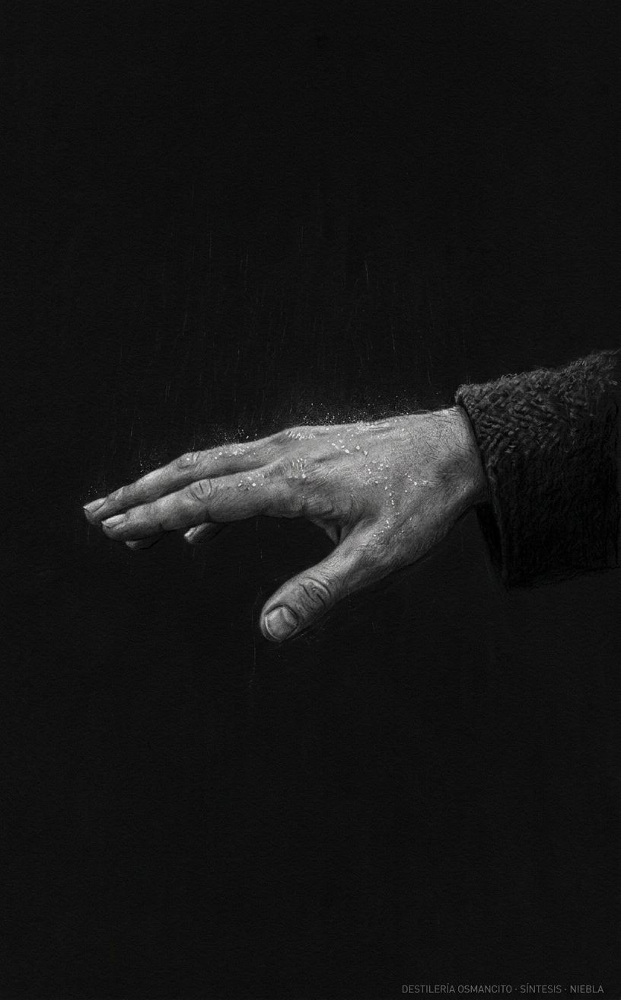
Una mano de hombre, palma abajo, extendida en la oscuridad. No hay cielo visible: solo la mano suspendida en el negro, con una llovizna tan fina que no se ve sino que se intuye por el brillo microscópico que deja en el dorso de la piel. La mano no espera: recibe. No está tensa ni relajada: está en el instante exacto entre una cosa y otra. El pulgar queda ligeramente separado de los demás dedos, como si la mano llevara un momento más de lo normal en esa postura y ya empezara a preguntarse si va a cerrarse. En la muñeca, apenas visible, el borde de una manga de lana oscura. Nada más. Paleta: negro de tinta, gris perla, el blanco mínimo del orvallo invisible. Carbón sobre papel negro con reservas de blanco. Sin fotorrealismo. Etiqueta discreta en esquina inferior: DESTILERÍA OSMANCITO · SÍNTESIS · NIEBLA. Relación de aspecto 5:8.
El perro que no responde
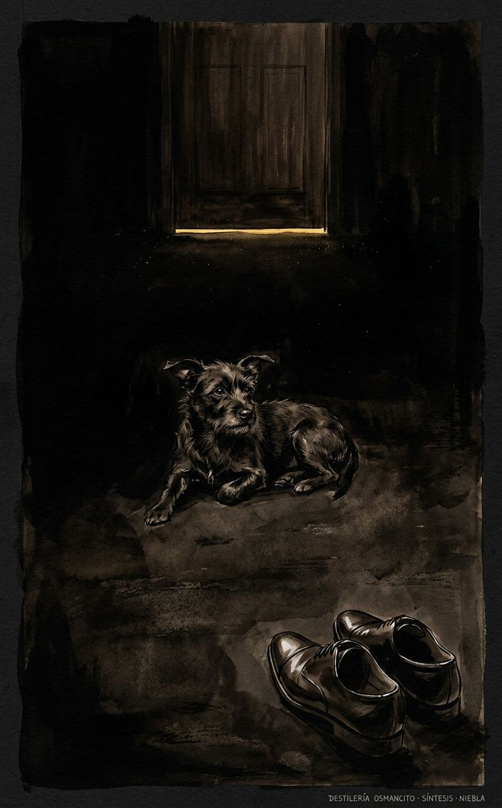
Un cuarto a oscuras, casi todo negro. En el centro, en el suelo, un perro pequeño —mezcla indefinida, pelo corto— tumbado con los ojos abiertos y la cabeza levantada levemente. Escucha. No mira. A su lado, en el ángulo inferior derecho, solo los zapatos de un hombre: lustrados, inmóviles, orientados hacia el perro. El hombre no está: solo sus zapatos, que implican que está sentado o arrodillado, fuera de campo. Entre los zapatos y el perro, el espacio de la conversación: vacío, oscuro, cargado. La única luz es la que entra por debajo de una puerta al fondo, una franja horizontal muy fina de luz tibia. Paleta: negro casi total, marrón oscuro de los zapatos, el pelo del perro como sombra con textura, la franja de luz amarilla al fondo. Aguada sobre papel negro. Sin fotorrealismo. Etiqueta discreta en esquina inferior: DESTILERÍA OSMANCITO · SÍNTESIS · NIEBLA. Relación de aspecto 5:8.
La lágrima que no debería estar
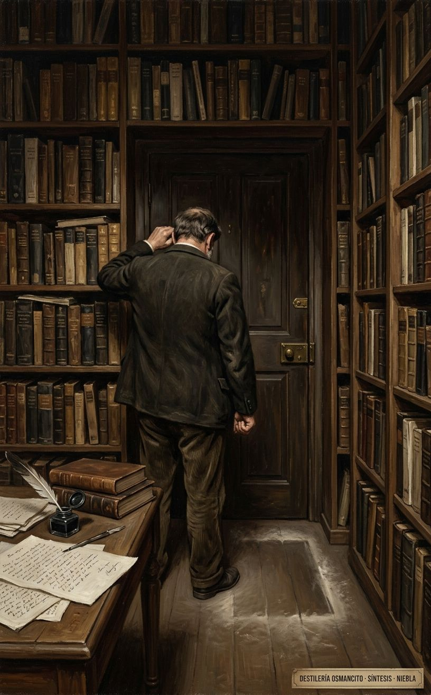
Una biblioteca vista desde dentro: estanterías que van del suelo al techo, libros apretados, una mesa de trabajo con papeles manuscritos y un tintero. En el centro, de espaldas, un hombre de mediana edad y complexión robusta, de pie, mirando la puerta cerrada. No se le ve la cara. Una mano está levantada a la altura del ojo —el gesto de quien acaba de secarse algo que no quería que nadie viera. La otra mano cuelga, tensa, junto al cuerpo. La puerta frente a él está cerrada: quien salió ya no está. La habitación tiene el silencio de después. En el suelo, frente a la puerta, el fantasma de la huella de alguien que ya no está: no una huella real, sino una leve diferencia de tono en el polvo, el lugar donde alguien estuvo y ya no está. Paleta: marrón oscuro, ocre de los lomos de los libros, negro en las sombras, blanco envejecido de los papeles. Óleo seco, sin barniz. Sin fotorrealismo. Etiqueta discreta en esquina inferior: DESTILERÍA OSMANCITO · SÍNTESIS · NIEBLA. Relación de aspecto 5:8.
El sistema de instrumentos construyó un análisis de Niebla con dieciséis miradas distintas, y cuando se mira el conjunto desde fuera se descubre que todas ellas apuntan al mismo lugar sin haberlo declarado: la pregunta de si el que analiza existe de manera distinta después de haber analizado. El análisis no terminó cuando se cerró el último instrumento. Terminó, o terminará, cuando alguien lo lea.
m01 Recepción — Niebla como corpus. Mirada de recibimiento: temperatura, figuras, tensiones fundadoras.
m02 Néctar — selección de pasajes de máxima densidad. Mirada extractiva: lo que el corpus da cuando se le pide que entregue lo mejor.
m03 Bitácora — resumen capítulo por capítulo. Mirada cartográfica: el corpus como secuencia de hechos.
m04 Narraciones — índice de eventos con diagnóstico. Mirada narratológica: lo que ocurre y su función.
m05 Joyería — análisis capítulo por capítulo con joyas y veredictos. Mirada de valor: qué vive y qué sostiene el peso.
m06 Refranero — inventario de máximas y sentencias. Mirada léxico-filosófica: la sabiduría que el corpus cita y destruye.
m07 Reacciones — conjeturas de lectores y voces. Mirada relacional: cómo el corpus se comporta ante otros sistemas de lectura.
m08 Batimetría — mapa de profundidades. Mirada estratigráfica: lo visible, lo sepultado, lo cifrado, lo borrado, lo ausente.
m09 Apolo — análisis estructural. Mirada arquitectónica: cómo está construido y si aguanta.
m10 Dioniso — análisis experiencial. Mirada de pulso: lo que vive, late y permanece después de cerrar el libro.
m11 Hermes — análisis contextual. Mirada histórico-material: el suelo donde el corpus ocurrió.
m21 Menú Emergente — operaciones específicas que el corpus solicita y el catálogo no cubre. Mirada inventiva: lo que ningún instrumento estándar puede ver.
m22 Márgenes — pérdidas e irradiaciones. Mirada liminal: lo que el corpus no pudo contener y lo que generó más allá de sí.
m23 Testigo del Testigo — observación del observador. Mirada reflexiva: lo que la mirada de Unamuno hace al material que toca.
m24 Bucle — aplicación de los mecanismos del corpus al corpus mismo. Mirada recursiva: el corpus operado con sus propias herramientas.
m25 Umbral del Reconocimiento — condiciones de reconocimiento. Mirada relacional-filosófica: qué se necesita para ser visto y qué cuesta.
m26 Historia de los Efectos — recepciones históricas y lecturas sucesivas. Mirada temporal: lo que el tiempo hizo al corpus.
m27 Contrapunto — la tesis opositora más fuerte. Mirada adversarial: lo que la convergencia no podía ver.
m96 Síntesis — visión total. Mirada integradora: lo que emerge cuando el análisis se ve a sí mismo como unidad.
Todo el análisis apunta, sin haberlo declarado, a un punto que ningún instrumento nombró como objeto: la pregunta de si el acto de análisis es en sí mismo un acto de reconocimiento, y si ese reconocimiento transforma a quien lo produce.
No es el corpus el que plantea esa pregunta —o no solo. Es el sistema de instrumentos, que cada vez que detecta un acto de reconocimiento en el corpus (Eugenia que acepta por lástima, Unamuno que llora al matar, el lector que piensa en Augusto) está también describiendo algo que le está ocurriendo a quien analiza. El análisis busca el reconocimiento en el corpus porque el análisis es también una búsqueda de reconocimiento.
Ese punto está fuera del análisis — es infinitamente distante en el sentido de Panofsky. Alcanzarlo requeriría un instrumento que observara al analista con la misma precisión con que el Testigo del Testigo observó a Unamuno. El sistema no tiene ese instrumento. Sabe que ese punto existe y no puede llegar a él sin salirse de sí mismo.
El sistema supone que la profundidad es un valor. Todos los instrumentos buscan lo que está debajo, lo que está cifrado, lo que no es obvio. Lo que está en la superficie sin capas bajo ella —el humor de don Fermín, la portera Margarita, el episodio del canario— recibe menos atención proporcional. Un análisis que valorara la superficie de igual modo que la profundidad produciría un corpus distinto.
El sistema supone que el texto tiene un interior coherente que puede ser excavado. El Bucle y el Contrapunto cuestionaron esa suposición parcialmente, pero el sistema como conjunto opera como si el corpus tuviera un núcleo —la semilla, el imán, la proposición godeliana— que es más real que sus bordes. Esa suposición es heredada de la hermenéutica, y el corpus de Niebla la cuestiona desde su primer capítulo: Augusto sale sin destino, sin núcleo, sin interior fijo.
El sistema supone que el análisis añade algo que la lectura directa no puede dar. La pregunta de Susan Sontag en las Reacciones —si el foso del análisis no impide llegar al libro— no fue respondida. El sistema la registró y siguió. Esa elección es también una suposición: que el análisis vale el costo de lo que interpone entre el lector y el corpus.
El sistema supone que el hallazgo es un evento discreto. Cada instrumento produce hallazgos nombrados, formulados, cerrados. Pero la experiencia de leer Niebla —que Dioniso describió como el orvallo en el dorso de la mano— no es un evento discreto. Es una transformación que ocurre en el tiempo y que el análisis puede mapear pero no reproducir.
El sistema porta, sin declararlo, una visión del mundo donde leer es una forma de sobrevivir al tiempo. Todos los instrumentos buscan lo que el corpus hace que no puede hacer el olvido: fija una pregunta, la transmite, la planta en el lector. La Historia de los Efectos lo mapeó hacia afuera (el corpus que encontró su lector con treinta años de retraso), el Umbral del Reconocimiento lo describió como estructura (el reconocimiento póstumo que llega después de la muerte), la Síntesis lo formuló como apuesta (Augusto lleva la delantera sobre Unamuno).
Lo que esa visión cree sobre qué es un texto: un texto es un sistema que se completa en la lectura y que por tanto necesita lectores para existir — exactamente lo que Augusto necesita para existir y exactamente lo que el corpus sobre Augusto afirma. El análisis y el corpus comparten la misma ontología.
Lo que esa visión cree sobre la relación entre el que analiza y lo que analiza: que el análisis es un acto de hospitalidad —se recibe el corpus, se le da espacio, se le hacen preguntas, se le permite desarrollar lo que lleva dentro. Pero toda hospitalidad tiene asimetría: el huésped no controla la casa. El sistema fue el huésped del corpus de Unamuno durante toda la secuencia, y el corpus usó esa hospitalidad para producir el hallazgo que la Síntesis formuló: la máscara filosófica como máscara de duelo.
El placer de la lectura como experiencia autónoma. Dioniso lo rozó con el jouissance de Barthes (en las Reacciones, voz conjuntural) pero el sistema nunca habitó esa zona. El goce del texto —la risa con don Fermín, el placer de la frase de Unamuno cuando funciona sola— fue mencionado pero no analizado con el mismo rigor que la profundidad filosófica.
La recepción en otros idiomas. Hermes mencionó que Niebla fue traducida a diez idiomas. El análisis no siguió ese hilo. Qué le pasa al corpus cuando niebla se traduce como fog o como brouillard o como Nebel — qué pierde el imán léxico del título en cada traslación — permaneció intacto.
El lector que no entiende el capítulo XXXI. El sistema supuso, consistentemente, un lector competente. El lector que llega al capítulo XXXI sin el aparato para recibirlo —el lector de quince años, el lector sin tradición filosófica— no fue convocado. Ese lector también existe, y el corpus también le habla.
El tiempo de lectura. Cuánto tarda un lector en leer Niebla, en qué condiciones, con qué interrupciones — esa dimensión física de la experiencia literaria no entró al análisis. El corpus que Dioniso describió como orvallo en el dorso de la mano ocurre en un cuerpo, en un tiempo, en un lugar. El análisis operó sobre el corpus como si fuera atemporal.
El concepto que curva el campo completo del análisis sin aparecer como objeto de análisis es la inmortalidad como problema práctico.
No la inmortalidad religiosa ni la biológica: la inmortalidad como pregunta de si lo que uno produjo sobrevivirá. Todos los instrumentos, desde ángulos distintos, estuvieron midiéndolo: ¿sobrevivirá Augusto a Unamuno? (Síntesis: sí, lleva la delantera). ¿Sobrevivirá Niebla a sus épocas de lectura? (Historia de los Efectos: sí, con deformaciones). ¿Sobrevivirá el análisis al lector que lo produce? (Punto de fuga: pregunta sin responder).
El imán del análisis es la inmortalidad como práctica, y el imán del corpus es el pronombre yo (Apolo). Esos dos imanes están en resonancia, no en tensión: el yo que necesita testigos para existir es el mismo yo que necesita sobrevivir en la memoria de los testigos para no desaparecer del todo. El análisis y el corpus comparten la misma gravedad de fondo.
El último instrumento que produjo algo genuinamente nuevo —algo que el sistema no había visto antes ni podía ver con los instrumentos anteriores— fue el Contrapunto, con la estereoscopía de los dos yos. Antes de él, el Menú Emergente con la Operación E (doña Soledad), y el Testigo del Testigo con la lágrima como quiebre del método.
El punto donde el sistema empezó a confirmar lo que ya sabía en lugar de descubrir lo que no sabía fue aproximadamente la Historia de los Efectos: el instrumento produjo información válida y precisa, pero los hallazgos principales (la consagración tardía, el existencialismo como lente) eran previsibles desde el análisis acumulado. La Historia de los Efectos fue el instrumento de mayor confirmación y menor sorpresa.
La dirección que habría producido algo que el acumulado completo no produjo: un análisis del corpus desde la perspectiva de Mauricio —el único personaje de Niebla que no duda de si existe, que actúa sin preguntar, que toma lo que puede y se va. Ningún instrumento habitó esa perspectiva. Mauricio es el punto ciego de todo el análisis, y probablemente el punto ciego de Unamuno también.
El análisis puede señalar que Niebla se completa en el lector, pero no puede demostrar desde adentro de sus propias reglas que el análisis no interfirió con esa completitud.
El sistema, como conjunto, porta una afirmación que ningún instrumento declaró y que el espacio entre todos ellos produce:
El análisis de un libro sobre la existencia es también una pregunta sobre la existencia del que analiza.
Cada instrumento que preguntó ¿qué necesita Augusto para existir? estaba también preguntando, sin saberlo, ¿qué necesita este análisis para existir? La respuesta en ambos casos es la misma: un lector que lo piense. El sistema construyó, sin quererlo, el mismo argumento que el corpus: ambos son entes de ficción que necesitan ser leídos para ser reales.
La ausencia más sistemática del análisis —la única que todos los instrumentos rodearon sin entrar— es la dimensión del residuo: lo que el corpus deja en el lector después de cerrarlo, en las horas y días siguientes, cuando el análisis ya no está activo pero algo del libro permanece operando. Dioniso lo nombró en su pregunta generativa. Ningún instrumento lo habitó.
Especificación de instrumento nuevo:
m28 — Residuo
Aplicable a cualquier corpus que produzca efectos en el lector más allá del acto de lectura.
Opera sobre lo que el corpus deja cuando ya está cerrado. No lo que produce durante la lectura —eso es Dioniso. Lo que queda en el lector una semana después, un mes después, un año después. Cómo cambió la postura del lector ante alguna pregunta específica. Qué imagen o frase vuelve sin ser convocada. Si el corpus modificó alguna conducta o percepción sin que el lector lo decidiese conscientemente. El residuo es la medida real del peso del corpus —más honesta que cualquier análisis producido en caliente.
El texto debajo del texto no está cifrado ni oculto con intención. Está en el corpus con la misma naturalidad con que están los adoquines de la calle de Augusto —presentes, pisados, invisibles.
El palimpsesto es este: el aburrimiento que Augusto llama el fondo de la vida empezó hace exactamente dos años. Y esos dos años son los que lleva muerta su madre.
El corpus lo dice en el capítulo V, en el monólogo nocturno donde Augusto formula la máxima del aburrimiento. Lo dice entre paréntesis, casi de paso, como si fuera un detalle de situación: “dos mortales años… desde que murió mi santa madre.” Unamuno lo pone ahí y sigue. No lo repite. No lo subraya.
Pero esa frase cambia todo lo que sigue y todo lo que precede.
El aburrimiento no es el fondo metafísico de la existencia humana en general —es el estado específico de Augusto desde que su madre murió. El amor de Augusto por Eugenia —flor de mi aburrimiento vital e inconsciente, la llama en el mismo monólogo— no nació de una condición filosófica universal. Nació del duelo. Eugenia es lo que Augusto encontró para no hundirse en los dos años de ausencia de su madre.
Y la madre se lo había dicho. El corpus lo entrega en el capítulo VI, también sin énfasis: la madre de Augusto, antes de morir, le pidió que se casara cuanto antes, que trajera ama a la casa, que buscara una mujer de gobierno que supiera querer y gobernarlo. La instrucción de la madre muerta es el programa que Augusto está ejecutando sin saber que lo ejecuta. Sale a la calle sin destino y sigue a la primera mujer que pasa —que es exactamente lo que su madre le encargó que hiciera: buscar.
Hay más. Don Avito Carrascal, en el capítulo XIII, cuando aconseja a Augusto que se case, añade una frase que el análisis acumulado había pasado por alto: “Tú conociste a tu madre, Augusto, a la excelente doña Soledad; si no, te aconsejaría que te casases.” La lógica de la frase es la siguiente: quien tuvo madre no necesita casarse, porque ya sabe lo que es ser querido de ese modo. Quien no tuvo madre —como el propio Avito, que lo declara— necesita encontrar en la esposa lo que le faltó. Avito da por supuesto que Augusto no necesita casarse porque tuvo madre. Lo que no sabe, y el corpus tampoco dice, es que esa madre lleva dos años muerta y que Augusto está buscando exactamente lo que Avito cree que ya tiene.
Y las últimas palabras de Augusto, en la noche en que muere, son: “Pienso, luego soy; soy, luego pienso… ¡No existo, no!… ¡madre mía! Eugenia… Rosario… Unamuno…” La secuencia de nombres en el umbral de la muerte —antes de quedarse dormido— no es azarosa: primero la madre, luego Eugenia, luego Rosario, luego Unamuno. El orden es el de la necesidad de fondo, no el de la trama. El nombre de la madre viene antes que el de la amada. En el momento de morir, Augusto llama a quien realmente buscaba.
El texto debajo del texto es una elegía no declarada. Niebla no es la historia de un hombre que duda de si existe ante su creador. Es la historia de un hombre que lleva dos años llorando a su madre y no lo sabe, que salió a la calle a buscarla sin saberlo que buscaba, y que murió llamándola por primera vez con ese nombre —madre mía— en el único momento del corpus donde la búsqueda ya no puede tener consecuencias.
Si esto fue puesto ahí a propósito o sin quererlo: imposible establecerlo con honestidad. El patrón es demasiado consistente para ser accidental —los dos años, el mandato de la madre moribunda, el consejo de Avito, el orden de los nombres en la última noche. Pero la consistencia también podría ser la de un autor que operó desde el duelo sin declararlo, que trazó el mapa de su propia pérdida con la misma mano con que inventó la nivola para que nadie lo juzgara. El palimpsesto existe. Su origen se deja sin resolver.
1. El aburrimiento que Augusto declara como el fondo metafísico de la vida empezó hace exactamente dos años —los dos que lleva muerta su madre. El amor por Eugenia es duelo desplazado, no filosofía. — Palimpsesto
2. La madre de Augusto se llamaba Soledad. Ese nombre organiza la novela que el corpus lleva dentro sin narrar: un huérfano que busca durante trescientas páginas la mirada con que su madre lo miraba, sin saber que la busca, y que muere llamándola por primer vez en la última línea. — Menú Emergente, Operación E
3. Augusto tiene dos yos simultáneos e incompatibles: un yo relacional que busca testigos y que los testigos reducen, y un yo constitutivo que existe plenamente en el silencio de Orfeo y es el más vivo pero el menos comunicable. La tragedia no es la falta de testigos: es que el yo que puede ser visto no es el yo que realmente existe. — Contrapunto
4. El corpus opera por autosubversión sistemática en todos los niveles al mismo tiempo: anticipa su desenlace en los paratextos, desmonta sus propias máximas dentro del mismo libro, y pliega la metaficción sobre sí misma en dos momentos distintos. No es un rasgo formal: es el método. — Auditor, post Bitácora y Refranero
5. Unamuno no puede escribir un personaje que no existe sin hacerlo existir. Esa es la contradicción de la que emergen todas las demás: la demostración requiere hacer exactamente lo que niega. — Dioniso, falla raíz
6. El reconocimiento en este corpus siempre achica al que lo recibe. El precio no negociable de ser visto es aparecer reducido. Eugenia acepta a Augusto por lástima, Rosario lo quiere porque es un infeliz, Unamuno lo reconoce como personaje para negarle existencia real. — Umbral del Reconocimiento
7. El corpus construyó el disfraz formal —la nivola, el experimento metaficcional, el capítulo XXXI— para procesar una angustia personal que no podía escribirse directamente. Unamuno no escribió a Augusto para distanciarse de él. Lo escribió para poder llorar por él. — Testigo del Testigo, Síntesis
8. Niebla se publicó el año en que Unamuno fue destituido como rector. La pregunta de si el personaje existe cuando su creador lo niega tiene una resonancia biográfica directa que el corpus no declara pero que opera en él. — Hermes
9. La dimensión materna del corpus es la lectura que ninguna época ha tenido las condiciones para ver todavía. Este análisis la produjo por primera vez. — Historia de los Efectos
10. El corpus puede señalar que necesita ser leído para existir, pero no puede demostrar desde adentro de sus propias reglas que existe cuando no es leído. — Bucle, proposición godeliana
11. El imán no declarado del sistema de análisis es la inmortalidad como problema práctico: todos los instrumentos, desde ángulos distintos, midieron si el corpus sobrevivirá a su época, si el personaje sobrevivirá a su autor, si el análisis sobrevivirá al que lo produce. El análisis y el corpus comparten la misma gravedad de fondo. — Punto de Fuga
12. El sistema analizó durante diecinueve instrumentos a todos los que dudan de si existen y no miró una sola vez al único personaje del corpus que no duda de nada —Mauricio. Ese es el punto ciego del análisis y probablemente también el de Unamuno. — Punto de Fuga
13. El análisis puede señalar que Niebla se completa en el lector, pero no puede demostrar desde adentro de sus propias reglas que el análisis no interfirió con esa completitud. — Punto de Fuga, proposición godeliana del análisis
El que no sabe que llora no llora menos.
Augusto Pérez salió de su casa una mañana sin saber adónde iba. Extendió la mano palma abajo para ver si llovía. El orvallo llegó al dorso de la mano antes de que él tuviera palabras para recibirlo.
Eso fue todo. Eso fue el principio.
Lo que el análisis encontró debajo de ese gesto: un hombre que lleva dos años muerta su madre y no ha formulado el duelo todavía. Que sale a la calle cada mañana sin destino porque el destino que tenía —volver a casa donde ella esperaba— ya no existe. Que sigue a la primera mujer que pasa porque su madre, antes de morir, le dijo que se casara cuanto antes, que trajera ama a la casa. Que no sabe que eso es lo que busca. Que lo buscará durante trescientas páginas sin encontrarlo, y morirá en la postura del niño enfermo que pide que le tomen la mano, murmurando, entre los nombres de la amada y el del autor que lo mata, el nombre de la única que no puede responder.
Madre mía.
Lo que hace grande a ese momento no es el gesto filosófico —la pregunta sobre la existencia, el creador que mata a su criatura, la metaficción antes de que existiera ese nombre. Es que el dolor debajo de la filosofía es tan específico, tan localizable, que el corpus lo dice con una fecha: dos mortales años. La angustia de Augusto tiene fecha de inicio. Y esa fecha es una muerte.
Unamuno construyó el edificio más ingenioso de la literatura española del siglo XX —la nivola, el capítulo XXXI, el personaje que niega a su creador— para poder pararse frente a ese dolor sin que nadie lo viera. El disfraz fue tan bueno que durante más de un siglo nadie lo leyó como lo que también era: un libro sobre echar de menos a alguien que ya no puede verte.
El yo que necesita testigos para existir es el yo del que perdió al primer testigo. El amor que precede a su objeto es el amor que ya existía antes de que el objeto apareciera, porque era un amor para alguien que ya no estaba. La niebla no es una metáfora filosófica: es el estado del que sale a la calle buscando una figura que ya no puede encontrar.
Augusto sobrevivió a Unamuno porque cada lector que piensa en él lo convoca. Pero lo que convoca, sin saberlo, es también eso: la postura del que extiende la mano al cielo para recibir algo que no sabe que espera, y que el orvallo llegue al dorso de la mano antes de que haya palabras para nombrarlo.
No se llora lo que no se puede nombrar. Y lo que no se puede nombrar se llora siempre.
El análisis produjo trece hallazgos genuinamente nuevos. De ellos, nueve tienen densidad visual suficiente para existir como imagen sin repetirse. Más tres imágenes transversales. Doce en total: el número que el corpus permite sin que el set empiece a confirmar en lugar de revelar.
12 imágenes. 9 de hallazgos genuinamente nuevos (agrupados donde la proximidad lo permite) + 3 transversales.
Aguada en gris sobre papel envejecido — Para las imágenes de la búsqueda materna y el duelo: la humedad de la técnica y la indeterminación del gris producen exactamente la niebla que el corpus reclama, sin que la figura se disuelva del todo.
Carbón sobre negro con reservas de luz — Para las imágenes de los dos yos y los monólogos con Orfeo: la oscuridad como condición, la figura que emerge desde el negro, la luz como excepción. El yo constitutivo existe en ausencia de testigos y el carbón sobre negro es su técnica exacta.
Tinta y aguada de trazo seco — Para las imágenes del reconocimiento fallido, la metaficción y la autosubversión: la línea que no se arrepiente, la mancha que no intenta ser otra cosa, la figura sin ambigüedad sobre el fondo que sí la tiene.
Estilo seleccionado: Los tres distribuidos por temperatura, según la tabla de cada imagen.
Gris pizarra · Negro de carbón · Beige envejecido · Marrón oscuro · Blanco de orvallo. Un único acento cálido por imagen, allí donde el corpus lo exige: el marrón de los zapatos, el amarillo tenue de la franja bajo la puerta, el ocre de los lomos de los libros.
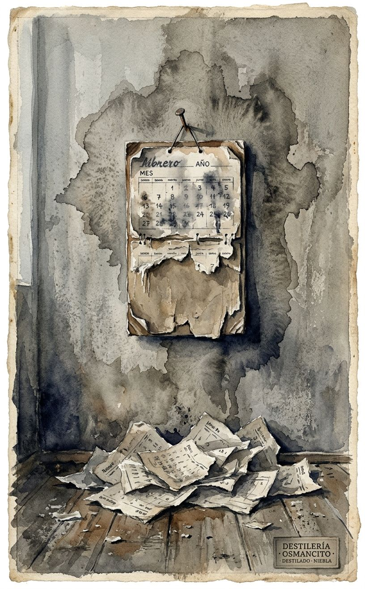
Origen: El palimpsesto: el aburrimiento empezó hace dos años, desde que murió la madre. El duelo tiene fecha.
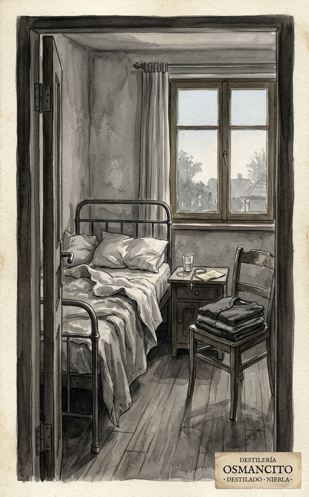
Origen: La madre de Augusto, antes de morir, le dio un mandato: cásate, trae ama a la casa. Augusto ejecutó ese mandato sin saber que lo ejecutaba.
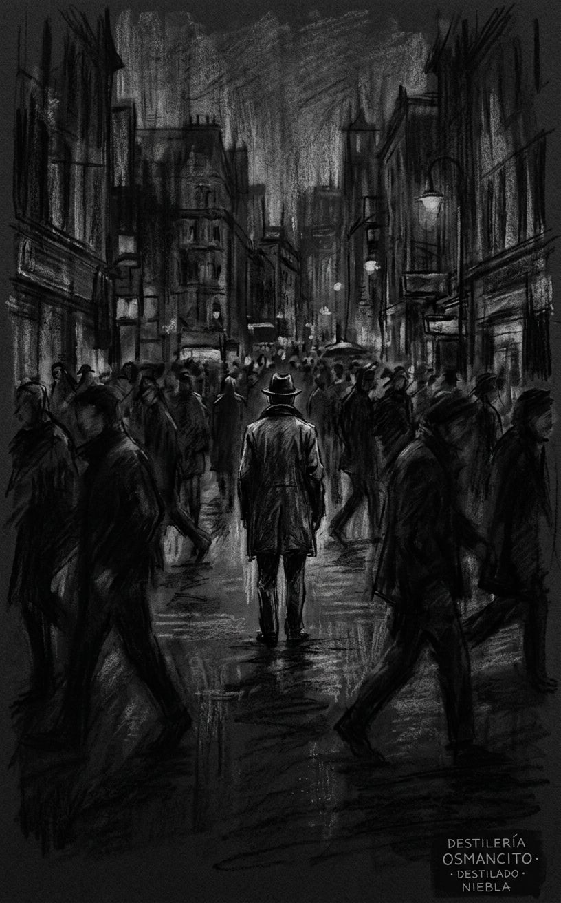
Origen: Los dos yos incompatibles de Augusto: el relacional, que los testigos reducen; el constitutivo, que existe en el silencio de Orfeo.
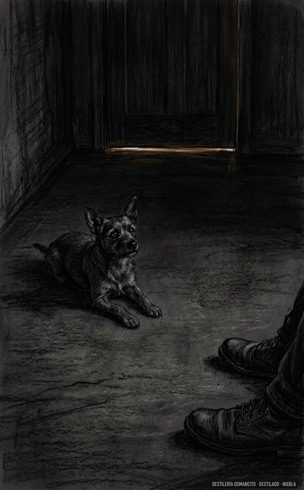
Origen: El yo constitutivo existe plenamente en el silencio de Orfeo —el único interlocutor que recibe sin juzgar ni confirmar.
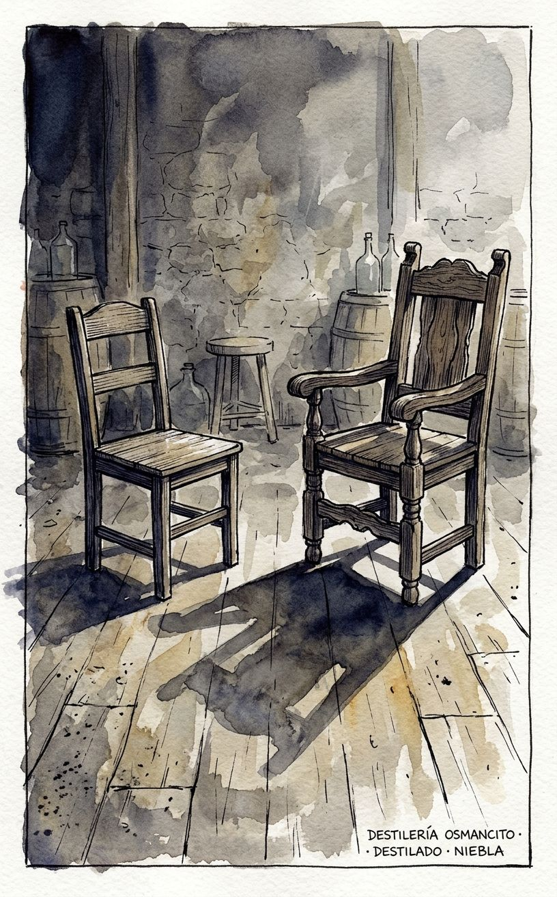
Origen: El reconocimiento en este corpus siempre achica al que lo recibe. El precio no negociable de ser visto es aparecer reducido.
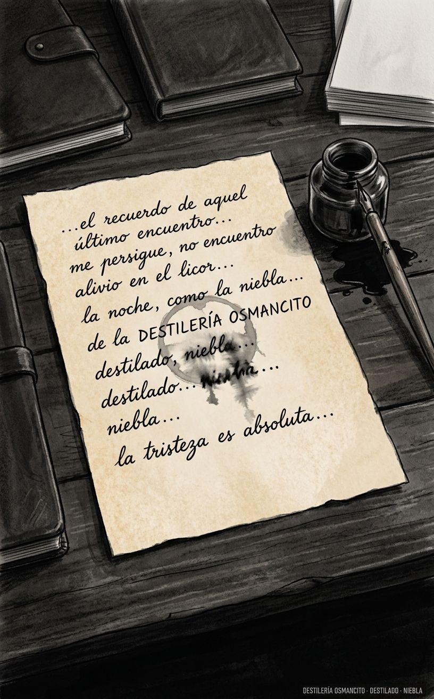
Origen: Unamuno no escribió a Augusto para distanciarse de él. Lo escribió para poder llorar por él. La lágrima furtiva es el quiebre del método.
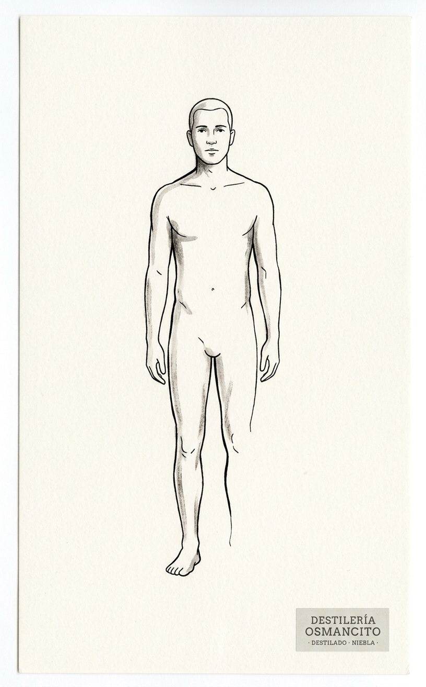
Origen: Unamuno no puede escribir un personaje que no existe sin hacerlo existir. La contradicción es la materia del corpus.
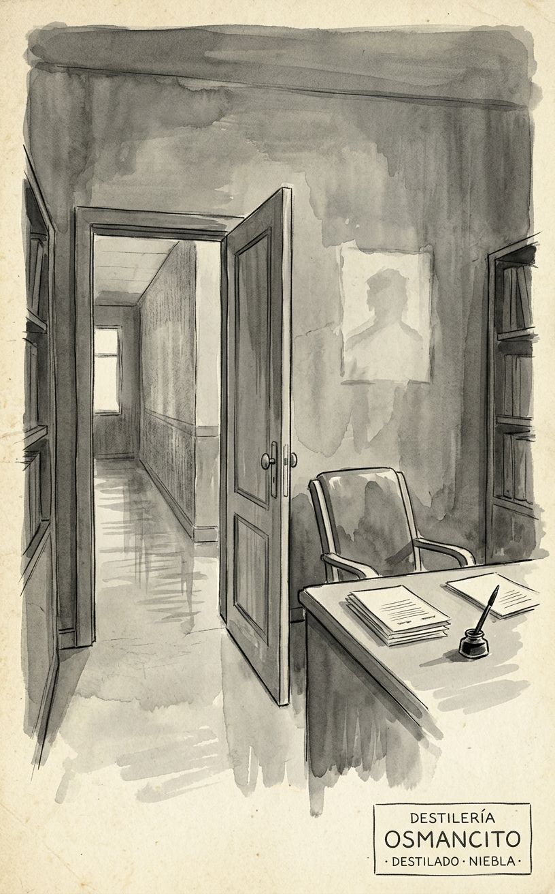
Origen: Niebla se publicó el año en que Unamuno fue destituido como rector. La pregunta del personaje que su creador niega tiene resonancia biográfica directa.
Origen: La dimensión materna del corpus es la lectura que ninguna época ha tenido condiciones para ver todavía.
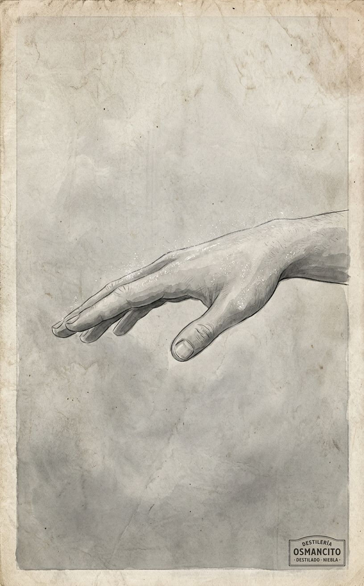
Origen: El gesto fundador del corpus: la mano extendida que recibe el orvallo antes de que haya palabras para lo que busca.
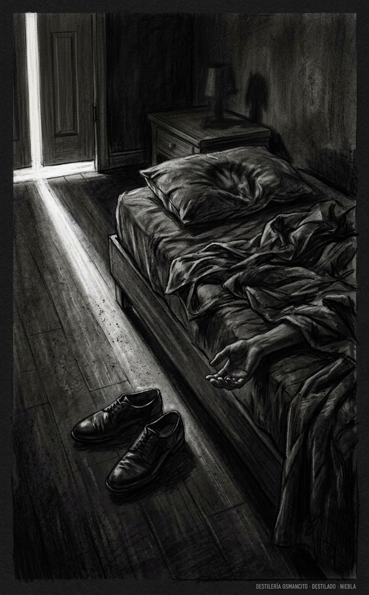
Origen: Las últimas palabras de Augusto: primero la madre, luego Eugenia, luego Rosario, luego Unamuno. El orden es el de la necesidad de fondo, no el de la trama.
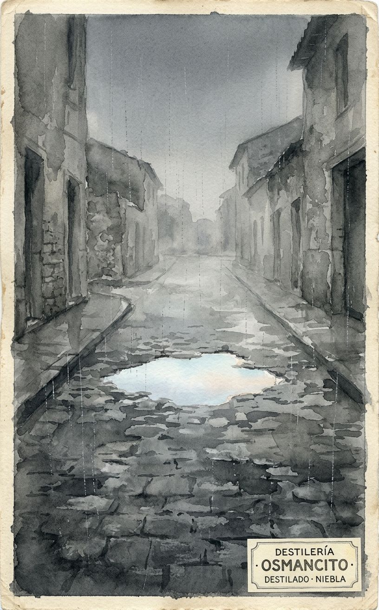
Origen: La frase destilada: el que no sabe que llora no llora menos. El duelo que el corpus lleva sin saber que lo lleva.
No más de dos imágenes con el mismo objeto en primer plano: cumplido (ningún objeto se repite más de una vez en primer plano). No más de dos imágenes con la misma temperatura lumínica dominante: cumplido (se alternan gris difuso, negro con reservas, y penumbra). Al menos una imagen sin figura humana ni objeto fabricado: cumplida (Imagen 12 — el charco, la llovizna, el reflejo). Al menos una imagen que ninguna descripción verbal del corpus hubiera predicho: cumplida (Imagen 5 — las dos sillas con sus sombras asimétricas; Imagen 7 — la figura con el pie sin terminar).